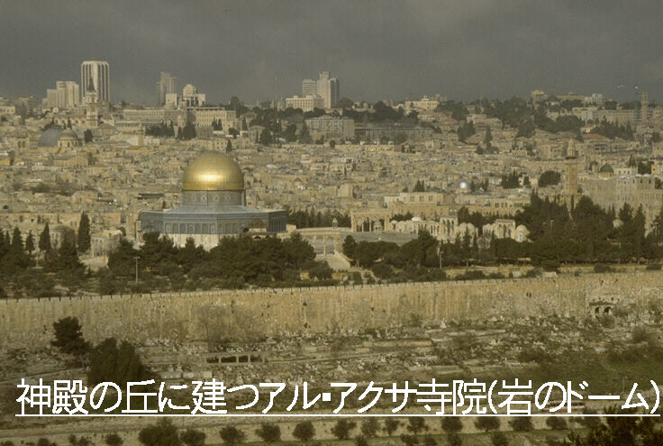
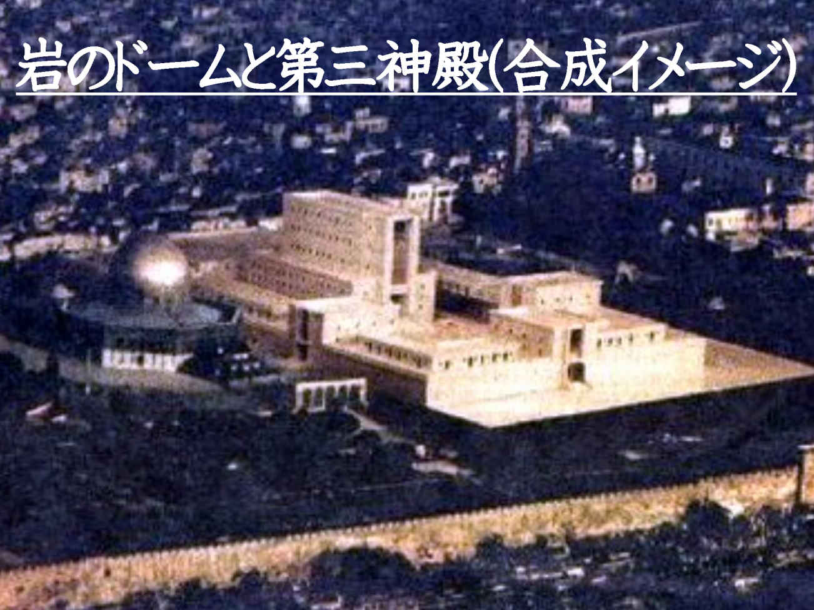
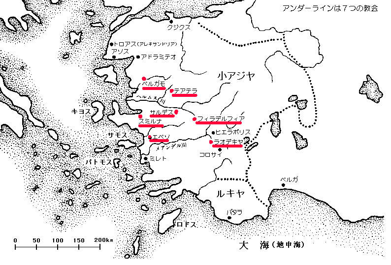
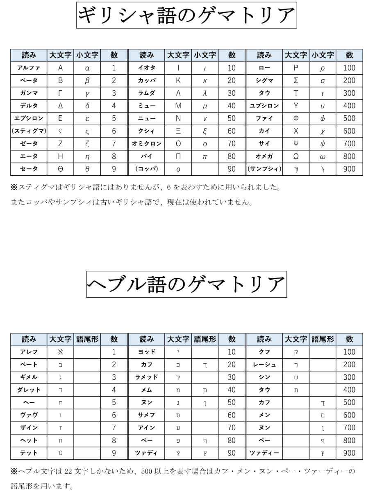
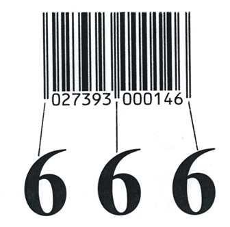
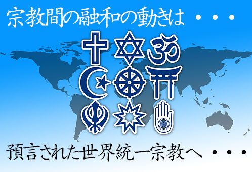
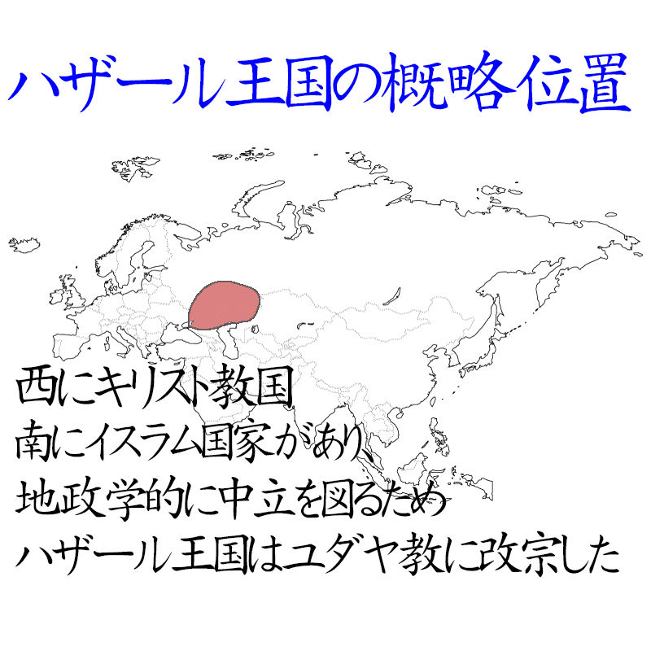

| 日本人に知らせたい聖書の終末論: キリスト教文化圏の終末意識 | |
| モトイ・トクメイ（基・督命） | |
| (2017) | |
Google版
日本人に知らせたい聖書の終末論
モトイ・トクメイ（基・督命）著
本書は２０１１年１２月にパブーから販売したした電子書籍のKindleバージョンです。8年近くも時がたちましたが、取り扱っている内容が聖書預言ですので、時がたってよりいっそう現実味がでてきた感さえあります。
2019年のパブー閉店にともない、Google版も無料にて公開致しました。Google版は下記よりご確認いただけます：
初期バージョンは２０１２年問題やアセンション、またフォトンベルトの騒ぎの前に公開いたしました。そのためそれらを聖書的に否定する章をもうけていました。今後も似たような騒ぎになっても聖書的な判断ができるようにと、あえてGoogle版でもそれらの内容はそのまま残しました。
第４５代米国大統領に就任したドナルド・トランプ氏は米国の利益を守ると言って当選しました。どんな政権になるのかは未知数ですが、誰もが理解できることは、アメリカがかつてのような「世界の警察」ではなくなるということです。これはオバマ政権時代にもあった傾向ですが、トランプ政権はもっと自国利益を優先した保護貿易主義になるだろうと言われています。
いっぽうロシアのプーチン大統領も、かつての強いロシアの復活を演出していると言われています。ウクライナでもシリアでもロシアが強気であるのはその現れです。
本書でも取り扱っている旧約聖書エゼキエル書３８章３９章の預言は、ロシアを中心としたイスラム諸国の同盟がイスラエルに攻め上る構図です。アメリカが世界覇権から手を引き、ロシアが強気に出ている現在、この預言はますます成就に近づいていると言えるでしょう。
本書を通して皆さんが聖書預言にさらなる興味を抱かれたのなら、より詳しく終末預言を解説した、拙著「世の終わりが来る: オカルトではない本当の聖書終末論」をお読み頂くことをお勧めします。
人は誰でも未来について知りたいのではないでしょうか。しかし未来予言とか終末論となると、とてもおどろおどろしいイメージが付きまとうのも事実です。特に聖書の預言（神から預かった言葉）となると、宗教的なイメージもあって手を出しにくいかも知れません。思い切って聖書を読んでみたとしても、難しすぎて何が書いてあるのか分らない方もいらっしゃると思います。
時にはヨハネの黙示録のような終末預言に果敢にもチャレンジをする猛者もいます。しかしほとんどのチャレンジャーは聖書の正統的な解釈のルールから逸脱しています。例えばチェルノブイリ原発事故の際に黙示録８章１０節１１節の次のことばが成就したとする考え方がその一つです。その考え方は後に述べる如くに部分的に正しく、また部分的に間違ってしまっています。黙示録８章１０節１１節は以下のように記されています：
第三の御使いがラッパを吹きならした。すると、たいまつのように燃えている大きな星が天から落ちてきて、川々の三分の一のとその水源に落ちた。
この星の名は
チェルノブイリの原発事故がこの預言の成就だとする根拠は、チェルノブイリと言う言葉が「
確かに聖書はこの事故を通して私たちに注意を喚起しているとは言えます。その意味では預言的です。しかしこの聖書個所で「川の水の三分の一」が飲めなくなったと言うことは、正統な聖書解釈で言えば本当に全世界の川の水の三分の一が飲めなくなることを意味します。したがってチェルノブイリの事件はこの聖書個所がどのように成就するかの予表、つまり警告的な注意喚起ではあっても、預言の成就そのものではありません。
聖書は例えばなしや比喩で書かれていることも多いです。特に黙示録はそのままで解釈するべきところと、比喩や幻として解釈するべきところが分りにくくなっています。それゆえに聖書の全体を詳しく調べないと、預言が虫食い状態で成就したように思えてしまいます。
黙示録は聖書のほかの個所で預言されていることの、時系列的なまとめとも言える書物です。先の黙示録８章１０節１１節の預言で言えば、この事件が起きる前にイスラエルを中心とした中東戦争が起きていなければなりません。それに続いて「反キリスト」と呼ばれる人物の登場や、彼の仲裁による一時的な平和、そしてエルサレムにユダヤ教の神殿が再建され、いけにえの儀式が復活していなければなりません。本書では聖書の終末論を正統的な聖書解釈に則って説明していきます。
また読者は次のような国際ニュースが聖書預言で語られていたと知れば、終末論こそが今の時代に必要な知識なのだとご理解頂けるのではないでしょうか。
２００５年１０月、ロイター通信はイランのアフマデ・ネジャド大統領が「イスラエルは地図上から消え去るべきである」と発言したと全世界に伝えました。その報道により世界は、中東問題の緊張を肌で感じることになりました。
実はこの発言は以下に引用する旧約聖書の詩編８３篇４節の言葉と瓜二つなのです。この一節は古代イスラエル王国が敵に囲まれた時に記録されたものです。しかし同時に聖書神学者の間では、世の終わりの時代について預言されたものとしても扱われています：
彼らは言っています。「さあ、彼らの国を消し去って、イスラエルの名がもはや覚えられないようにしよう。」
このため一部のキリスト教徒には、アフマデ・ネジャド大統領のこの発言を「聖書の預言の成就」とする考え方があります。
さらにまた聖書には、中東問題解決の困難さを預言した言葉もあります。それは同じく旧約聖書のゼカリヤ書１２章３節の以下の言葉です：
その日、わたし（神）はエルサレムを、すべての国々の民にとって重い石とする。すべてそれをかつぐ者は、ひどく傷を受ける。地のすべての国々は、それに向かって集まってこよう。
エルサレムの帰属問題は中東和平の中心的難問です。パレスチナ側はエルサレムを首都にしたいと考えているし、イスラエルもいま手にしているエルサレムの支配権を手放すことは考えていません。
欧米の政治指導者たちは、この問題を仲介して中東和平を実現しようとたびたび苦心しています。その理由はこの大問題を解決すれば、自分の名前が世界史に残るからです。しかしその誰もがエルサレムを「重い石」と感じたことでしょう。そしてこの「重い石」を無理に担ごうとすれば「ひどく傷を受ける」ことになるでしょう。
１９９３年にオスロ合意を仲介し、中東和平で歴史に残る仕事をしたビル・クリントンアメリカ大統領（当時）でしたが、９８年にモニカ・ルイウィンスキー嬢とのスキャンダル問題で不名誉を被ってしまいました。当事者であったイスラエルのラビン氏は暗殺され、ＰＬＯのアラファト議長もかつてのような強い指導力を発揮できなくなり、非ＰＬＯ系の暴走を抑えることができませんでした。そして今は彼も死んでしまっています。中東問題の根本的な解決はまだ何もなされていません。
一部の聖書学者はこれを、重い石を担いでひどく傷を受けてしまった、と言う預言成就の結果であるとしています。
キリスト教文化圏の人々はこのような聖書知識を、おぼろげながらにも知っています。そして彼らの思想的な背景には、聖書の記す未来についての時間の流れが横たわっています。その時間の流れは終末思想と呼ばれ、イスラエルを主役とした戦争の勃発と、それを発端とした黙示録的な世界的混乱が中心となっています。
さらに知識のあるクリスチャンなら先に述べた如く、その混乱の最中に「反キリスト」と呼ばれる人物が登場し、世界が一時的に平和を取り戻すことも知っているでしょう。その時には世界統一政府が出現すると言われています。
このようにキリスト教文化圏の人々の知識の根底には聖書の預言があります。彼らは意識するとしないとに係わらず、世の中の流れを聖書の預言で見ています。
これは日本人が「
近年はマヤカレンダーやフォトンベルトについてなど、近未来についての本が出版されることも多くなりました。その中で時々聖書についても扱われているのを見かけます。しかし多くの場合、著者が聖書の全体を理解していないために、その本来あるべき正統的な解釈がなされていません。そして日本では聖書の終末論に関する本格的な書物となると、キリスト教徒向けの書物となってしまい、難易度が極端に高いものとなってしまいます。
私はキリスト者としてこのような現状をとても残念に思っています。日本には聖書の正統な理解を持つキリスト者による、聖書を理解していない大多数の人々を対象とした、聖書の終末預言の解説書が必要です。そしてもし皆さんが正しく聖書解釈を知るのなら、聖書が未来について書いてある博物館のような存在であることが分かって来るでしょう。本書はそんな思いから書かれています。
聖書に詳しい人のためにここで、著者としての私の神学的な立場を明らかにしておきます。
私はプロテスタントの信仰を持ち、聖書をすべて神の霊感を受けた書物と信じています。そして終末論としては、大患難前携挙説と千年期前再臨説を支持しています。聖霊論に関しては、聖書の奇跡を実際に起こった事実と考え、現代にも同じように奇跡が起こり得ると信じています。しかし同時に現在は、偽預言者や偽教師がかつてないほどに多く出現している時代だとも思っています。
プロテスタントの聖書解釈には諸説あります。私はそれらの説の一つが正しくて他が異端であるとは考えません。ここで正統とした神学は、聖書を神の言葉と信じているキリスト教徒（とりわけプロテスタントの）比較的に多数の人々が支持している、いまのところのスタンダードな神学である、と言うことです。（事実１００年前にはリベラル派神学と呼ばれる、別の学派が優勢でした。）
繰り返しになりますが、この本は聖書の全体的な理解を持つ日本人キリスト者による、キリスト教に親しみの無い大多数の日本人を対象とした、未来に関する聖書の終末預言の解説書です。
そのために聖書の記述よりもその預言されている事柄を解説するように努力しました。それはなるべく煩雑な引用作業を省略して、聖書に書いてある内容そのものをご紹介したかったからです。しかしどうしても引用しなければならない箇所も多数ありました。そこで引用の際にはその前後関係を省略せずになるべく分りやすく解説したつもりです。また巻末に参考となる聖書個所を載せました。興味がある方は巻末の聖書個所も読みながら、さらに理解を深めることができます。
この本は以下の構成によって聖書の終末論を説明して行きます。
第一章 「いつから終末の時代？」
まずはじめに聖書の述べる終末の時代がいつからなのかをこの章で見て行きます。
第二章 「突然来る破滅」
聖書は世界には初めと終わりがあると説きます。その終わりの時代の先は永遠に続く神の国です。この章ではその終りの時代の押し迫った混乱の時代がどのように始まるのかを解説していきます。
第三章 「大患難時代」
この章では終末の大混乱の時にどのようなことが起こると聖書に預言されているのかを解説していきます。同時に今も世界に見ることが出来る、この終末の患難期の伏線について解説していきます。
第四章 「陰謀について」
近未来予言について興味を持ちだすと、陰謀グループの存在が見え隠れしてきます。陰謀論は世の中に数々あります。しかしその中には陰謀家らが聖書を創り出したとする説まで登場しています。この章では聖書的な立場から見た陰謀論の解説を試みます。トンデモ話などではなく、現実に進行している策略としてこの話を取り上げ、聖書預言的に陰謀論を展開していきます。
第五章 「神の国の到来」
この章では大患難時代の先に登場するとされる「千年王国」とその終わりについて、そしてさらにその先にやって来る「新しいエルサレム」と呼ばれる永遠の世界の模様を解説していきます。
第六章 「最も言いたかったこと」
聖書全編を通しての中心は救い主である神、イエス・キリストについてです。
この章ではイエス・キリストについて、キリスト者としての立場から説明させていただきたいと思います。読者の中にはこの章を読みたくないと思われる方も居られるかも知れません。それゆえにこの章は、他の章から離して付加的に述べることにしました。
著者としてはこの章もぜひ読んでいただきたいところですが、飛ばして読んでも聖書の終末未来について理解する上では支障の無いように致しました。
環境問題や核問題、さらに原発事故の問題など、世界は以前よりも狭くなり、問題を共有しなければならなくなっています。もはや私たち日本人も日本のことだけに関心を持って生きて行くことは不可能です。そのような世界の中で残念ながら日本人は、キリスト教文化圏の人々が無意識に感じ取っている終末未来のイメージを知らずに生きています。このことは日本と国際社会の間に微妙な感覚のずれを生じます。しかし逆の表現をすれば、キリスト教文化圏の人々の思想の根底にある聖書について理解をすれば、それだけ彼らの深層心理に近づけることになります。それはすなわち、私たち日本人が世界をより深く理解すること、そして情報収集能力の格段の飛躍につながります。
読者のみなさんがこの本によって、世界のキリスト教文化圏の人々の思想的な背景を理解してくださるのならば、それは著者としての最高の喜びです。
もくじ
新約聖書には世の終わりの思想が満ちています。使徒パウロは信徒たちにあてた手紙の中で、自分たちがすでに「世の終わりに臨んでいる」と記しています（第一コリント１０章１１節）。それは新約聖書全体が、約２０００年前に登場したイエス･キリストの十字架を切っ掛けにして終末時代の到来を意識しているからです。
キリスト教文化圏はこのような終末思想の中で、キリストの再臨と言う終末のクライマックスを意識して成立しました。たとえばアメリカ大陸をヨーロッパ人として初めて発見した（実際には西インド諸島でしたが）、かのクリストファー・コロンブスも、キリストの再臨の近いことが探検の動機になっていたと言われています。
しかしながらこの本で取り扱う「世の終わり」とは、そのような神学的な大まかな時代区分ではなく、一般的に言われるような「世の終わり」についてです。
ここでひとつ、聖書預言的な奇跡のお話をいたしましょう。聖書には様々な預言（神から託された言葉）があります。その中でも特に多いのが国家としてのイスラエルに対する預言と、その首都であるエルサレムに対する預言です。
現在中東にはユダヤ人国家であるイスラエル共和国が存在します。しかし１９４８年以前には存在していませんでした。
このイスラエルというユダヤ人国家は、西暦７０年にローマ帝国によって一度滅ぼされて以来、地上には存在しない国でした。しかし聖書にはイスラエルとエルサレムに対する、まだ成就していない預言が沢山ありました。国家が存在しないのにその国家に対する預言だけは存在する。そのことは長い間、キリスト教文化圏の人々には疑問でした。そこで聖書神学者たちは「置き換え神学」とか「
この説を簡単に説明すれば、聖書に「イスラエル」とあれば、「キリストを信じる人々（キリスト者）」とし、「エルサレム」とあれば「教会」と置き換えて考えるとする説です。
この説が生まれた理由は聖書の記述に対する不信仰にあります。ローマ帝国でキリスト教が公認されたのは４世紀前半のことです。それ以後ヨーロッパにキリスト教が広まるのですが、その時すでにイスラエルは存在せず、エルサレムは廃墟の街でした。数度の十字軍遠征の甲斐も無く、国家としてのイスラエルは中東に再建されることがありませんでした。しかし聖書には世の終わりに臨むイスラエルやエルサレムに対する預言が存在します。そこで考え出されたのがこの置き換え神学です。地上に存在しないイスラエルを、存在する教会やキリスト教徒に置き換えてしまえば理解しやすい、と考えたのです。
ところが１９４８年に様々な国際政治的な経緯を乗り越えて、イスラエル共和国が突然再建されました。一度追い散らされた民族が、その同じ土地で二千年近くの年月を経て再建されたことは、社会人類学的な視点から見ても奇跡なのだそうです。
そしてさらに１９６７年の第三次中東戦争（六日間戦争）によって、それまでヨルダンに支配されていた東エルサレムがイスラエルに陥落しました。すべてのエルサレムの支配権が千数百年を経て再びユダヤ人の手に入ったのです。この時点で聖書の終末預言の「イスラエル」と「エルサレム」に関する預言が、すべて文字通りに成就する準備が整いました。
確かに聖書のあちこちには、世界中に散らされたユダヤ人のパレスチナへの帰還が預言されており、イスラエルの再建についての預言さえありました（申命記３０章３節・イザヤ書１１章１２節・エレミヤ書１２章１５節など）。しかし２０００年近くも成就しなかった預言に対して、そろそろ人間の方が信仰を失いかけていました。そして一部の聖書学者たちしか信じることが出来なかったこれらの預言が、二十世紀も中盤に入って立て続けに成就したのでした。
それまで聖書神学の主流派は、リベラル神学と呼ばれる学派でした。彼らは自分たちのことをメインラインと呼び、聖書研究の最先端を自認していました。
大雑把に言えば彼らは、聖書の記述を文字通り解釈しない学派です。しかし現在彼らは多数派から退いています。そして聖書の記述をそのまま解釈しようとする、福音派や聖霊派と呼ばれる教派が大きくなり始めています。
ＡＤ７０年のユダヤ国家の滅亡以来成就し得なかった終末預言が、文字通り成就することが出来る中東情勢になったと言うことは、現代は「世の終わり」の時期がいよいよ押し迫って来た時期であると言えます。そこで次に、イスラエル再建を切っ掛けとして成就可能となった、未来に関する聖書預言をいくつか見て行きたいと思います。
旧約聖書のエゼキエル書には次のような記述があります（３８章８節） 1 ：
多くの日が過ぎて、あなたは命令を受け、終わりの年に、一つの国に侵入する。その国は剣の災害から立ち直り、その民は多くの国々の中から集められ、久しく廃墟であったイスラエルの山々に住んでいる。その民は国々の民の中から連れ出され、彼らはみな安心して住んでいる。
ここで言われている「あなた」とは、ロシアのことであるとされています。（ロシアはこの章全般を通してゴクと呼ばれています。
そのゴグが攻め込む土地の民は、「多くの国々」から集められた民で、「久しく廃墟であったイスラエル」に住んでいると聖書は語ります。
イスラエルが廃墟となったのは、ＡＤ７０年にローマ帝国によって神殿が完全に破壊されてからです。イスラエルが消滅してからも人は住み続けていましたが、長い間そこは廃墟でした。特にオスマントルコの時代には一本一本の木にまで税金がかけられたため、現在のようにイスラエルの山々は緑に覆われておらず、荒涼とした景色だったそうです。そして１９４８年の国家再建まで、この地は預言のとおりに「久しく廃墟」でした。
この戦いでゴグ（ロシア）と協力してイスラエルの地に侵入する国にペルシャとクシュとプテがあります（同５節）。ペルシャとは今のイランのある地域を、クシュはエチオピア、プテはリビアのある地域をそれぞれ指します。そのことからこの戦いはロシアを中心とした、イランを含むイスラム諸国の連合軍対イスラエルとなると考えられています。２０１１年の早春より始まった、ツイッターなどによって大きくなったとされる中東デモは、エジプトの政権を倒し、リビアのカダフィーを政権の座から引きずり降ろしました。この出来事により中東地域が反イスラエル思想で固まりつつあるようです。それはイスラエルにとっては好ましくない事態です。この預言の示す戦いの時が近付いているのでは無いでしょうか。
しかしこの戦いはイスラエルの圧倒的な勝利に終わります。その勝利があまりにも圧倒的なので、イスラエルはゴグ（ロシア）の兵隊の死体を片づけるのに７カ月もかかると記されています。
その聖書の記述の中にはどうやら核兵器、あるいは化学兵器の使用による国土の浄化作業のような行為が見受けられますが、皆さんはどのように解釈なさるでしょうか。以下にその聖書個所を引用します。文中で「わたし」とあるのは神のことです（エゼキエル書３９章１１節～１６節） 2 ：
その日、わたしは、イスラエルのうちに、ゴグのために墓場を設ける。それは海の東の旅人の谷である。そこは人が通れなくなる。そこにゴグと、そのすべての群集が埋められ、そこはハモン・ゴグの谷と呼ばれる。
イスラエルの家は、その国をきよめるために、七か月かかって彼らを埋める。
その国のすべての民が埋め、わたしの栄光が現わされるとき、彼らは有名になる。――神である主の御告げ。――
彼らは、常時、国を巡り歩く者たちを選び出す。彼らは地の面に取り残されているもの、旅人たちを埋めて国をきよめる。彼らは七か月の終わりまで捜す。
巡り歩く者たちは国中を巡り歩き、人間の骨を見ると、そのそばに標識を立て、埋める者たちがそれをハモン・ゴグの谷に埋めるようにする。
そこの町の名はハモナとも言われる。彼らは国をきよめる。
このハモン・ゴグとかハモナと呼ばれるようになる場所は海の東の旅人の谷だとあります。海の東とは死海の東のことです。現在そこはヨルダン領です。墓場に埋められる人々があまりにも多いので、その地はハモン・ゴグ（ゴグの群衆）とかハモナ（群衆）と呼ばれるようになると預言されています。
この出来事はロシアによるイスラエル侵攻の後だと考えられています。なぜなら、先のエゼキエル書３８章３９章にはその戦いの戦後処理の記述がある一方で、この出来事を記したゼカリア書１２章にはそれが無く、戦いの終わりには神の国の到来（キリストの再臨）についてが述べられているからです 3 。したがってこの戦いは最終戦争である可能性があります。
最終戦争とは世間ではいわゆるハルマゲドンの戦いと言われていますが、黙示録１６章に記されているハルマゲドンとは、ハル・メギド（メギドの丘）と言う意味で、終末の戦いに備えるために国々の軍隊の集まる場所そのものを指します。黙示録ではその後、神の怒りにふれてその軍勢は全滅してしまいます（１９章１９節から２１節 4 ）。しかしその戦いがメギドの丘で起こるのかどうかについて聖書は言及していません。ひとまず集まる場所がメギドであると言うだけの簡潔な記述です。
さて話をゼカリヤ書１２章の「すべての国々がエルサレムに上る」戦いに戻します。この戦いではイスラエルは、恐らく国連のような組織からイスラエル攻撃に関する認可を受けた軍隊と戦います。そうなるに至る背景については分りませんが、何かの制裁措置なのかもしれません。そしてイスラエルは大変な敗北を被ります。しかし神の力があって最後は奇跡的に大勝利をします。
以下にゼカリア書１２章１節から３節を引用します。この聖書個所も神のイスラエルに対する語りかけです。したがって「わたし」は神を意味し、「あなた」はイスラエルを指します：
見よ。主の日が来る。その日、あなたから分捕ったものが、あなたの中で分けられる。
わたしは、すべての国々を集めて、エルサレムを攻めさせる。町は取られ、家々は略奪され、婦女は犯される。町の半分は捕囚となって行く。しかし、残りの民は町から滅ぼされない。
主が出てこられる。決戦の日に戦うように、それらの国々と戦われる。
この時、神がもたらすイスラエルの奇跡的な勝利は以下のように記されています。この時に使われる兵器もやはり、核兵器か化学兵器のように思えます。下記のゼカリヤ書１４章１２節１３節は、今の科学水準なら理解できますが二千年以上に渡って理解不能のなぞとされていた聖書個所です 5 ：
主は、エルサレムを攻めに来るすべての国々の民にこの災害を加えられる。彼らの肉をまだ足で立っているうちに腐らせる。彼らの目はまぶたの中で腐り、彼らの舌は口の中で腐る。
その日、主は、彼らの間に大恐慌を起こさせる。彼らは互いに手でつかみ合い、互いになぐりかかる。
この記述によるとイスラエルは、大敗北の危機的状況を神の奇跡によって乗り切ることになります。
前半は化学兵器の使用を思わせます。この記述はマスタードガスを使用した時の状況と酷似しています。マスタードガスとはその気体に皮膚が触れると瞬時にただれを起こすほどの強烈な毒ガスです。そのガスを呼吸すれば気道や肺は即座に炎症を起こして腐ったようになってしまうと言われています。
後半は前半よりも奇妙で、イスラエルの敵は精神的な混乱に陥って同仕打ちをしています。この奇妙な記述に対しても、現在の科学が答えを見つけてくれそうです。それはすでに１９９０年の湾岸戦争でも使われ、イラク軍を降参させるのに役立ったと言われる洗脳兵器の技術です。
アメリカのプロテスタント教会牧師でった、故デイビット・メイヤー氏によると、この技術の名前はサイレント・サウンド・スプレッド・スペクトルム（Silent Sound Spread Spectrum）ＳＳＳＳと名付けられています。これは１９８３年１２月１９日にフィリップ・ストックリン氏によってアメリカの特許が下りた技術で、その特許番号は４，８５８，６１２番であることまで公にされている技術です。すでに特許として公開されて３０年近くも経つものです（デイビット・メイヤー著「ラスト・トランペット・ニュースレター」２００９年３月号より）。
この技術を利用した洗脳兵器は、人間には知覚できない音域で音を発することにより脳の聴覚野を刺激し、敵の感情や思考に自分たちの望む情報を植えつける事が可能なのだそうです。つまり日本でもサブリミナル技術として知られる技術の強烈なものなのでしょう。
ゼカリヤ書のこの記述が成就する時には、イスラエルは起死回生を狙いあらゆる手段を用いるようです。その手段の一つがマスタードガスや洗脳兵器なのでしょう。
この終末のイベントはただクリスチャンだけではなく、「第三神殿の建設」として中東問題の要と言う意味で、世界中の人から注目されています。
第一神殿とはＢＣ９５０年ごろにソロモン王が建てた最初のイスラエルの神殿のことです。このソロモンの神殿は、ＢＣ５８６年にバビロンの王ネブカデネザルによって破壊されてしまいます（第二列王記２５章１節から２１節・第二歴代誌３６章１１節から１９節）。
この後、イスラエル人の多くはバビロン王国に奴隷として連れて行かれます。世界史にも登場するバビロン捕囚です。
第二神殿はゼルバベルの神殿とも呼ばれています。バビロン王国がペルシャ王国に滅ぼされた後、かの地に捕囚されていたイスラエル人は帰還を許されました。その捕囚から帰還したユダヤ人がゼルバベルをリーダーとして再建したのがこの神殿です。再建が終わったのがＢＣ５１６年です。
この神殿は約５００年後にローマ帝国の傀儡王国としてイスラエルに君臨したハスモン王朝のヘロデ王の時代に補修されました。新約聖書に記述のある神殿はこの神殿です。すなわちイエス・キリストが見たのはこのヘロデの神殿でした。この神殿はＡＤ７０年にローマ帝国によって破壊されました。
新約聖書の教えによるとイエス・キリストが神の犠牲の子羊であり、それを信じるクリスチャンは神の神殿です。それゆえもはやキリスト教徒にとっては、神殿を再建する必要はありません。しかしイエスを救い主として受け入れなかったユダヤ教徒にとっては、神殿と神殿での犠牲の捧げものはいまでもとても重要な問題です。そしてその神殿が建つべき場所は、旧約聖書の創世記においてイスラエル民族の父祖アブラハムが息子のイサクを神にささげようとした、その同じ場所でなければなりません。
アブラハムはイサクの他にイシュマエルと言う息子も儲けています。イサクは正妻の子で、イシュマエルは正妻に仕える女奴隷の子でした。ユダヤ人はイサクの子孫で、アラブ人はイシュマエルの子孫であるとされています。
創世記で神はアブラハムの従順を試そうとして、彼にイサクをいけにえにささげるように命じます。彼は息子イサクを連れて三日の道のりを旅してモリヤの丘に来ます。そこで息子を生贄にする直前に神はアブラハムに声をかけてやめさせました。現在「神殿の丘」と呼ばれている場所が、この丘であるとされています。
ところがイスラム教の伝承では、この時アブラハムがいけにえとして捧げようとしたのはイサクではなくイシュマエルだとされています。現在神殿の丘にイスラム教のアルアクサ寺院が建てられている理由はここにあります。

一説にはアブラハムが息子をささげようとした丘、すなわち第二神殿の建っていた場所は、現在アルアクサ寺院の岩のドームが建っている場所であるとも、それよりも少しずれた、寺院の隣の場所であるとも言われています。
いずれにせよこのエルサレムの神殿の丘をめぐっては、これから世界中が注目することになるでしょう。そしてやがてこの場所にユダヤ式のいけにえを捧げられる、本格的な神殿が建つことになります。
キリスト教徒の側から言えば、神が遣わした救い主を拒絶してしまったユダヤ教には聖書的な正統性がもうありません。かつてはユダヤ式のいけにえを捧げることこそが聖書的な行為でした。しかし２０００年前にキリストの十字架の犠牲が、すべての民族の罪のいけにえとして全うされたと聖書は述べます（イザヤ書５３章 6 ）。新約聖書はこのキリストの十字架が神殿での動物犠牲を終わらせたと語っています（ヘブル書９章１１節から１５節 7 ・ローマ書１０章４節 8 ）。
ではなぜ欧米のキリスト教国の国民が中東和平問題に興味を持つのでしょうか。よく言われるようにユダヤ人のロビーストたちが、アメリカやイギリスの議員たちに積極的なロビー活動（議会外の説得活動）をしているからでしょうか。
もちろんそれも理由の一つでしょうが、これにはさらにもっと深い理由があります。聖書の世の終わりの時代についての記述には、いずれイスラエルが神に受け入れられない、正しくないいけにえを捧げるようになると預言されています。キリスト以前にはユダヤ式のいけにえこそが正しいいけにえでした。しかしキリストの十字架の死の後は、キリストがいけにえを全うされたことになっています。そしてユダヤ式のいけにえは、ＡＤ７０年でストップしたままです。世の終わりに正しくない、すなわちイエス・キリストを拒絶したままでいけにえが捧げられるには、ユダヤ式の神殿がかつての場所に立たなければならないのです。それゆえにキリスト教徒でさえも中東情勢、特にユダヤ式の神殿の建つか建たないかには注目しているのです。
以下に示す二つの旧約聖書の個所は、神が神殿のいけにえを喜ばない時代が来ると預言している個所です。
エレミヤ書１４章１１節１２節
主はさらに、私に仰せられた。「この民のために幸いを祈ってはならない。
彼らが断食しても、わたしは彼らの叫びを聞かない。全焼のいけにえや、穀物のささげ物をささげても、わたしはそれを受け入れない。かえって、剣とききんと疫病で、彼らをことごとく絶ち滅ぼす。」
イザヤ書６６章１節から５節
主はこう仰せられる。「天はわたしの王座、地はわたしの足台。わたしのために、あなたがたの建てる家は、いったいどこにあるのか。わたしのいこいの場は、いったいどこにあるのか。
これらすべては、わたしの手が造ったもの、これらすべてはわたしのものだ。――主の御告げ。――わたしが目を留める者は、へりくだって心砕かれ、わたしのことばにおののく者だ。
牛をほふる者は、人を打ち殺す者。羊をいけにえにする者は、犬をくびり殺す者。穀物のささげ物をささげる者は、豚の血をささげる者。乳香をささげる者は、偶像をほめたたえる者。実に彼らは自分かってな道を選び、その心は忌むべき物を喜ぶ。
わたしも、彼らを虐待することを選び、彼らに恐怖をもたらす。わたしが呼んでもだれも答えず、わたしが語りかけても聞かず、わたしの目の前に悪を行ない、わたしの喜ばない事を彼らが選んだからだ。」
主のことばにおののく者たちよ。主のことばを聞け。「あなたがたを憎み、わたしの名のためにあなたがたを押しのける、あなたがたの同胞は言った。『主に栄光を現わさせよ。そうすれば、あなたがたの楽しみを見てやろう。』しかし、彼らは恥を見る。」
これらの聖句は今はまだないユダヤ教の神殿（第三神殿）が、いずれ再び建てられて動物犠牲が再開することを物語っています。

しかしこのユダヤ式動物犠牲もある人物に途中で中断させられてしまいます。そのある人物とは、「不法の人、滅びの子」とも「荒らす憎むべき者」とも呼ばれ、「反キリスト」とも呼ばれる人物のことです。この人物がどのような人物かは第三章の「大患難時代」の中で詳しく取り上げます。
この人物についてダニエル書の９章２７節には、「彼は一週の間、多くのものと堅い契約を結び、半週の間、いけにえとささげ物とをやめさせる」と記されています。聖書解釈の世界では一日を一年として解釈することから、この記述は反キリストが世界中の国々と７年間の契約を結び、その途中の３年半の時点でイスラエルの宗教的動物犠牲をやめさせると解釈されています。この反キリストによる７年契約の締結から始まる７年間を、神学的には「７年患難期」とか「大患難時代」と呼びます。（一部の神学者たちは７年の前半の３年半を「患難期」、後半の３年半を「大患難期」と呼んでいます。また、「患難」を「艱難」と記す人々もいます。）
聖書の一番最後に納められている書物であるヨハネの黙示録はこの大患難時代について記された書物です。第三章ではこの大患難期の他の出来ごとについても詳しく取り上げてみたいと思います。
その前に次の第二章では、この大患難期が始まる直前の時代について、すなわち現代も含む時代を聖書がどのように述べているのかを見て行きたいと思います。
キリスト教文化圏の人々にとって、聖書に預言されている大患難時代はとても大きな興味の対象です。なぜなら大患難時代の終わりにはイエス・キリストによる神の王国の到来（キリストの再臨）があると信じられているからです。したがって彼らは大患難時代とイエス・キリストの再臨をセットで考えてしまう傾向があります。それゆえに、困ったことにキリスト教徒の中にはしばしば大患難を望むような発言をする人々もいます。（もちろんそのような態度を非難するクリスチャンも存在します。）
そのような世の終わりの混乱を望む一部の人々は、新聞やテレビなどで報道される国際政治の緊張を見て、「いよいよハルマゲドンだ」などと騒ぎ立てたりします。しかし実際には大患難時代は突然やって来るのであって、前もって分るように徐々にやって来る訳ではありません。新約聖書の中で使徒パウロは、破滅の時がどのようにやって来るのかについて、次のように語っています（テサロニケ人への手紙第一５章１節から３節）：
兄弟たち。それらがいつなのか、またどういう時かについては、あなたがたは私たちに書いてもらう必要がありません。主の日が夜中の盗人のように来るということは、あなたがた自身がよく承知しているからです。人々が「平和だ。安全だ。」と言っているそのようなときに、突如として滅びが彼らに襲いかかります。ちょうど妊婦に産みの苦しみが臨むようなもので、それをのがれることは決してできません。
この聖書個所から分ることは、破滅の時代である大患難時代が突然に始まるということです。ゆっくり分るように始まるのであれば誰もが用心出来そうなものですが、その訪れは「夜中の盗人」のようにやって来るために、日頃から用心していない人々にとっては寝耳に水の突然の変化が訪れます。誰もが忘れてしまったころに突然破滅の時代が訪れるのです。
同じことを使徒ペテロは次のように表現しています（ペテロの手紙第二３章３節４節）：
まず第一に、次のことを知っておきなさい。終わりの日に、あざける者どもがやって来てあざけり、自分たちの欲望に従って生活し、次のように言うでしょう。「キリストの来臨の約束はどこにあるのか。先祖たちが眠った時からこのかた、何事も創造の初めからのままではないか。」
この個所の表現の中にはキリスト教文化圏の人々でしか分らない表現が二つあります。この二つの表現のゆえに、読む者は無意識のうちに背教の時代を意識します。「キリストの来臨の約束」と言う言葉と「創造の初め」と言う言葉がそれです。この二つの言葉により、「あざける者ども」が実はキリスト教徒であることが分ります。彼らは全世界が神の「創造」によってはじまったことを信じている人々です。しかし「キリストの来臨」はまだまだ先のことだと言ってあざけるのです。大患難時代が始まる前の教会の雰囲気がうかがい知れる聖書個所です。
黙示録２章３章には大患難時代へ突入するまでの教会時代の流れと、突入直前の教会の雰囲気が分る７つの教会についての記述があります。後ほど詳しく見て行きたいと思います。
ではキリスト教徒以外の人々は大患難時代の直前にはどのような有り様なのでしょうか。キリストはそれについて、自分が再び来る時代はちょうどノアの時代と同じであり、人々は「飲んだり、食べたり、めとったり、とついだり」と、彼らにとっての普通の生活をしていると述べています（マタイによる福音書２４章３７節３８節）。
ノアとはノアの箱舟で有名な人物で、旧約聖書の創世記６章から１０章に登場します。彼は神の目に正しい人でしたが、世の中は神の目に悪と映る暴虐に満ちていました。人々は自分中心で自儘な生活をし、他人の不幸を顧みず、あらゆる悪がはびこっていました。そこで神はノアとその家族の８名を除く、全人類を洪水で滅ぼそうと計画されました。
ノアは神の命じに従って箱舟を造ることになりました。イエスが「ノアの時代と同じ」と言ったのは、ノアの時代の人々がまさか自分たちにそのような災いが起こると信じていなかったことを指します。ノアの時代の滅びは突然やって来たのです。
ノアは洪水の前から箱舟を準備し始めました。船など全く必要のない時に「大洪水が来る」と警告していた彼は人々から奇異の目で見られたことでしょう。恐らく人々はノアとその家族を馬鹿にしたはずです。ノアを狂人呼ばわりし、彼の警告を無視して自分たちの日常をそのまま続けていました。その日常は神の目に悪と映る堕落した生活でした。滅ぼされてしまった人々の生活は性的に乱れ、自分の快楽のためには人をだまし奪い取り、殺人までも平気でするような、良心が摩耗してしまった文化だったとされています。現代の享楽的な社会に何か通じるものがあるのではないでしょうか。ノアが箱舟をつくりだしたのは、そのような風潮の中ででした。
たまには酔狂な人々が箱舟を造るノアのところにやって来て、真面目なふりをして彼の話を聞いたでしょう。そして仲間のところに戻って行って、ノアの狂人ぶりを吹聴して陰で笑ったことでしょう。そのような状況の中で箱舟は完成し、神はノアとその家族に大雨が始まる７日前に箱舟に入るように命じます。
聖書によると箱舟の扉はノアが閉じたのではなく、大雨が始まった日に神ご自身が閉じたと記されています（創世記７章１６節）。ノアたち８人は雨が降る前の７日間は箱舟から出たり入ったりすることができました。しかし大雨が始まったその日に扉は閉じられてしまい、誰も入ることも出ることもできませんでした。
大雨が続くに従って、人々はノアの警告したことが実現しつつあることを知ります。鉄砲水が谷間の家々を襲い、家畜も家も流されて行く中、人々は安全な高台へと避難を開始します。そして一部の人々はノアの造った箱舟を目指したことでしょう。しかしどんなに箱舟の扉をたたいても、扉は決して開くことはありませんでした。たとえノアが人々を中へ招き入れたくとも、神が閉じた扉を開くことは誰にも出来なかったのです。
同じように、大患難時代が始まってからの一部の人々も、自分たちが目の前にしている世の中の混乱に気が付くと予想されています。彼らは滅びる運命にありますが、それでも神の前に悔い改めて、他の人々にも同じように悔い改めることを勧めて行きます。そのような人々のことを「患難期の聖徒」と神学用語では呼びます。
大患難時代については次章で詳しく述べますので、ここではその前の時代に話を戻します。
大患難が始まる直前に、ノアの時代の人々がノアの警告を馬鹿にしたように、その時代の人々が聖書の教える世の終わりについてあざ笑う時代になります。そればかりか聖書を信じているはずのキリスト教徒の中にも「キリストの来臨」をあざける人々が出現します。
そして大患難時代が始まる直前の特徴としてもう一つ言及すべきことがあります。それはキリストの初臨の時代に起こったことはその再臨の時代にも繰り返される、と言われていることです。
これは先の聖書個所のように聖書のどこかの個所にはっきりと言われているようなことではありません。しかしキリストは初臨の時に人々の不信仰を嘆いています。そして聖書には再臨時の人々の不信仰が預言されています。
そして再臨直前にもノアの時代のことが繰り返されることを考え合わせると、２０００年前のキリストの時代に起こった多くの事柄が、終末の時代にそのまま繰り返されると考えるのは極めて妥当なことです。
特に２０００年前には、聖書に精通していたはずのユダヤの宗教家たちが、聖書の約束に従って登場したはずのイエスを彼らの救世主（キリスト）と認めることが出来ずに拒絶してしまいました。このことは終末の時代に背教が訪れることと深くリンクしていると考えられています。
２０００年前、ユダヤの宗教指導者たちは民衆を扇動してイエスを十字架につけるようにローマの指導者に訴え出ました。その結果イエスは十字架刑に処せられましたが、そのことはすでに旧約聖書のイザヤ書に前もって預言されていたことでした。
イザヤ書５３章は救い主がすべての人の罪の代価となることが記されています。しかしイエスの時代の人々にはそれが分りませんでした。特に次に引用する３節から６節には、現代人の誰もがすぐに一般的によく知られているイエスの姿だと分る記述があります：
彼はさげすまれ、人々からのけ者にされ、悲しみの人で病を知っていた。人が顔をそむけるほどさげすまれ、私たちも彼を尊ばなかった。まことに、彼は私たちの病を負い、私たちの痛みをになった。だが、私たちは思った。彼は罰せられ、神に打たれ、苦しめられたのだと。しかし、彼は、私たちのそむきの罪のために刺し通され、私たちの咎のために砕かれた。彼への懲らしめが私たちに平安をもたらし、彼の打ち傷によって、私たちはいやされた。私たちはみな、羊のようにさまよい、おのおの、自分かってな道に向かって行った。しかし、主は、私たちのすべての咎を彼に負わせた。
少しでもイエスの物語を知っている現代人は、この記述を読めばその人物がイエスと酷似していると気付くはずです。ところが当時の聖書の専門家たちはそうではありませんでした。返って彼らは陰謀の限りをめぐらしてイエスを陥れようとし、この預言の通り罪に定めて十字架につけてしまったのです。
世の終わりのある時期にもこのようなことが起こると信じられています。それはイエスがもう一度十字架につけられるという意味ではなく、イエスを信じる人々が同じ神を信じると称する人々から罪を着せられ陰謀におとしいれられるような、大迫害が訪れるという意味です。
その時期が終末の時代のどの時期からなのかは議論が分かれるところです。ある人々は大患難期の後半からだと言い、またある人々は大患難期が始まってすぐだと言います。またある人々は大患難が始まる直前からだと言います。しかし始まる時期は分らなくとも、大患難時代にはキリスト教徒に対する大迫害があると、キリスト教文化圏の人々は心の奥底で考えています。この大迫害についても次章で詳しく見て行きたいと思います。
話をまた大患難直前に戻しましょう。ヨハネの黙示録は沢山の幻や例えで書かれているために極めて難解な書物とされています。しかし２章３章に記されている７つの教会に対する警告は別で、聖書の研究者の意見も他の個所よりも比較的一致しているようです。その解釈によると、この７つの教会はキリストの十字架より始まったとされる教会時代が、大患難時代直前までに経験する７つの歴史的区分であるとされています。それと同時にそれぞれの教会の時代の中にもまた、７つの教会の特徴をもった教会が存在するとされています。つまりここではキリスト以降の教会の歴史が編年的に７つ預言されていて、その一つ一つの区分の中にも７つの教会の特徴を持つ信徒の集団がいると言うことです。
７つの教会は以下の順番に、エペソ、スミルナ、ペルガモ、テアテラ、サルデス、フィラデルフィヤ、ラオデキヤです。いずれもいまのトルコ（小アジア地方）に実在した教会です。

黙示録は２章３章の７つの教会に対するイエス・キリストの言葉を導入部として、以後の４章より大患難時代についての記述に入って行きます。それゆえにここで７つの教会について詳しく見て行くことは、大患難時代の前に世界がどのような状態なのかを知る上でとても有益です。
特に現代の聖書研究家たちは最後のフィラデルフィアの教会に対する記述に注目しています。それはこの教会が大患難時代直前の教会時代であり、腐敗と堕落の背教の時代が預言されているからです。
以下に７つの教会を順を追ってひとつひとつ見て行きたいと思います。
ではまずエペソの教会についてです。黙示録２章１節から７節には以下のようにイエス・キリストの言葉を伝えています：
:1 エペソにある教会の御使いに書き送れ。『右手に七つの星を持つ方、七つの金の燭台の間を歩く方（イエス・キリスト）が言われる。
:2 「わたしは、あなたの行ないとあなたの労苦と忍耐を知っている。また、あなたが、悪い者たちをがまんすることができず、使徒と自称しているが実はそうでない者たちをためして、その偽りを見抜いたことも知っている。
:3 あなたはよく忍耐して、わたしの名のために耐え忍び、疲れたことがなかった。
:4 しかし、あなたには非難すべきことがある。あなたは初めの愛から離れてしまった。
:5 それで、あなたは、どこから落ちたかを思い出し、悔い改めて、初めの行ないをしなさい。もしそうでなく、悔い改めることをしないならば、わたしは、あなたのところに行って、あなたの燭台をその置かれた所から取りはずしてしまおう。
:6 しかし、あなたにはこのことがある。あなたはニコライ派の人々の行ないを憎んでいる。わたしもそれを憎んでいる。
:7 耳のある者は御霊が諸教会に言われることを聞きなさい。勝利を得る者に、わたしは神のパラダイスにあるいのちの木の実を食べさせよう。」』
この教会に対する記述は、キリスト教会の始まり（およそＡＤ３３年）から使徒ヨハネが黙示録を記したＡＤ１００年ごろまでの教会の特徴と符合するとされています。
エペソの教会は偽教師を見抜いたことや、キリストの名のゆえに忍耐強く行動したことを褒められています。しかし最初の愛から離れたと非難を受けています。
５節でキリストは彼らに悔い改めを迫っています。もし悔い改めて初めの行いをしないのなら、キリストは直接彼らのところへ行き、その燭台を取り外してしまうと警告しています。燭台とは教会や国としてのイスラエルを象徴します。時には神の言葉の啓示をも意味します。それゆえ私は、燭台を取り除かれた教会を携挙に取り残された教会、あるいは神の啓示の全くなくなってしまった教会であると解釈します。（携挙については第五章「神の国の到来」で詳しく説明します。ここでは簡単に「キリスト者が超自然的に生きたまま天に引き上げられ大患難時代から守られるという教義」と定義しておきます。）
６節ではエペソの教会の人々が「ニコライ派」の人々を憎んでいるために、キリストから少し褒められています。新約聖書の原語であるギリシャ語では、「ニコライ派」を表す単語に「人々に対する勝利」と言う意味があります。したがってこの「ニコライ派」は、人が人に対して勝利して君臨するような組織である、宗教的な専制を表しているとされています。キリスト教初期の教会には、神の言葉を振りかざして横暴に振舞った教師たちがいました。
エペソの教会はそのような偽教師を排除し、宗教的な専制を嫌いました。しかし神への愛が冷めてきてしまった教会でした。
エペソの教会にある特徴は、初期の教会だけの特徴ではなく、これ以後続く６つの教会の時代にも存在した教会の特徴の一つとされています。したがって現代でも一部がエペソの教会の特徴を持っていると解釈できます。
２番目はスミルナの教会です。
スミルナはローマの女神の神殿のあった町で、ローマ皇帝に対しての信仰が特に強かった場所です。それゆえにキリスト者に対する迫害も強かったようです。伝承によるとスミルナ教会の教主になったポリュカルポスは、ＡＤ１５６年に総督の命令を無視してキリスト教徒となったため、他の１１人のキリスト者とともに火刑に処せられたとされています。
そして神学的にこの預言は、教会史のＡＤ１００年ごろから３１２年ごろを指すとされています。この３１２年１０月には、当時のローマ皇帝コンスタンティヌス一世がキリスト教徒に対する迫害をやめ、翌年には積極的に保護することを決めました。
同時にこの聖句は、現在も迫害を受けている教会に対する預言であると解釈されています。
以下に黙示録２章８節から１１節を引用します：
:8 また、スミルナにある教会の御使いに書き送れ。『初めであり、終わりである方、死んで、また生きた方が言われる。
:9 「わたしは、あなたの苦しみと貧しさとを知っている。――しかしあなたは実際は富んでいる。――またユダヤ人だと自称しているが、実はそうでなく、かえってサタンの会衆である人たちから、ののしられていることも知っている。
:10 あなたが受けようとしている苦しみを恐れてはいけない。見よ。悪魔はあなたがたをためすために、あなたがたのうちのある人たちを牢に投げ入れようとしている。あなたがたは十日の間苦しみを受ける。死に至るまで忠実でありなさい。そうすれば、わたしはあなたにいのちの冠を与えよう。
:11 耳のある者は御霊が諸教会に言われることを聞きなさい。勝利を得る者は、決して第二の死によってそこなわれることはない。」』
９節でキリストは、スミルナの教会に対する迫害とその渦中にあるスミルナのキリスト教徒たちの有り様を「知っている」と述べています。この言葉は当時迫害を受けていたキリスト教徒には大きな励ましとなりました。自分たちの受けている苦しみが神に覚えられていると伝えられたからです。
９節には偽ユダヤ人が出てきます。当時のスミルナにはキリストに従わないユダヤ人のユダヤ教徒がおり、キリストは彼らの群れを「サタンの会衆」と呼んでいます。
一般的な神学解釈ではこれを現代に当てはめた場合、「クリスチャン」と自称してはいるもののそうではない者たちとなります。
それと同時に私は、ユダヤ教徒でもなく血統的なユダヤ人でもないのにユダヤ人と自称している「ハザール人」（アシュケナージ・ユダヤ人）もこの偽ユダヤ人に入るとする解釈を支持しています。（ハザール人については第四章「陰謀論について」で触れて行きます。）
１０節にはスミルナの教会の人々が受ける苦難について預言されています。それは投獄と死です。
ここでキリストは、死に至るまでの忠実を要求するとともに、苦しみの期間が十日であるとも言っています。この最も厳しい迫害の「十日」に対する解釈は、この迫害が永遠には続かない短い期間であるとするものと、文字通り十日間我慢することが命じられているとするものがあります。
いずれにせよ、人は苦難の中にあるとその苦しみが永遠にも感じてしまうものです。この言葉を受けたスミルナのキリスト教徒は、いま受けている苦しみにも終わりがあると励まされたに違いありません。それは様々な苦難に直面しているすべての現代人に対するメッセージでもあるはずです。
１１節には「第二の死」についての言及があります。「第二の死」とは死んで後に魂を地獄の火で焼かれることを意味します。その苦しみは永遠に続きますが、この地上の苦しみを、イエス・キリストとともに乗り越えた者には、「第二の死」はやって来ないと約束されています。（キリスト教の死生観については第五章「神の国の到来」で触れて行きたいと思います。）
３番目に登場するのはペルガモの教会です。ペルガモとはギリシャ語で、「徹底的に結婚する」と言う意味です。日本語だと良く分りませんが、英語で重婚を意味する「ビガミー（bigamy）」や、複婚（一夫多妻や一妻多夫）を意味する「ポリガミー（polygamy）」と語源が同じであると言えば理解できると思います。端的に言えば性的不品行が文化的な常識であった町です。
町には偶像を拝む寺院が沢山ありました。その一つは蛇の形をした偶像のエスクラピウスを祭る寺院でした。エスクラピウスの意味は、「蛇の子」です。
この教会に対する預言は、歴史的にはＡＤ３１３年から６００年の教会の雰囲気に符合すると言われています。スミルナのところで見てきたように、３１３年はローマ帝国皇帝のコンスタンティヌス帝がキリスト教を全面的に受け入れた年です。具体的にはキリスト教がローマ帝国の国教とされた年です。
以上のことを踏まえて、黙示録２章１２節から１７節を見て行きましょう：
:12 また、ペルガモにある教会の御使いに書き送れ。『鋭い、両刃の剣を持つ方がこう言われる。
:13 「わたしは、あなたの住んでいる所を知っている。そこにはサタンの王座がある。しかしあなたは、わたしの名を堅く保って、わたしの忠実な証人アンテパスがサタンの住むあなたがたのところで殺されたときでも、わたしに対する信仰を捨てなかった。
:14 しかし、あなたには少しばかり非難すべきことがある。あなたのうちに、バラムの教えを奉じている人々がいる。バラムはバラクに教えて、イスラエルの人々の前に、つまずきの石を置き、偶像の神にささげた物を食べさせ、また不品行を行なわせた。
:15 それと同じように、あなたのところにもニコライ派の教えを奉じている人々がいる。
:16 だから、悔い改めなさい。もしそうしないなら、わたしは、すぐにあなたのところに行き、わたしの口の剣をもって彼らと戦おう。
:17 耳のある者は御霊が諸教会に言われることを聞きなさい。わたしは勝利を得る者に隠れたマナを与える。また、彼に白い石を与える。その石には、それを受ける者のほかはだれも知らない、新しい名が書かれている。」』
１３節の「サタンの王座」とはペルガモの偶像崇拝のことだとされています。殉教者アンティパスについてはほとんど分っていません。しかし実際の殉教者の名前であるとされています。「アンティパス」の意味するところは、「全てに立ち向かう」です。ペルガモの町での信仰の戦いを象徴しているような名前です。
このアンティパスの死に際しても信仰を失わなかったことをイエスは良しとしますが、次の１４節では旧約聖書の登場人物であるバラムとバラクを用いてペルガモの教会を叱咤します。
民数記２２章から２４章でバラクはモアブの王として登場します。彼はイスラエルの民を恐れたために預言者バラムを雇い、イスラエルに呪いをかけることを頼みます。しかし４度もかけた呪いはすべて祝福の祈りとなってイスラエルを守ります。民数記３１章１５節１６節にはこの後の顛末が短く載っています。それによると彼らは、モアブの女性を使ってイスラエルを不品行に誘うことに成功したようです。
これらのことからイエスはこの個所で、教会が世の中の乱れを受け入れてしまうことを警告していると解釈されています。そして現代の教会に対する警告も同じです。
この世はアダムの堕落以来みな堕落しているというのが聖書の世界観です。それゆえ使徒パウロが新約聖書の第一コリント５章１０節で言うように、もしこの世の汚れに触れないようにするのなら、キリスト者はこの世界から出て行かなければならないでしょう。そんなことは不可能なことです。しかし教会内の汚れは別だとパウロは語ります。キリストがここで指摘しているのも、教会内の汚れについてです。
１５節ではエペソの教会の個所でも出てきたニコライ派が登場します。教会指導者たちにとって宗教的な専制は、信徒を支配できる魅力的な堕落のようです。歴史的にもこの時代は、聖職者と世俗の人に区別が付くようになった時代です。ローマ帝国ではキリスト教が国教になったために迫害は止みますが、国と教会が一つになったために信仰が無機的になり、神との個人的な交わりがないがしろにされ始めました。そして聖職者たちは信徒に対して専制的に振舞い出しました。イエスはそのような教会文化を叱責しています。
１２節でイエスは両刃の剣を持つ姿で表現されています。剣とは聖書解釈上では神の言葉を意味します。１６節では悔い改めない者に対してイエス自身が口の剣で戦うと述べられています。ペルガモの教会はこの手紙を受け取った当時、自らの問題に対して神の言葉によって対処すべきであるというメッセージを読み取ったはずです。
１７節ではそのようにして勝利を得た者に対する報酬を三つ述べています。
第一は隠れたマナです。マナとはエジプトの奴隷であった古代イスラエルの民が、出エジプトを果たして荒野をさまよっている時に神によって与えられたとされる、超自然的なパンです。そしてイエスはご自身を「天からのまことのパン」とも「いのちのパン」とも語っています（ヨハネ６章３２節～３５節）。すなわちここで言う隠れたマナを報酬として与えるとは、勝利を得る者に神はイエス・キリストご自身と神の言葉の隠れた恵みを与えるという意味です。
第二は白い石です。これは当時の裁判制度の中で、無罪放免の時に渡される白い石をイメージさせます。同時に招待制の宴会の招待客に手渡される白い石も想起させます。勝利を得る者は罪に定められることは無く、主イエスから特別な宴会の招待を受けると言う意味でしょう。
第三はその白い石に記された新しい名です。これは「受ける者のほかは誰も知らない」名前と記述されています。聖書の中で名前はその人の全人格や全人生を預言的に表します。新しい名をイエスに与えられるとは、勝利した者とイエスとの永遠に続く個人的な新しい関係を意味します。
ペルガモの教会は叱責と励ましを受けましたが、この個所は同時に全ての時代の中にあってペルガモの町のような環境にある人々への叱責と励ましでもありました。
４番目はテアテラの教会です。テアテラとはギリシャ語で「絶え間のない犠牲の捧げもの」と言う意味です。その意味のごとくこの教会では、異教の教えによる絶え間のない犠牲の捧げものがあったようです。しかしイエス・キリストは一度で完全な、神へのささげものとなったというのが聖書の教えです（ヘブル７章２７節）。したがってこの教会は、キリスト教的でないものを教会に持ち込んでしまった教会であることが分ります。
教会史的には「暗黒時代」と呼ばれた、ＡＤ６００年ごろから１５２０年ごろを指します。１５２０年は宗教改革を進めていたルターが、信仰義認についての教理を確立した年です。テアテラの教会に対する預言はカトリックの教会に相当すると考えられています。
以下に黙示録２章１８節から２９節を引用します：
:18 また、テアテラにある教会の御使いに書き送れ。『燃える炎のような目を持ち、その足は光り輝くしんちゅうのような、神の子が言われる。
:19 「わたしは、あなたの行ないとあなたの愛と信仰と奉仕と忍耐を知っており、また、あなたの近ごろの行ないが初めの行ないにまさっていることも知っている。
:20 しかし、あなたには非難すべきことがある。あなたは、イゼベルという女をなすがままにさせている。この女は、預言者だと自称しているが、わたしのしもべたちを教えて誤りに導き、不品行を行なわせ、偶像の神にささげた物を食べさせている。
:21 わたしは悔い改める機会を与えたが、この女は不品行を悔い改めようとしない。
:22 見よ。わたしは、この女を病の床に投げ込もう。また、この女と姦淫を行なう者たちも、この女の行ないを離れて悔い改めなければ、大きな患難の中に投げ込もう。
:23 また、わたしは、この女の子どもたちをも死病によって殺す。こうして全教会は、わたしが人の思いと心を探る者であることを知るようになる。また、わたしは、あなたがたの行ないに応じてひとりひとりに報いよう。
:24 しかし、テアテラにいる人たちの中で、この教えを受け入れておらず、彼らの言うサタンの深いところをまだ知っていないあなたがたに言う。わたしはあなたがたに、ほかの重荷を負わせない。
:25 ただ、あなたがたの持っているものを、わたしが行くまで、しっかりと持っていなさい。
:26 勝利を得る者、また最後までわたしのわざを守る者には、諸国の民を支配する権威を与えよう。
:27 彼は、鉄の杖をもって土の器を打ち砕くようにして彼らを治める。わたし自身が父から支配の権威を受けているのと同じである。
:28 また、彼に明けの明星を与えよう。
:29 耳のある者は御霊が諸教会に言われることを聞きなさい。」』
キリストは冒頭でテアテラの教会の行いについて褒めています。しかしこの教会は決定的な汚点がありました。その汚点はそれまでの教会の善行を全て吹き飛ばしてしまうほどの神の怒りを買っています。その怒りとはイゼベルによる偶像崇拝であると、キリストは語っています。
いままでに登場した教会でも、エペソではニコライ派（宗教的専制・権威主義）について、またペルガモではニコライ派とバラムの教え（宗教的堕落・世俗化）についてキリストから叱責を受けていました。しかしテアテラの教会に対するキリストの叱責はそれまでの教会に対する叱責以上の叱責でした。その理由はイゼベルの教えがキリストの教えと全く別のものだからです。
ニコライ派は聖職者と信徒との間の硬直化です。教会のリーダーが専制的になり、信徒を支配するような教えです。それに対してバラムの教えは教会に世俗的な価値観が入り込んだものです。ペルガモの教会のところで取り上げたように、バラムは神の預言者でしたが、イスラエルに計略を用いて、モアブの女によって不品行に陥れました。ゆえにバラムの教えは教会がこの世の価値観に迎合する教えです。
ところがイゼベルはイスラエルに異教の神を拝ませた人物です。旧約聖書の第一列王記１６章２９節３３節には、イゼベルの夫であったアハブ王は、彼女をめとったがゆえにバアルやアシェラなどの異教の神々を拝んだと記されています。
キリストはテアテラの教会に、偽預言者であるイゼベルの教えがあると糾弾しています。これは教会のゆがみに対する叱責ではなく、キリストに対する信仰を全く別の宗教にしてしまったと言う厳しい神の怒りです。
２２節２３節ではテアテラの教会の中でイゼベルの教えから離れない人々に対する警告が記されています。その中で特に２２節の「大きな患難の中に投げ込もう」と言う警告は注目すべきです。なぜなら、黙示録１７章１８章には、終末の時代の混乱期である大艱難時代と呼ばれる時期に、人々を惑わしてクリスチャンを迫害する大淫婦が登場するからです。
この記述からテアテラの教会で象徴されるカトリックの一部は、終末の大艱難期に神に敵対するようになると言われています。そして彼らは、ほんの短い間反キリストと呼ばれる世界的なリーダーとともに大きな権力を掴みます。しかしその後、自分の仲間たちから裏切られて滅びるとされています。（この辺のことは次章で世界統一宗教に関する説明で詳しく述べます。）
しかしテアテラの教会にもイゼベルの教えを受けていない人々がいるとキリストは語っています。２４節では、彼らに対してほかの重荷を負わせないとの励ましがあります。
いままでの教会に対する個所と同じように、この記述もただ当時のテアテラの教会だけではなく、すべての人に対するキリストの警告として受け止められて来ました。
５番目に登場するのはサルデスの教会です。
ギリシャ語でサルデスの意味は「逃げのがれた者たち」です。この町は難攻不落を誇る都市で、敵の侵入についての緊張感に欠けた雰囲気があったようです。そのために預言的に警告されている「目をさましなさい」と言う警告は、聞く者に現実味を感じさせたようです。
歴史的にはＡＤ１５２０年ごろから１６４８年ごろに相当し、プロテスタントの草創期と一致するとされています。
１５２０年はルターが「信仰義認」についての教義をまとめた年です。そして１６４８年は三十年戦争の講和条約であるヴェストファーレン条約が締結された年です。この戦争はヨーロッパのほとんどの大国が参加した、カトリックとプロテスタントの宗教戦争でした。
このことからも分るように、カトリックの腐敗を糾弾して立ち上がった宗教改革のムーブメントも、結局国家と教会が一つになってしまい、信仰的には硬直して行きました。これはローマの皇帝、コンスタンティヌスによってキリスト教が国教化された「ペルガモの教会時代」と同じ信仰的な後退でした。
事実ドイツや北欧ではルター派が国教化され、イギリスでもイングランドでは聖公会が、スコットランドでは長老会派が、スイスではカルバンの改革派などが国の指定を受けていました。
これらのことを踏まえて、黙示録３章１節から６節を読んで行きましょう：
:1 また、サルデスにある教会の御使いに書き送れ。『神の七つの御霊、および七つの星を持つ方がこう言われる。「わたしは、あなたの行ないを知っている。あなたは、生きているとされているが、実は死んでいる。
:2 目をさましなさい。そして死にかけているほかの人たちを力づけなさい。わたしは、あなたの行ないが、わたしの神の御前に全うされたとは見ていない。
:3 だから、あなたがどのように受け、また聞いたのかを思い出しなさい。それを堅く守り、また悔い改めなさい。もし、目をさまさなければ、わたしは盗人のように来る。あなたには、わたしがいつあなたのところに来るか、決してわからない。
:4 しかし、サルデスには、その衣を汚さなかった者が幾人かいる。彼らは白い衣を着て、わたしとともに歩む。彼らはそれにふさわしい者だからである。
:5 勝利を得る者は、このように白い衣を着せられる。そして、わたしは、彼の名をいのちの書から消すようなことは決してしない。わたしは彼の名をわたしの父の御前と御使いたちの前で言い表わす。
:6 耳のある者は御霊が諸教会に言われることを聞きなさい。」』
キリストはサルデスの教会に対して「死んでいる」と預言的に叱責しています。彼らは教会の暗黒時代を終わらせ、教義を正しく導きました。しかし信仰的には死んでいました。
その霊的に死んだ教会に対してのキリストの現れ方は「神の七つの御霊、および七つの星を持つ方」です。黙示録１章４節・１６節・２０節より、この表現がキリストを神の御霊と神の教会の天使を支配する者として表していることが分ります。このことからサルデスの教会は「目を覚ます」ために、霊的な存在の支配者である方との交わりを強調されていることが分ります。
宗教改革は教会の暗黒時代を終わらせました。しかし初めは「生きて」いるとされたこの時代の教会も、教会が国と一つになることによって再び神の前では「死んだ」ものとなってしまいました。
サルデスの教会へのキリストの警告を見ると、この教会の中では自分たちの信仰が「生きている」と思って「神の前にまっとうされた」とさえ考えていることが分ります。しかし信仰が個人的な神との関係から社会的な慣習になった時、教会員の多くが信仰を持たない「死んだ」人々となってしまいました。
そこでキリストは「だから、あなたがどのように受け、また聞いたのかを思い出しなさい」と語ります。このことは彼らが立てた当初の宗教的な教義は彼らを「生かす」ことが分ります。しかし逆説的にいえば、正しい教義はそれだけでは教会を生きたままにしなかったことも分ります。このことを平たく言えば、聖書の正しい理解は信仰者に不可欠ですが、神との交わりである祈りを忘れてしまった信仰は次第に冷めて行ってしまう、と言うことになります。
３節でキリストは悔い改めを迫っています。そして同時に「もし、目をさまさなければ、わたしは盗人のように来る。あなたには、わたしがいつあなたのところに来るか、決してわからない。」とも言及しています。
つまりサルデスの教会のように眠ったままでいる信仰者は、キリストの来臨に気が付かないと警告されています。この警告から現代でもサルデス的な教会は突然の破滅を被ってしまうと解釈されています。後の６章で説明する携挙も逃すことになります。
不思議なことに現代でも、サルデスの教会のように信仰が「眠って」いるように見える教会は、イエス・キリストの再臨や終末についての教えがあまりされていないことが分ります。
私の個人的な経験では、そのような教会の指導者たちは、キリストの再臨が数百年後まで無いと思っているようでした。おそらくこのことは、「あなたには、わたしがいつあなたのところに来るか、決してわからない」と言うキリストの言葉の成就なのだと思います。
欧米のキリスト教社会でも、名ばかりのキリスト教徒が増えるとキリストの再臨に対する緊張感が全くないことがあります。これはキリスト教信仰としては健全ではありません。かつて健全なキリスト教社会では、「いつキリストが再臨されても良いように生活する」というような、良い意味においての緊張感が常にありました。しかし最近ではこの緊張感は「もう少しで世の終わりが来る」というような、歪んだ終末意識に変わってきています。私自身もキリスト者なので残念なことですが、これも世の終わりに起こる現象のひとつなのだと思います。
６番目に登場するのはフィラデルフィヤの教会です。この教会は七つの教会のうち叱責を受けていない二つの教会の一つです。もう一つのスミルナの教会は大変な患難の中での忠実さのゆえにイエスに褒められていましたが、この教会は小さな力を有効に用いて忠実に歩んだために賞賛されています。
フィラデルフィヤとは「兄弟愛」と言う意味です。この町は交通の要所として栄えました。それゆえに黙示録の記された当時も人の行き来が盛んでした。そしてキリスト教の伝道活動も実直になされていたようです。
歴史的には三十年戦争の終わった１６４８年ごろから１９００年ごろに相当するとされています。特に宣教活動の盛んであった１７００年ごろからの２００年間はフィラデルフィアの教会の特徴をよく表した時代だとされています。
この２００年間は歴史に残るキリスト者が沢山活躍しました。清の時代の中国へ伝道に渡ったハドソン・テーラーや、イギリスで大規模な孤児院を運営したジョージ・ミウラーなどはその一例です。
この時代は欧米列強による植民地支配の時代でした。何かと批判のある帝国主義の時代ですが、福音宣教の面で言えば現在よりも宣教の扉が開いていたと言われています。現在では宣教活動が禁止されている場所も、この時代にあっては扉が開いていました。
これらのことを踏まえて、以下に黙示録３章７節から１３節を見て行きます：
:7 また、フィラデルフィヤにある教会の御使いに書き送れ。『聖なる方、真実な方、ダビデのかぎを持っている方、彼が開くとだれも閉じる者がなく、彼が閉じるとだれも開く者がない、その方がこう言われる。
:8 「わたしは、あなたの行ないを知っている。見よ。わたしは、だれも閉じることのできない門を、あなたの前に開いておいた。なぜなら、あなたには少しばかりの力があって、わたしのことばを守り、わたしの名を否まなかったからである。
:9 見よ。サタンの会衆に属する者、すなわち、ユダヤ人だと自称しながら実はそうでなくて、うそを言っている者たちに、わたしはこうする。見よ。彼らをあなたの足もとに来てひれ伏させ、わたしがあなたを愛していることを知らせる。
:10 あなたが、わたしの忍耐について言ったことばを守ったから、わたしも、地上に住む者たちを試みるために、全世界に来ようとしている試練の時には、あなたを守ろう。
:11 わたしは、すぐに来る。あなたの冠をだれにも奪われないように、あなたの持っているものをしっかりと持っていなさい。
:12 勝利を得る者を、わたしの神の聖所の柱としよう。彼はもはや決して外に出て行くことはない。わたしは彼の上にわたしの神の御名と、わたしの神の都、すなわち、わたしの神のもとを出て天から下って来る新しいエルサレムの名と、わたしの新しい名とを書きしるす。
:13 耳のある者は御霊が諸教会に言われることを聞きなさい。」』
先にもふれたようにこのフィラデルフィヤの教会はスミルナの教会と並んで、イエス・キリストからの叱責の言葉が全くない教会です。そして奇妙なことにこの二つの教会にはそれぞれ、「ユダヤ人だと自称」していながら実はそうではない、偽ユダヤ人に対する記述があります。
スミルナの教会の稿でも触れましたが、この偽ユダヤ人に対する解釈は二通りあります。一つは「信仰による人々こそアブラハムの子孫」であると言う、新約聖書のガラテヤ３章７節から、信仰があるふりをしている偽のキリスト者です。そしてもう一つは血筋によるユダヤ人のふりをしている人々です。私は特にアシュケナージ・ユダヤ人と言われるカザール人の子孫がこれに当たると考えています。
（カザール人については第四章で触れます。）
いずれにせよ、七つの教会のうちでキリストの叱責を全く受けていないスミルナとフィラデルフィヤの教会に、偽ユダヤ人に対する記述があることは注目に値します。どちらの解釈にしても、正しい信仰の道に歩んでいる者に対する偽りの信仰者たちの攻撃があると理解することができます。しかしながらフィラデルフィヤの教会に対してキリストは、彼ら偽りの人々を「あなたの足もとに来てひれ伏させ」ると約束しています。それによりキリストはフィラデルフィヤの教会に愛を示すと述べています。
この教会は後の６章に述べる携挙で引き上げられる教会であると解釈されています。その理由は１０節にある「試練の時には、あなたを守ろう」と言う言葉の中に使われている「エク」と言うギリシャ語の単語にあります。この単語は日本語の訳には上手く表現されていませんが、大患難の時には「外に出して」守ると言うニュアンスがあります。もしもここで「大患難の中で守る」と言う意味になる場合には、その単語は「エク」の代わりに「ディア」となるはずです。
宣教熱心で与えられた恵みを大きく用いているような教会は、来るべき世の終わりの大患難時代を見ずに済むという解釈があります。
１１節には「冠を奪われるな」と言う警告があります。この「冠」は戦争に勝利した者に贈られる冠を表す「ステパノス」と言う単語が使われています。そのことからここでイエスは「報酬の冠」を奪われるなと言っていることが分ります。
１２節にある勝利を得る者に対する報酬には、神の名と新しいエルサレムの名、それにキリストの新しい名を与えるとあります。以前にも述べたごとく、聖書の中で扱われる名前にはその人の全人格や全人生が表されているとされています。勝利を得た者にこれらの三つの名が書き記されるとは、神とキリストの全人格的な交わりが与えられる約束と、神の都の全てが与えられると言う意味に解釈できます。
最後はラオデキヤの教会についてです。この教会は背教の教会です。その堕落は７つの教会のうちでも最悪とされています。その理由はイエスによる称賛の言葉が一つも無いからです。他の６つの教会にはどこか一つでも褒めるところがありましたが、この教会にはありません。そして後に聖書個所で示しますが、キリストがこの教会の中にはいません。その代りにこの教会の「戸の外で立って」います。それゆえラオデキヤの教会は背教の時代の教会と言われています。
ラオデキヤとはギリシャ語で「人による支配」を意味します。「ラオデキヤ」と言う名前自体は、人間中心主義の元祖であるギリシャ世界では決して悪い名前ではありません。むしろ良い名前です。しかし神中心であるキリスト教信仰では、人間中心主義は歓迎されません。ラオデキヤの教会は黙示録の記された当時にはその名の通り人間中心に陥ってしまい、キリストまで外へ押し出してしまったようです。
ラオデキヤの町は新約聖書に登場するコロサイの町に近く、コロサイの町は冷たい泉が湧きだすことで有名でした。一方温泉のわき出すことで有名なヒエラポリスと言う町も近くにありました。それゆえキリストが叱責する「冷たくも無く、熱くも無い」と言う言葉には敏感に反応できたはずです。
またラオデキヤは金融業の中心地であり、毛織物でも有名でした。特産品は黒い羊で織った布と、弱視者用の目薬でした。町は当時大変栄えていたようです。しかしキリストが「白い衣」や「眼薬」を買うようにと警告したことにラオデキヤの教会の人々は冷や水を浴びせられた思いがしたのではないでしょうか。
歴史的にはこの教会は、１９００年から現在までの時代の教会の雰囲気に符合します。この時代は聖書に対する信仰が揺らぎだした時代です。しかもそれが神学として成立し、教団教派を侵食してゆきました。具体的に言えば、リベラル神学の出現がそれです。日本語では自由主義神学とも訳されています。
簡単に説明するとこのリベラル神学は「聖書は偽りのない神の言葉」と言う伝統的な立場を否定する神学です。そして聖書は人間が書いた言葉と神の言葉が混在すると主張します。このような神学に浸食されたキリスト者は、次第に聖書を字義通りに解釈しなくなります。そして行き着くところは、三位一体とイエスが神の子であることの否定です。キリスト教文化になじみの無い日本人にはあまりピンとこない話かもしれませんが、このことは歴史上かつてなかった聖書信仰の根幹にかかわる問題です。
キリスト教文化圏にある敬虔なクリスチャンの間では、現代はラオデキヤの教会の時代、つまり背教の時代だと考えられています。その証拠は聖書を字義どおりに解釈しない教会指導者や信徒がどこの教団や教派にも存在するからです。このようなことは、単なる無知は除いて、１００年以上前の教会には有り得なかったことです。
以上のことを踏まえて、黙示録３章１４節から２２節を見て行きましょう：
:14 また、ラオデキヤにある教会の御使いに書き送れ。『アーメンである方、忠実で、真実な証人、神に造られたものの根源である方がこう言われる。
:15 「わたしは、あなたの行ないを知っている。あなたは、冷たくもなく、熱くもない。わたしはむしろ、あなたが冷たいか、熱いかであってほしい。
:16 このように、あなたはなまぬるく、熱くも冷たくもないので、わたしの口からあなたを吐き出そう。
:17 あなたは、自分は富んでいる、豊かになった、乏しいものは何もないと言って、実は自分がみじめで、哀れで、貧しくて、盲目で、裸の者であることを知らない。
:18 わたしはあなたに忠告する。豊かな者となるために、火で精練された金をわたしから買いなさい。また、あなたの裸の恥を現わさないために着る白い衣を買いなさい。また、目が見えるようになるため、目に塗る目薬を買いなさい。
:19 わたしは、愛する者をしかったり、懲らしめたりする。だから、熱心になって、悔い改めなさい。
:20 見よ。わたしは、戸の外に立ってたたく。だれでも、わたしの声を聞いて戸をあけるなら、わたしは、彼のところにはいって、彼とともに食事をし、彼もわたしとともに食事をする。
:21 勝利を得る者を、わたしとともにわたしの座に着かせよう。それは、わたしが勝利を得て、わたしの父とともに父の御座に着いたのと同じである。
:22 耳のある者は御霊が諸教会に言われることを聞きなさい。」』」
ラオデキヤの教会には賛辞が一つも無いことにはすでに触れました。商業都市として賑っていたラオデキヤの信徒たちは、物質面では大変恵まれていたでしょう。しかしその豊かさは彼らの罠として働き、彼らは内面的なことを顧みなくなりました。そしてその結果が「みじめで、哀れで、貧しくて、盲目で、裸の者」であると言うキリストの指摘でした。
現代の教会においても物質的・外面的なことに心を奪われると、キリスト者の信仰は生ぬるくなり、霊的には目が見えなく、裸の者になってくと考えられています。
１７節でキリストから「みじめで、哀れで、貧しくて、盲目で、裸の者」であると叱責された彼らですが、１８節ではそこから抜け出すために買うべきものが三つ指定されています。一つは火で精錬された金。二つ目は裸の恥を覆うための白い衣。三つ目は見えるようになるための目薬です。
ローマ帝国では金貨が使われていました。当然豊かなラオデキヤの人々は、金貨を沢山持っていたでしょう。布にしても目薬にしてもこの町の特産品でした。しかしキリストは代価を払って「買え」と警告しています。
金（ゴールド）とは聖書的には信仰を意味します。火は信仰を鍛え上げる試練を指します。火で精錬された金とは、試練によって不純物を取り除かれた純粋な信仰を意味します。
白い衣は救いを表します。キリスト教信仰では全ての人はアダムの罪を受け継いでいると考えます。旧約聖書のアダムは罪を犯した瞬間に裸であると思って隠れました。実は以前から裸であったところに罪が入り込み、神の前にはそのまま出られなくなったのです。これが聖書の言う「裸の恥」です。白い衣はそれを覆い、恥をぬぐい去る救いを表します。
目が見えるようになるための目薬とは、当然目が見えない人々のための薬です。キリストは律法の専門家やパリサイ人らを「盲人」と呼びました。なぜなら彼らは神を見ていなかったからです。ラオデキヤの人々も同じでした。彼らはこの世ばかり見る盲人でした。見えるようになるためには代価を払って霊的な目薬を買う必要がありました。
現代はかつてないほどにテクノロジーが発達し、便利で豊かになりました。そのような物質的な豊かさの中にある現代のキリスト教文化圏のクリスチャンでも、ラオデキヤの教会の人々と同じようにこの世を見つめてしまって、その信仰は次第に生ぬるくなりつつあるようです。それゆえ欧米に限らず世界中の信仰深いキリスト者は現代をラオデキヤの教会の時代、すなわち大患難時代直前の背教の時代と考えています。
黙示録の２章と３章に登場するこの７つの教会は、ヨハネが黙示録を記述した当時に実在した教会です。そしてそれぞれの教会は黙示録に記された通りの状態でした。それと同時にこの７つの教会は、それ以後キリストの教会が体験する霊的な状態を預言的に示してあったと言われています。すなわちヨハネの時代以後の教会は、エペソ、スミルナ、ペルガモ、テアテラ、サルディス、フィラデルフィヤ、ラオデキヤの霊的な状態を歴史的に体験したとされています。さらにそれぞれの教会時代には、ほかの６つの教会の霊的な状態を持つ信徒たちも存在していたとされています。
先に述べたようにラオデキヤは背教の教会です。そして敬虔なキリスト教徒の間では、現在はラオデキヤの教会の時代であると言われています。つまり現代は背教の時代であるというのがキリスト教文化圏にある信仰深い人々の認識です。同時に神学的に言えば、世界中のどこかには、ラオデキヤ以外の６つの教会の信仰的な状態を引き継いだキリスト教徒たちが存在するとも言われています。
７つの教会の最後が背教の時代であることは注目すべきことです。なぜなら、聖書のほかの個所でも世の終わりの押し迫った時代には背教が起こるとされているからです。例えば第二テサロニケの手紙２章３節には次のようにあります：
だれにも、どのようにも、だまされないようにしなさい。なぜなら、先ず背教が起こり、不法の人、すなわち滅びの子が現れなければ、主の日は来ないからです。
この聖句の言う「不法の人」とは、聖書のほかの個所、特に黙示録やダニエル書に預言されている、大患難時代に表れる世界的なカリスマ的リーダーのことです。彼は「反キリスト」としてキリスト者には忌み嫌われますが、世界中の圧倒的多数の人々からは歓呼の声で迎えられます。その様子は恐らくかつて、アドルフ・ヒトラーが民衆に歓呼の声で迎えられて、平和的に政権を取った姿に似ているでしょう。
聖書はこの「反キリスト」の出現するお膳立てとして、「背教」が起こることを述べています。では「背教」とは何でしょうか。そして現代が背教の時代なら、どのような背教の事例が現れているのでしょうか。
ラオデキヤの教会の人々は物質的な状況に満ち足りてしまったために惑わしに陥り、キリストに対して生ぬるくなった人たちでした。それと同時に、キリストをないがしろにしてしまった結果、警告的に示された幻の中では教会の中にキリストは居らず、戸の外に立って叩いている状態でした。このことはラオデキヤの教会にはキリストがいないことを警告していました。一方、彼らの人間的な活動は人の目には満足いくものでした。彼らは自分たちが豊かで満足のいく存在に見えていました。しかし神の目に彼らは「みじめで、哀れで、貧しくて、盲目で、裸の者」でした（黙示録３章１４節から２２節）。
背教には様々な聖書的な説明が必要でしょうが、黙示録３章のラオデキヤの教会に対する記述から考えると、霊的なことを軽んじてこの世的な活動を重んじる惑わしが背教のはじめであると考えることができます。その行き着く先はキリストの否定です。
ラオデキヤの教会についての説明で、背教の時代は１９００年ごろから始まったことを指摘しました。具体的な事例を言えば、１９１０年にアメリカの長老派と呼ばれるプロテスタント教団の会議（General Assembly of the Presbyterian Church)では、次の５つの全てを信じる人々をキリスト教原理主義者として規定し、極端なキリスト教の狂信の例としました。その５つとは、１）聖書が神の霊観を受けた書物であること、２）イエスが処女マリアから生まれたこと、３）イエスが罪の代価となって十字架上で死んだこと、４）イエスの復活、５）イエスの行った奇跡が事実であること、です。自由主義神学者たちが示したこの規定から言えば、私はすでにキリスト教原理主義者として、極端な信仰を持つ危険な人物となってしまいます。この会議が行われる少し前、すなわち１５０年ほど前の欧米キリスト教文化圏では、この５つはほとんどの人々に信じられていました。それが社会的な常識だったからです。現代ではカトリックはもとより、プロテスタントの各教団教派の指導者レベルにまで自由主義神学の影響があり、信仰的な生ぬるさが入り込んでいます。
教会の世界的な連帯活動もちょうどこのころから活発になって来ます。それは宗教の連帯であるエキュメニカル運動に顕著に表れています。エキュメニカル運動とは、カトリックが中心になって推し進めている神概念の統一の運動のことです。（このエキュメニカル運動については次の章で触れて行きたいと思います。）
この世界に目をとめれば宗教は統一した方が平和のためにはなるでしょう。イスラム世界ではキリスト教徒の腐敗がすべての悪の根源であるとされていますし、先進国ではイスラム教原理主義者たちによるテロの危険が叫ばれています。日本でも運気を変えると称して怪しげな壺を売りつけたり、家族の一人が修業と称して家出をし、カルト宗教団体に拉致監禁されたりと、とかく宗教は毛嫌いされる傾向があります。そこでニューエイジ的な考え方、すなわち、全ての宗教は同じ神の別の表現であるとする考え方が支持され、宗教概念の統一が叫ばれ出します。しかしこのような考え方は三位一体の神を唯一の神として信じる伝統的なキリスト教思想とは相反する考え方です。
聖書の終末預言の立場から言えば、これらの宗教統合の動きはさらに加速して行きます。そして聖書に記されている、反キリストと呼ばれる人物が登場することになります。彼は宗教統一のムーブメントに乗じて世界的なリーダーとなります。しかしやがて彼は、この世界統一宗教をも否定して自分が神であると宣言します（第二テサロニケ２章４節）。この人物についても次章で詳しく述べて行きたいと思います。
敬虔な欧米のキリスト教徒にとって、背教はすでに始まっている現実です。しかしこの世的な目で見れば今後は神についての宗教概念が統一され、良い宗教と悪い宗教の区別が付きやすくなる便利な基準が登場するでしょう。そして人々はそれを人類の精神的な進歩、または進化であるとさえ言い出すでしょう。その考え方を受け入れない人々は偏屈者とされ、大患難時代には投獄されたり殺されたりさえするというのが聖書の預言です。今はその直前の時代にあるというのが、いわゆる古いタイプの、敬虔なキリスト教徒の考え方にあります。
次の章ではその大患難時代で何が起こるのかについて見て行きたいと思います。
大患難時代の始まりは、イスラエル共和国と他の国々の間に取り交わされる、７年間の平和条約であるとされています。第一章の第三神殿に関するところでも取り上げましたが、ここでもう一度、７年契約の根拠となる聖書個所を引用します（ダニエル書９章２７節）：
彼は一週の間、多くの者と堅い契約を結び、半週の間、いけにえとささげ物とをやめさせる。荒らす忌むべき者が翼に現われる。ついに、定められた絶滅が、荒らす者の上にふりかかる。
聖書解釈においては一日を一年と計算することがあると説明しました。この場合も、７年間を期限とする契約と解釈します。「彼」とは終末の世に現れる「反キリスト」のことです。そしてこの章の話題の中心になっているのはエルサレムとその民、すなわちイスラエル人についてです。
「堅い契約」は国家間の重要な契約と思われます。そしてそれが平和条約であるとすると、その前に何らかの戦闘があることが予想されます。反キリストはその時、イスラエルと複数の国々との戦争状態を仲裁します。そして彼はその平和仲裁によって世界的に名を上げるでしょう。
そんな人物が聖書の中で「反キリスト」と呼ばれる理由は、後になってから彼がユダヤの神殿でのいけにえをやめさせ、「自分こそ神である」と宣言すると預言されているからです。新約聖書の第二テサロニケ人への手紙２章３節４節には以下のように記されています：
だれにも、どのようにも、だまされないようにしなさい。なぜなら、まず背教が起こり、不法の人、すなわち滅びの子が現われなければ、主の日は来ないからです。彼は、すべて神と呼ばれるもの、また礼拝されるものに反抗し、その上に自分を高く上げ、神の宮の中に座を設け、自分こそ神であると宣言します。
ここでは「不法の人」とか「滅びの子」と表現されていますが、同じ人物のことです。しかし彼の戦争仲裁への努力を見て、多くの人々が彼を「平和の君」と呼ぶことになるでしょう。ところがこの「平和の君」という呼び名は、聖書の中ではイエス・キリストに対する呼称です（イザヤ書９章６節）。彼は反キリストにふさわしくキリストに似た人物として登場し、ついには自分が再臨のキリストであるかのように振舞うでしょう。
現在でもあちこちに再臨のキリストを名乗る人物が存在しますが、この人物は全世界的に自分こそが再臨のキリストであると主張します。そしてついには世界が彼を神だと、何らかの形で認定してしまいます。その意味でこの人物は、再臨のキリストを名乗る人々の中で史上最大のカリスマ的なリーダーとなるでしょう。
しかしこの世界的なリーダーに立ち向かう二人の人物が登場します。それは黙示録の中でキリストが「わたしのふたりの証人」と呼んでいる、超自然的な力を発揮して世界中を震撼させる人々です（黙示録１１章３節）。
彼らは大患難時代の前半の三年半にエルサレムで活躍します。彼らは天候を自在に操り、自分たちを殺そうとする人々を超自然的な火によって反対に殺してしまいます。そして時が来ると反キリストにより殺され、世界中の人々がその死体を三日間眺めることになります。
彼らのことを記した黙示録の記述は余りにもおどろおどろしい内容なので、その記述が実際には何かの象徴を示しているのではないかと言う人々もいます。しかし伝統的な聖書解釈では字義通りの解釈であり、以下の預言はそのまま成就するとされています。黙示録１１章３節から１３節の、ふたりの証人に関する個所を以下に引用いたします：
「...それから、わたしがわたしのふたりの証人に許すと、彼らは荒布を着て千二百六十日の間預言する。」彼らは全地の主の御前にある二本のオリーブの木、また二つの燭台である。彼らに害を加えようとする者があれば、火が彼らの口から出て、敵を滅ぼし尽くす。彼らに害を加えようとする者があれば、必ずこのように殺される。この人たちは、預言をしている期間は雨が降らないように天を閉じる力を持っており、また、水を血に変え、そのうえ、思うままに、何度でも、あらゆる災害をもって地を打つ力を持っている。そして彼らがあかしを終えると、底知れぬ所から上って来る獣が、彼らと戦って勝ち、彼らを殺す。彼らの死体は、霊的な理解ではソドムやエジプトと呼ばれる大きな都の大通りにさらされる。彼らの主もその都で十字架につけられたのである。もろもろの民族、部族、国語、国民に属する人々が、三日半の間、彼らの死体をながめていて、その死体を墓に納めることを許さない。また地に住む人々は、彼らのことで喜び祝って、互いに贈り物を贈り合う。それは、このふたりの預言者が、地に住む人々を苦しめたからである。しかし、三日半の後、神から出たいのちの息が、彼らにはいり、彼らが足で立ち上がったので、それを見ていた人々は非常な恐怖に襲われた。そのときふたりは、天から大きな声がして、「ここに上れ。」と言うのを聞いた。そこで、彼らは雲に乗って天に上った。彼らの敵はそれを見た。そのとき、大地震が起こって、都の十分の一が倒れた。この地震のため七千人が死に、生き残った人々は、恐怖に満たされ、天の神をあがめた。
このふたりの証人が殺された後に人々が喜び互いに贈り物を贈り合う様は、彼らふたりが人々の相当な嫌われ者となることを物語っています。
彼らは世の罪と汚れを指摘し、イエス・キリストが救い主であることを証しします。しかし世はそれを受け入れません。それよりもむしろ人々は、後に述べる世界統一宗教の基準に照らして判断し、彼らを「神に敵対する者」とさえ呼ぶでしょう。そしてついにふたりの証人は反キリストによって殺されることになります。
このふたりの死体を世界中の人々が三日半の間眺めるという表現は、黙示録が書かれて以来、二千年近くの長い間疑問でした。その技術が無かったからです。それゆえ聖書はすべておとぎ話だと主張する人々もいましたが、今では衛星通信やインターネットの技術により、この記述の文字通りの成就が可能となりました。
引用文中で「獣」と表現されているのは反キリストのことです。そして彼が「底知れぬ所から上って来る獣」と表現されていることから、反キリストは一度何らかの形で死んで、その後に生き返ると考えられています。（黙示録１３章３節ではまた別の表現で「打ち殺されたと思われたが、その致命的な傷も直ってしまった」と記されています。）それはあたかもキリストが死後によみがえったことの再現として、彼を再臨のキリストと思わせるのに役立つでしょう。
また人々が殺したくても殺せないほど憎んでいたふたりの証人を反キリストが殺したことによって、彼は世界中の人々から賞賛され讃えられます。そしていよいよ大患難時代の後半に入り、反キリストはその本性を現し自ら神と称することになります。
大患難時代の前半の時期に世界は統一政府を持つことになるでしょう。それは国連のような緩やかな連合体の組織ではなく、いまのＥＵ（欧州連合）の世界版のようになるでしょう。つまり世界は通貨を統一し、国家の自主憲法よりも世界政府の憲法を優先させるような政治体制になり、関税も国境も事実上なくなってしまうはずです。そして一人の元首が世界をリードするようになるでしょう。この元首は今まで述べてきた反キリストです。彼は７年間に及ぶ大患難時代の中盤で、自分こそ神であると宣言します。しかし先に述べたようにその訪れは極めて平和的になるでしょう。同じように世界統一政府の誕生も世界中から歓迎されるでしょう。それは数世紀にわたって世界政府樹立を目指してきた人々の洗脳支配がいよいよ完成するからです。
ここで一部で言われている陰謀論について少し触れておきます。このことについては次の第四章で詳しく取り扱います。ここでは、「陰謀とは常にあったしこれからもある政治的な策略である」とまず説明しておきます。これは決しておどろおどろしい、いい加減な話ではなく現実の話です。そして日本の非キリスト教徒の陰謀研究者が言うように、聖書を利用し聖書の記述に沿って世界支配を推し進めている人々も存在しているようです。そうすることによって世界支配がし易くなるのでしょう。もっと端的に言えば、「これが聖書の成就だ」と言って何かことを起こせば、多くのキリスト教徒をだますことが出来るからです。（しかしその聖書解釈は大きく歪んでいます。）
例えば世界統一政府の出現もその一つです。本来的な解釈からは大きくずれていますが、彼らは世界平和の到来と、キリストの再臨を自分たちで演出することによって、世界統一政府の樹立を目指すでしょう。それらを演出するために「ハルマゲドン」と称して世界戦争をすることさえ辞さないでしょう。彼らがそうするのは、自分たちの造り上げた世界政府を「神の国の到来」と信じさせたいためですが、実際には聖書も神も信じてはいません。
彼らの主体は信用創造と言う紙幣を印刷する権利を手に入れた人々です。彼らは経済を自由にコントロールし、世界再創造のためと称して大不況と世界規模の戦争さえ造り出す力を持っています。彼らはヨーロッパでしたように、各国の中央銀行を統一し、より大きな力を持とうとしています。そのために彼らは世界統一政府を作ろうとしているのです。そしてその動きにはすでに日銀でさえもが組み入れられているようです。
２００１年５月に出版されたリチャード・ヴェルナー著「円の支配者」には、日銀がどのようにグローバリストとつながり、日本を操っているかが暴露されています。同書によると戦後日本の経済発展もバブル景気も、さらにバブル崩壊から失われた十年にいたるまで、全て「信用創造」と言う通貨供給量の操作によって作られたものです。
この本が出版された当時のＦＲＢ（アメリカ準備制度理事会）の議長は、アラン・グリーンスパンでした。バーナンキに議長が引き継がれた今も、彼らの行動計画は同じです。
ヴェルナー氏は決しておどろおどろしいことを言う陰謀論者ではありません。しかし同書には中央銀行家（セントラルバンカー）たちの、飽くなき権力意欲を以下のように述べています。引用してご紹介します（「円の支配者」ｐ．３３７‐３３８）：
依然として残る問題は、ＦＲＢの政策目的はどこにあるかということだ。アラン・グリーンスパンは何をもくろんでいるのだろうか？ それは歴史が教えてくれるだろう。だが、わかっているのは、権力者はけっして満足しないということだ。セントラルバンカーは過去一世紀にわたってつねに自分の権力を増強し、固める努力をしてきた。それは制度的改革を通じて可能になり、制度的改革は経済危機が引き金になって実現する。権力が増強され、いっそう強固になるのは、彼らの支配権が拡大するときだ。これには拡大通貨圏の創設が含まれる。これこそ、現実に起こりつつある出来事だ。広大な通貨圏の創設である。ヨーロッパの次はアメリカ、そしてアジアだろう。
彼らの理論からすれば、究極の目標は、通貨圏をつないで世界通貨同盟を創り出すことだろう。単一の中央銀行が運営する世界の単一通貨。それが実現すれば、マネーのプリンスたちの権力は頂点に達する。
ヴェルナー氏は制度的改革が経済危機によって可能になると見抜いて、拡大通貨圏の創設となることを予言しています。彼の予言は聖書の預言の内容と同じく、世界単一通貨制度の到来を指摘しています。さらに次の箇所ではアメリカに言及し、ドル崩壊と深刻な不況の到来についても述べています。以下の記述は２００８年９月のリーマンショックや、さらにそれより前のサブプライム問題以前のものです（同書 Ｐ．３３８．）：
ヨーロッパ人は参加を拒否しないだろう。すでに、各国通貨を捨てている。アジア人たちも説得すれば参加するだろう。だがアメリカ人はどうか。自由を愛する彼らは、ドルを捨てて世界通貨を採用するのには抵抗するに違いない。ドルの主権を捨てることはできないと言い出すだろう。実際には、アメリカの主権はとうの昔にセントラル・バンカーの手に握られている。そして、セントラル・バンカーたちは単一通貨を採用するよう頑固なアメリカ人を説得するのは難しいと思っているかもしれない。ただし、ドルが崩壊して深刻な不況に見舞われれば話はべつである。危機はときには、驚くほどの効果を生むものだから......。
繰り返しますが同書は２００１年５月の初版発行です。その年の９月に起こった９１１や、それ以後のいわゆる「テロとの戦い」によるアメリカの疲弊も、更にはギリシャやイタリアの経済破たんによるユーロ危機の噂さえまだなかった時期です。まさに驚くべき達見であると思います。
アラン・グリーンスパンよりも前のＦＲＢ議長のポール・Ａ・ボルカー氏も、単一通貨について同じように述べています。以下の引用はアメリカのロックフェラー財団の傘下にある、外交問題評議会（ＣＦＲ）の発行する「フォーリン・アフェアーズ・リポート」の日本語版ホームページからのものです。（「ＣＦＲミーティング サマーズ、ボルカーが語る世界共通通貨の可能性」２００７年８月号）：
まだまだ世界単一通貨の実現にはほど遠いというのが現実だが、この方向に向けた流れのなかで金融秩序は安定的に機能している。現在のようにドルが広く使われることは、金本位制だった当時は想像もできなかった。何かあれば、太陽（ドル）を離れて、月（金）に逃げ込むことができた。これがドルの限界だった。だが、金本位制からの離脱によってその限界はなくなった。ドルに対する信認さえあれば、世界が基軸通貨を持つことには大きな優位がある。
ドルに対する信認はいま徐々に失われつつあります。２０１１年１１月３０日現在で、１ドルが７７円前後です。太陽（ドル）が消えうせ、かと言って月（金）にもどるわけにも行かなくなると、世界はドルに代わった通貨を必要とするでしょう。
ボルカー氏はドルがまだ強かった２００７年に、「この方向（世界単一通貨実現）に向けた流れの中で金融秩序は安定的に機能している」と述べています。世界の金融秩序が崩壊している現在、陰謀の主体者たちの計画通りにドルは弱くなり、人々は次なる基軸通貨の必要性を訴え始めています。
このような銀行家たちの世界統一通貨へ向けての動きだけを見ても、世界の裏側には陰謀があると言えます。そして何よりも驚くべきなのは、このような動きがすでに聖書に記されているということです。
少し前に触れたように、恐らく彼らは聖書を用いて人々を騙すでしょう。しかし行きすぎた陰謀論者たちが言うように、聖書まで彼らの創作であるとするのは誤りです。なぜなら聖書には、この陰謀の主体者らが滅びに向かうことが預言されてもいるからです。
それでも彼らの惑わしは大多数の人々を巻き込んで成功して行きます。それらの惑わしはすでにキリストの時代に警告されていたことです。イエス・キリストは世の終わりについて弟子たちが質問した際に、開口一番に、「人に惑わされないように気をつけなさい」と述べています（マタイ２４章４節）。このことは人の歴史が進むにつれて惑わしが多くなることを意味しています。そして世の終わりにはそれが一層顕著になって来るのです。
地球環境問題やエネルギー資源問題、さらに食糧問題など、これから世間では地球規模の問題があふれだして来るでしょう。世界中の一般の人々に、「もはや自国一国のことだけを考えていてはいけない」という意識が芽生えて来つつあります。それはとても大切なことですが、陰謀の主体者たちはそこに付け入って、自分たちだけが権力を掌握するために人々を騙して導きます。そして聖書の歪んだ解釈である「ハルマゲドン」の人工的演出と（偽）キリストの仲介による一時的な平和、そして世界統一政府へと世界は導かれます。
陰謀論はそれだけではおどろおどろしい話の連続ですが、聖書の終末預言と合わせて考える時、それらが現実味を帯びて見えてきます。次章ではこのことをさらに詳しく取り扱います。
話が通貨統合に及んだので、ここで世界統一通貨が現れることの聖書的な根拠について見て行きましょう。次に引用する聖書個所は知る人ぞ知る、６６６の刻印に関する預言です。反キリストを象徴する獣が、人々に自分の名前の付いた刻印を押すという内容です（黙示録１３章１６節から１８節）：
:16 また、小さい者にも、大きい者にも、富んでいる者にも、貧しい者にも、自由人にも、奴隷にも、すべての人々にその右の手かその額かに、刻印を受けさせた。
:17 また、その刻印、すなわち、あの獣の名、またはその名の数字を持っている者以外は、だれも、買うことも、売ることもできないようにした。
:18 ここに知恵がある。思慮ある者はその獣の数字を数えなさい。その数字は人間をさしているからである。その数字は六百六十六である。
キリスト教文化圏の欧米人が「６６６」の数字を忌み嫌う根拠がこの聖書個所です。そして同時にこの「６６６」の意味は伝言ゲームのように歪んで解釈されてもいます。彼らキリスト教文化圏の人々の多くが、自分で聖書を読まなくなってしまった証拠です。
私はかつてアメリカのニューヨーク市の観光バスツアーに参加したことがあります。そのツアーの中で、街中のとあるビルには６６６番地が付けられているとガイドさんが教えてくれました。そのビルまでバスが行くと、確かにビルの最上階に赤の文字で「６６６」と書かれていました。ガイドさんによるとそのビルに入っている会社に就職したある女性は、初出勤の朝にこの「６６６」の数字を見上げて慌てて会社に電話をして辞職を告げたそうです。
反対にこのビルのオーナーは「６６６」を面白がって大々的に宣伝するためにわざと赤い色で番地を表示したのだとか。また悪魔崇拝者は聖書が忌み嫌うこの数字を聖なる数字として扱っているとのことです。（２０１７年１月追記：このビルのオーナーは、第４５代米国大統領であるドナルド・トランプ氏の会社です）。
数十年前に日本でも公開された、「オーメン」と言う映画があります。その映画の主人公のダミアン少年は「悪魔の子」と言う設定でした。そのダミアン少年は生まれつき、頭に６６６と読める三つのつむじを持っていました。キリスト教文化圏の人々は、先ほどの聖書個所の知識が生半可にあるゆえに、日本人よりもこのホラー映画が恐ろしく感じたのではないでしょうか。しかしその怖さは本当の「６６６」の聖書理解からかけ離れたところにあります。
本当の「６６６」の意味は、１７節にあるように反キリストの名前です。この意味を解釈するにはゲマトリアと呼ばれる数秘術の知識が必要となります。
聖書の原語であるヘブル語とギリシャ語には一つの文字にそれぞれ数字が割り振られていました。例えばα（アルファ）は１、β（ベータ）は２...、と言う風に続きます。
「６６６」が名前であるとは、「獣の名」すなわち反キリストの名前のゲマトリアが６６６になると言うことです。つまり彼が登場した時、彼の名前をギリシャ語またはヘブル語に変換するとその数字の合計が「６６６」になると言う意味です。
一部ではヒットラーにも「６６６」のゲマトリアが当てはまると言う人がいます。しかしそれは英語のアルファベットのＡを１００、Ｂを１０１として数えての計算なので、少し無理やりの感があります。しかも名字だけなので氏名全てをこの計算でやると「６６６」ではなくなってしまいます。「ゲマトリア数秘術」の著者、久保有政氏によるとアドルフヒットラーのヘブル語のゲマトリアは「４４４」です（同書ｐ．１７４）。反キリストはヒットラー以上のカリスマ性を持った独裁者になるはずです。
（２０１７年１月追記：下記に添付したのはギリシャ文字とヘブライ文字の数字変換表です。）

「６６６」が人の名前であるとは分りましたが、来るべき反キリストの名前を右手か額に刻印するとは、どういう意味なのでしょうか。そのしるしが無いと売ることも買うことも出来ないとあることから、これが経済システムの一環であることが分ります。つまりこれが世界統一通貨システム到来の聖書的根拠です。しかもこの制度ではすべてが電子決済で、キャッシュレス時代の到来のようです。
最近でもお財布携帯やＪＲのスイカなどの電子マネーが幅を利かせています。聖書預言から言えば、いずれは世界中の電子マネーが統合されることになるようです。そして右の手か額に「６６６」の刻印が押されることになります。

この「６６６」は反キリストの名前のゲマトリアであることはすでに述べました。それと同時に現在でも使われているバーコードシステムが、この「６６６」の刻印なのではないかとも言われています。
図に示したようにバーコードには沢山の縦線が引かれています。そしてそれぞれの線には数字が割り当てられています。ところがこのシステムを機能させるために、両脇と真ん中の三組の線には必ず「６」を割り当てることになっているのだそうです。試しに身の回りのバーコードをご覧になって見て下さい。真ん中と両脇には同じような二本の線が並んでいます。図に示したように他にも「６」の線があれば数字も記してあり、三組の線と同じ太さの二本の線になっているはずです。（図では右から二番目に「６」の線が配置されています。）
また微小の電子チップ（ベリチップ）をインプラントして「６６６」の経済システムを確立するのだと言う見方もあります。現在の科学技術でも注射器の針からもインプラントできる、極小の電子チップが開発されています。
詳細はまだ見えてきていませんが、「６６６」が反キリストの名前のゲマトリアであり、経済システムの印章であることは間違いないこととされています。
ここで再び聖書の預言する世界統一政府の話に戻りましょう。
ダニエル書の２章には、終末の時代に起こることが示された夢の話が出てきます。
ダニエルは今から２６００年ほど前の人物で、少年のころにバビロンに捕囚されて来た古代ユダ王国の貴族でした。彼は後々までその知恵によってバビロニアで重用された人物です。
２章でバビロンの王、ネブカデネザルは夢を見ます。その内容はあまりにも恐ろしく、王は胸騒ぎがして眠れなくなります。そこで呪術者たちを呼んで解き明かしをさせます。ところが誰も解き明かすことができません。それもそのはず、王はその夢があまりにも衝撃的だったために忘れてしまい、呼び出された呪術者たちに「私の夢とその解き明かしの両方を示せ」と無理難題を要求したからです。
困ったのは呪術者たちで、彼らは王に対して「そんな理不尽な要求をする王はどこにもいません」と抗弁してしまいます。怒った王は彼らを含めて国中の知者をすべて処刑するようにと命じます。そこに登場するのが青年官僚としてバビロンに仕えていたダニエルです。以下に実際の聖書個所を引用します（ダニエル書２章２７節から４５節）：
:27 ダニエルは王に答えて言った。「王が求められる秘密は、知者、呪文師、呪法師、星占いも王に示すことはできません。
:28 しかし、天に秘密をあらわすひとりの神がおられ、この方が終わりの日に起こることをネブカデネザル王に示されたのです。あなたの夢と、寝床であなたの頭に浮かんだ幻はこれです。
:29 王さま。あなたは寝床で、この後、何が起こるのかと思い巡らされましたが、秘密をあらわされる方が、後に起こることをあなたにお示しになったのです。
:30 この秘密が私にあらわされたのは、ほかのどの人よりも私に知恵があるからではなく、その解き明かしが王に知らされることによって、あなたの心の思いをあなたがお知りになるためです。
:31 王さま。あなたは一つの大きな像をご覧になりました。見よ。その像は巨大で、その輝きは常ならず、それがあなたの前に立っていました。その姿は恐ろしいものでした。
:32 その像は、頭は純金、胸と両腕とは銀、腹とももとは青銅、
:33 すねは鉄、足は一部が鉄、一部が粘土でした。
:34 あなたが見ておられるうちに、一つの石が人手によらずに切り出され、その像の鉄と粘土の足を打ち、これを打ち砕きました。
:35 そのとき、鉄も粘土も青銅も銀も金もみな共に砕けて、夏の麦打ち場のもみがらのようになり、風がそれを吹き払って、あとかたもなくなりました。そして、その像を打った石は大きな山となって全土に満ちました。
:36 これがその夢でした。私たちはその解き明かしを王さまの前に申し上げましょう。
:37 王の王である王さま。天の神はあなたに国と権威と力と光栄とを賜い、
:38 また人の子ら、野の獣、空の鳥がどこに住んでいても、これをことごとく治めるようにあなたの手に与えられました。あなたはあの金の頭です。
:39 あなたの後に、あなたより劣るもう一つの国が起こります。次に青銅の第三の国が起こって、全土を治めるようになります。
:40 第四の国は鉄のように強い国です。鉄はすべてのものを打ち砕いて粉々にするからです。その国は鉄が打ち砕くように、先の国々を粉々に打ち砕いてしまいます。
:41 あなたがご覧になった足と足の指は、その一部が陶器師の粘土、一部が鉄でしたが、それは分裂した国のことです。その国には鉄の強さがあるでしょうが、あなたがご覧になったように、その鉄はどろどろの粘土と混じり合っているのです。
:42 その足の指が一部は鉄、一部は粘土であったように、その国は一部は強く、一部はもろいでしょう。
:43 鉄とどろどろの粘土が混じり合っているのをあなたがご覧になったように、それらは人間の種によって、互いに混じり合うでしょう。しかし鉄が粘土と混じり合わないように、それらが互いに団結することはありません。
:44 この王たちの時代に、天の神は一つの国を起こされます。その国は永遠に滅ぼされることがなく、その国は他の民に渡されず、かえってこれらの国々をことごとく打ち砕いて、絶滅してしまいます。しかし、この国は永遠に立ち続けます。
:45 あなたがご覧になったとおり、一つの石が人手によらずに山から切り出され、その石が鉄と青銅と粘土と銀と金を打ち砕いたのは、大いなる神が、これから後に起こることを王に知らされたのです。その夢は正夢で、その解き明かしも確かです。」
この個所に限らずダニエル書には世の終わりに対する預言が数か所に記されています。それらの個所は互いに互いを説明したり補いあったりしています。そして同時にヨハネの黙示録に記されている幻と関連してもいます。
それらの個所は預言研究の対象としてはとても興味のある個所ですが、この本の趣旨が聖書になじみの無い日本人への、聖書の終末論の分りやすい紹介であるので、難しい解説にならないように、ここでは深く取り上げないことにしました。むしろここでは世界統一政府に関する代表的な聖句を一つだけ取り上げて、聖書が示す終末思想のエッセンスを多く取り上げることにいたします。
もし皆さんが聖書の終末に関する記述自体にご興味を抱かれたのなら、ぜひご自分でお読みになることをお勧めします。しかし聖書は全体を通して読まないと良く分らない書物です。それゆえに少なくとも新約聖書をすべて読んでから、ダニエル書をお読みすることをお勧めします。
さてこの個所でダニエルは王の見た夢とその解説をしていますが、それらは世の終わりに関することであると述べています。その夢には一つの像が出てきました。その像は頭が金で胸と腕は銀、腹と腿は青銅、すねは鉄で足は一部が鉄で一部が粘土でした。ダニエルによるこの像の解釈は、これらはバビロンを含む４つの国を現していると言うことでした。それを整理し、同時に一般的な神学的解釈を記すと以下のようになります。
第一の国 金の頭
ネブカデネザル王の大バビロン （ＢＣ６０６‐５３９）
第二の国 銀の胸と両腕
メド・ペルシャ （メディアとペルシャの連合国 ＢＣ５３９‐３３１）
第三の国 青銅の腹と腿
ギリシャ （ＢＣ３３１‐１４６）
第四の国 鉄のすね （一部が鉄で一部が粘土の足）
鉄のすね
古代ローマ帝国 （ＢＣ１４６‐ＡＤ４７６以後分裂）
一部が鉄で一部が粘土の足足
復興ローマ帝国（世界統一政府）
以上のように王の夢は四つの国に解釈されています。そして「人手によらずに切り出された石」は聖書においては救い主であるイエス・キリストを指します。この石が復興ローマ帝国と解釈されている鉄と粘土で出来た足を砕きます。さらに金も銀も青銅もみな砕け散り、地上の王国は消えさります。そしてキリストの王国が全土に満ちて支配をする、神学用語で言う「千年王国時代」が到来します。（この「千年王国時代」については第五章で取り扱います。）
もうひとつ興味深い解釈を載せておきます。それはレムナント教会牧師で、「聖書の暗号が語る獣の国アメリカ・反キリスト」の著者であるエレミヤ氏の説です。この本は少し前に話題になった聖書の暗号に関する本です。
私個人は聖書の暗号については否定的な意見を持っていますが、その聖書の暗号が黙示録の獣の国をアメリカであると述べている、と言うのがこの本の主張です。
その聖書の暗号の解説はともかくとして、同書でエレミヤ師の解説する同じ聖書個所の解釈はなるほどと納得するものでした。
エレミヤ氏はこの像の第四の国が他の３つの国々を粉砕したと言う、４０節の内容に注目し、第四の国はアメリカであると推測しています。
実際には三つの国々のうちの一つはまだ健在で、これからアメリカによって粉砕されるだろうと師は解説しています。エレミヤ氏の解説による三つの国は以下のようになります。
第一の国 バビロン＝イラク
かつてのバビロンの首都が今のイラクにあったため。
第二の国 メド・ペルシャ＝イラン
かつてのメド・ペルシャの王都のシュシャンの城（旧約聖書エステル記の舞台）は今のイランにあったため。
第三の国 ギリシャ＝ユーゴスラビア
ギリシャの王アレクサンダー大王の地、マケドニアはギリシャの北、ユーゴスラビアにあった場所であるため。
三つの国々のうちイランだけはまだ健在ですが、それでもアメリカに後押しされたイスラエルよるイラン攻撃の可能性が、国際政治の中ではたびたびうわさになっています。エレミヤ氏はいずれそう遠くない未来に、第四の国としてアメリカはイランをも粉砕するだろうと述べています。
このエレミヤ氏の説は独特で、キリスト教の中でも極めてマイナーな説です。しかし第四の国が他の三つの国々を粉砕するあたりの説明は注目に値します。師によると歴史上も含めアメリカほどこの第四の国、（黙示録で言えば獣の国）に相当する国はないとのことです。
エレミヤ師によるとアメリカは軍事費で言えば世界ナンバー１で、２位から２０位までの国の軍事費をすべて足してもアメリカには遠く及ばないのだとか。いま世界を見ても、アメリカほどの横暴な国はなく、かつても無かったであろうとのことでした。
（エレミヤ氏はネット上に「エレミヤの部屋」というサイトを運営管理されています。検索で調べれば出てきます。）
いずれにしても他の説も含め、すべては神学的な解説です。どれが正しいのかはその時が来てみないと分りません。
それにしてもこの第四の国、（一般的な説で言えば世界統一政府）は横暴な国であり、いずれ世の終わりには神であるイエス・キリストの再臨により粉砕されることが聖書預言上はっきりとしています。
世界統一政府の思想的なバックボーンは世界統一宗教です。宗教の統合などと言えば話が大き過ぎる感じがしますが、宗教的対立の反動としての世界中の宗教の連帯と言えば分りやすいでしょう。この連帯の動きはすでに１００年以上も前の、１８９３年の世界宗教会議にはじまっています。
９１１以後の世界は宗教的な対立がますます激しくなっています。そしてその反動で、地球上のあらゆる価値観の人々が連帯するようにとのムーブメントが盛んになりつつあります。そしてこれからは宗教間の神概念の統一が図られ、安全な宗教とそうでないものが区別され、連帯出来ない宗教はカルトとして非難を受けるでしょう。その行く先は世界統一宗教の出現です。
この世界統一宗教は強制的な思想統制と言う形を取らず、徐々に浸透する洗脳の形をとるでしょう。その思想の根幹となるのが世界人民の一致と団結です。地球上の人々が自分たちのことだけではなく、ともに世界平和を考え、地球温暖化を考え、貧困や飢餓問題を解決しようという動きになれば、誰もが反対しなくなります。
世界の宗教思想は協力し合えるという考えは、愛に基づいた素晴らしいことに聞こえます。しかしすでに触れたように聖書預言ではこれは滅びにつながる出来事として警告されています。すなわちそのようにして出来た世界統一宗教をやがて反キリストは乗っ取り、「自分こそ神だ」と言って人々の上に君臨するのです。
黙示録の幻はどれも難解ですが、以下に示す１７章もかなり解釈が分かれています。しかし本書ではこの個所を、世界統一宗教の聖書預言的な根拠として解説していきます。後に説明を加えますが、この個所は獣（この場合は世界統一政府）に乗った大淫婦（世界統一宗教）が、反キリストを含む十人の支配者（十本の角）に裏切られる個所です。抜粋してご紹介します：
:1 また、七つの鉢を持つ七人の御使いのひとりが来て、私に話して、こう言った。「ここに来なさい。大水の上にすわっている大淫婦へのさばきを見せましょう。
:2 地の王たちは、この女と不品行を行ない、地に住む人々も、この女の不品行のぶどう酒に酔ったのです。」
:3 それから、御使いは、御霊に感じた私を荒野に連れて行った。すると私は、ひとりの女が緋色の獣に乗っているのを見た。その獣は神をけがす名で満ちており、七つの頭と十本の角を持っていた。
（中略）
:7 すると、御使いは私にこう言った。「なぜ驚くのですか。私は、あなたに、この女の秘義と、この女を乗せた、七つの頭と十本の角とを持つ獣の秘義とを話してあげましょう。
:8 あなたの見た獣は、昔いたが、今はいません。しかし、やがて底知れぬ所から上って来ます。そして彼は、ついには滅びます。地上に住む者たちで、世の初めからいのちの書に名を書きしるされていない者は、その獣が、昔はいたが、今はおらず、やがて現われるのを見て驚きます。
:9 ここに知恵の心があります。七つの頭とは、この女がすわっている七つの山で、七人の王たちのことです。
（中略）
:16 あなたが見た十本の角と、あの獣とは、その淫婦を憎み、彼女を荒廃させ、裸にし、その肉を食い、彼女を火で焼き尽くすようになります。
:17 それは、神が、みことばの成就するときまで、神のみこころを行なう思いを彼らの心に起こさせ、彼らが心を一つにして、その支配権を獣に与えるようにされたからです。
:18 あなたが見たあの女は、地上の王たちを支配する大きな都のことです。」
聖書的な解釈では異教の神を崇拝することを性的な不道徳と結びつけます。ここには引用しなかった５節にはこの女を「すべての淫婦と地の憎むべきものとの母、大バビロン」と呼んでいます。このことからこの女の幻が、世界中の宗教の教えを糾合した存在であることが分ります。さらにこの大淫婦は、七つの頭を持つ獣に乗っていると聖書は述べます。このことから一部の聖書研究者たちは、世界統一政府と世界統一宗教の本拠地はローマになるのではないかと述べています。なぜならローマ市は七つの丘から成り立つ都市だからです。
そしてこの七つの頭を持つ獣は、昔いたがいまはおらずやがて再び現れることから、ローマ帝国の再来であると解釈されています。そしてもしそうなら、世界統一宗教の中心となる存在はローマ市に本部を置くローマカトリック教会になるのではないかと予想されています。
実際にローマ教皇は「エキュメニカルムーブメント」と言う、カトリックとプロテスタントの和解を軸にした宗教間の融和運動を推進しています。この運動は「全ての宗教的な活動は、同じ神を探求する人類の精神的な表現」であるとし、ニューエイジムーブメントも含めたすべての宗教が一致出来ると言う前提で動いています。
このようなムーブメントは最近始まったものではありません。すでに１００年前からその始まりを認めることが出来ます。以下にエキュメニカルムーブメントに関する主な世界会議の年代と名前を列挙します。
１８９３年
世界宗教会議(World Congress for Religions)
１９３０年
世界信仰会議(World Congress of Faith)
１９４０年
世界教会会議(World Congress of Churches)
１９７０年
平和のための世界宗教会議（World Congress for Religions for Peace）
１９７４年
第二回平和のための世界宗教会議
１９７９年
第三回平和のための世界宗教会議
１９８４年
第四回平和のための世界宗教会議
１９８６年
イタリアのシシリーにて、バチカン召集の世界宗教者合同平和祈祷会
１９８９年
第五回平和のための世界宗教会議
１９９３年
第二回世界宗教会議（１００周年記念）
１９９４年
第六回平和のための世界宗教会議
１９９７年
２０００年の世界統一宗教率先機関(United Religion Initiative Organization)に向けて宗教者代表が署名
２００１年
宗教的相違点保護に関する世界会議(World Congress on Prezervation for Religions Diversity)
２００２年
バチカン召集の第二回世界宗教者合同平和祈祷会
第一回世界宗教評議会(World Council of Religions)
第一回世界平和会議(World Peace Summit)
２００３年
第二回世界平和会議
２００４年
第三回世界平和会議
２００５年
第四回世界平和会議
地球的祈りの日(World Day of Prayer)
２００６年
第五回世界平和会議
地球温暖化のための世界統一宗教会議
２００７年
信仰統合評議会(Interfaith Council)（エルサレム）
世界教会評議会(World Council of Churches)（他宗教も参加）
２００８年
ローマ教皇、ワシントンＤＣで宗教者たちと会議
目立ったものをざっと抜き出しただけでもこれだけありますので、さらに多くの会議や集会が宗教間の和解の名のもとに行われているのでしょう。

そしてもう一つ、これらの会議に加えて特筆すべき会議が２００９年２月１０日にスイスで行われました。それは「グローバルアジェンダ２００９」と呼ばれる会議です。この会議は世界中の指導的立場の人々を集めて行われたものです。
この会議の議題で特筆すべきは、文化の架け橋として世界をつなぐ、新しいテレビネットワークの創設について話し合われたことでした。このテレビネットワークは文化的宗教的な架け橋としての役割を担い、人々のアイデンティティー(Who we are)の共有を目指すとのことです。
アイデンティティーを共有するとは、言って見れば「地球人としての自覚」です。思想も宗教も共有することの行き着く先は、宗教の統一と世界政府の樹立でしょう。この章のはじめの「神のふたりの証人」のところでも述べた、世界中の人々が三日間「ふたりの証人」の死体を眺めることを可能とする、統一管理されたテレビネットワークの下地も着々と進んでいるようです。
何度も繰り返しているように聖書預言的に言えば、いずれ世界の宗教は融和策を推し進めます。その動きはすでに私たち日本人の見えないところで起こっています。
聖書預言を知らなければ素通りしてしまうような情報も、預言を知れば多くの気付きを与えてくれます。それゆえキリスト教文化圏の人々は聖書を「神の行動計画書」とさえ呼ぶほどです。
反対に聖書信仰が無い人々の中には聖書を、「陰謀の主体者たちが人々を騙すために造った計画書」とさえ呼びます。その言葉の裏には、イスラエル再建や全エルサレムのユダヤ人支配の復活など、聖書に預言されていることがこの１００年来に次々と成就していることの不思議さがあるのでしょう。しかし先に述べたように、陰謀の主体者たちの滅びまで聖書が預言している以上、聖書が彼らの手によって造られたとは言えないでしょう。もちろん聖書預言を自分たちで成就してしまおうと、人々を洗脳し陰謀を企てることは可能ですが......。
さてこの章の最後に解釈の極めて難しい、終末の患難期に関する二つの聖書預言を載せましょう。
ある聖書研究者はこれらの個所はフォトンベルトやポールシフトについての預言であると述べています。しかし私にはその確信はありません。むしろフォトンベルトについては、次章で述べる如く陰謀の主体者らのでっち上げの可能さえあるのではないのかと考えています。
簡単に説明するとフォトンベルトとは、１９６１年に科学者ポール・オット・ヘッセがプレアデス星団を観測中に発見した黄金の光に満ちた星雲のことだとされています。この星雲はフォトン、すなわち光子で構成され、ある人々はこのフォトンの帯を地球が通過する時に、アセンションと呼ばれる人類の意識変容が行われると主張しています。
アセンションとはもともと「昇天」と訳されるキリスト教用語です。イエス・キリストが十字架の死を経て後に復活し、四十日間弟子たちを教えた後に昇天した、その昇天のことを指します。
この人類の意識の進化とも言われているアセンションを主張する人々は、ニューエイジ的な思考を持つ人々が主体となっています。そして彼らはそのフォトンベルト通過による人類のアセンションが、２０１２年の１２月２１日より始まると主張しています。この日付はちょうどマヤのカレンダーが終わる日付と一致しています。それゆえに何やら余計に神秘的な説得力を持っているように感じさせますが、そもそもすべてが嘘っぱちである可能性もあります。フォトンベルトの騒動は、余り根拠がしっかりしていない一種の宗教のようなものです。日本の国立天文台のウェブサイトでは、質問コーナーの答えの中でこのフォトンベルトの存在を完全に否定しています。このことから私は、フォトンベルトについて主張している人々の背後には聖書を利用した詐欺的な企みがあるのでは無いかと見ています。
しかしポールシフトについては、かつての人類史上においてすでに起こっていたとする説もあります。
ポールシフトとは地軸や磁極（北極と南極の磁場の中心）が傾いたりひっくり返ったりすることです。一説には２００４年１２月２６日に発生したスマトラ島沖地震（マグニチュード９．３）によって地軸が最大で約２ｃｍ程度傾いた可能性があると言われています。これも広い意味でポールシフトの一種と言えます。
またさらに大規模なポールシフトが人類史上も起こっていたとする説もあります。それによるとエジプトやサハラ砂漠は、以前は今と違って熱帯雨林のような水と樹木が豊かな場所であったと言われます。その説が正しいかどうかはともかく、ポールシフトはフォトンベルトよりも現実的な話なのだと思います。少なくとも詐欺や陰謀の匂いはしてきません。
フォトンベルトやポールシフトの到来をうったえる人々の説の通りに、それらがやって来るかどうかは疑問ですが、いずれにせよ聖書には天体の動きによって人類が危機に陥るのではないかと解釈できる個所があります。それがここでご紹介する下記の二つの聖書個所です。
まずは一つ目の、ルカ福音書の２１章２５節から２８節です。この個所はイエスの弟子たちがイエスに、世の終わりについて質問した際のイエスの答えの一部です。この中でイエスは以下のように言っています：
:25 そして、日と月と星には、前兆が現われ、地上では、諸国の民が、海と波が荒れどよめくために不安に陥って悩み、
:26 人々は、その住むすべての所を襲おうとしていることを予想して、恐ろしさのあまり気を失います。天の万象が揺り動かされるからです。
:27 そのとき、人々は、人の子が力と輝かしい栄光を帯びて雲に乗って来るのを見るのです。
:28 これらのことが起こり始めたなら、からだをまっすぐにし、頭を上に上げなさい。贖いが近づいたのです。
日と月と星、すなわち天体に記しが現れ、人々が恐ろしさの余りに気絶するとあります。占星術のような占いごとならば、何も人々が不幸を予想して気絶することはないでしょう。つまりこの記述は実際の天体に異変が起きることを意味していると思われます。
このようなことは今まで起こったことはありません。この聖書個所をフォトンベルトの預言であるとする聖書研究者もいます。その成否はともかくとして、いずれこの預言も文字通り成就するのでしょう。少なくとも欧米キリスト教社会の人々はそう信じています。
さてもう一つはイザヤ書２４章１７節から２１節の以下の聖書個所です：
:17 地上の住民よ。恐れと、落とし穴と、わなとがあなたにかけられ、
:18 その恐れの叫びから逃げる者は、その落とし穴に落ち、落とし穴からはい上がる者は、そのわなに捕えられる。天の窓が開かれ、地の基が震えるからだ。
:19 地は裂けに裂け、地はゆるぎにゆるぎ、地はよろめきによろめく。
:20 地は酔いどれのように、ふらふら、ふらつき、仮小屋のように揺り動かされる。そのそむきの罪が地の上に重くのしかかり、地は倒れて、再び起き上がれない。
:21 その日、主は天では天の大軍を、地では地上の王たちを罰せられる。
この聖書個所も難解な個所です。地がよろめきによろめくさまは、あたかも地球がコマのように地軸をふらつかせる様子を想像させます。しかしこの個所がそのようなポールシフトを預言しているのかどうかは、まだはっきりとは分りません。全く別のことを預言しているのかも知れません。しかしいつまでも分らないままでいることはないでしょう。この預言も実際に起こってみないと分らない聖書箇所の一つです。
ともあれこれら二つの聖句はまだ実現していません。そして世の終わりと呼ばれる終末の大患難時代に、あるいはそれまでには実現し、イスラエル再建の時と同じように聖書学者たちを驚かすことになるのでしょう。
大患難時代はイスラエルと反キリストの７年契約によってはじまります。たとえその前に世界的な戦争が勃発したり、疫病が蔓延したりしても、７年の契約が結ばれるまではまだ聖書の預言する大患難時代は来ていないことになります。逆に７年の契約が結ばれたとしたら、たとえ世界が平和であったとしても大患難期にすでに入ったと思うべきです。
そしてそれを示す証拠として、すでに述べたようにふたりの証人がエルサレムで預言活動を始めるでしょう。その３年半後には彼らも殺され、反キリストが自分を神であると宣言することになります。
７年の患難期には世界統一政府や世界統一通貨制度、さらに世界統一宗教などが樹立されることになります。そしてさらに３年半後には反キリストを含む世界支配者たちの「定められた絶滅（ダニエル書９章２７節）」と、キリストの再臨があります。このキリストの再臨については第五章の「神の国の到来」で述べて行きたいと思います。
次章では陰謀論について取り上げます。
陰謀論などと言うと何かおどろおどろしい企みのように聞こえますが、政治的な権謀術数は世の常です。その権謀術数という観点から見れば、私たちの知らないところで陰謀の主体者たちが人々を誘導していると考えるのはそれほど怪しい考えではないでしょう。その意味で次章では陰謀論について真面目に考えてみたいと思います。
１９３７年にパリで開かれた万国博覧会で、ナチスドイツはある理由から、当時最新鋭の戦闘機を自国のパビリオンに展示しました。その理由とは、敵対する国々によるこの戦闘機に関する諜報努力をそらすためでした。
この戦闘機はヒットラーと第三帝国にとって、最も隠したいトップシークレットでした。インテリジェンス（情報）の戦いにおいては、このように最も隠したいことを衆目にさらすこと自体には、敵の目をそこからそむけさせる心理的な効果があるのだとされています。反対に必死になって何かを隠すさまは、人々の興味をそこに集中させてしまいます。
陰謀のあるなしについての世の議論にも同じような心理的な作用があるように思います。もし私が陰謀の主体者なら、「陰謀なんて無いんだ！」と言って必死に陰謀論を否定するよりも、陰謀についての議論をオープンにしてしまうことの方が賢いと考えるでしょう。 そんな陰謀隠しが成功しているのか、いま世の中で陰謀論と言えば取るに足りないトンデモ理論と考えている人々が沢山いるようです。その陰謀隠しの役割を担っていると思われるハリウッド映画のひとつに、メル・ギブソン主演の「陰謀のセオリー」があります。
この映画はいわゆる陰謀論を茶化して作られていますが、実はヒットラーのしたことと同じ作戦なのではと思えるくらいに数々の陰謀論がストーリー中に散りばめられています。
映画の中でメル・ギブソンは、被害妄想の陰謀論者を演じます。彼はタクシードライバーですが、「陰謀のセオリー（conspiracy theory）」と言うニュースレターを密かに発行する陰謀の研究者です。彼の家には"敵"から身を守るための仕掛けがたくさんあり、用心のために鍵があちこちにかけられています。冷蔵庫にも鍵があり、その中に保存してある食材の入れ物にまで鍵がかけられている始末です。ストーリーはメル・ギブソン扮する主人公が、支配エリートの陰謀をニュースレターによって暴露してしまったために命を狙われることで展開していきます。
この映画の中には軍産複合体と資産家たちの権力構造や洗脳支配のための科学技術に関することなど、世に言うトンデモ話の陰謀論が随所に取り扱われ説明されています。しかしその反面この映画を見た人々はきっと、このようなおかしな振舞いをする陰謀論者の主人公を、頭のおかしな変わり者と思ったことでしょう。そして彼の言うこと、すなわち陰謀論を変質者のたわごととして受け取ってしまったでしょう。
このようなマスコミやハリウッドの協力もあってか、人々は陰謀について無知であるか知っていても取るに足りないことと考えています。しかし前章で見てきたように聖書的に言えば、いずれ世界は経済的に統一され、思想宗教的にも画一化されて行きます。そしてその準備は人々の見えないところで着々と進んでいます。それは怪しげなトンデモ話などではなく、見える社会の裏で行われている現実です。そして陰謀の主体者は確かに存在します。
陰謀の主体者としては金融資本家やフリーメーソンといった、私たちには見えにくい人々の存在が取り沙汰されがちです。しかし陰謀とはもっと身近なものです。そして彼らはとても巧妙に人々を動かしています。彼らは自分たちの存在を隠したり、あるいは偽の情報を流してごまかしたりしていますが、偶然と見える歴史の中にもその存在の影が見え隠れしています。
彼らが日本にもその影響力を行使した例として東京裁判（極東軍事裁判）があげられます。
結論から先に言えば、ＧＨＱは戦争直後の日本が反乱をしないように昭和天皇を用い、今上天皇（明仁殿下）に対しては皇太子時代から平和主義者になるようにある仕掛けをしました。
ＧＨＱは２８人の日本の政治指導者たちを予め巣鴨拘置所に抑留していましたが、彼らに起訴状が伝達されたのが１９４６年（昭和２１年）４月２９日のことです。この日は当時の天皇誕生日でした。被告となった２８人には、自分たちが天皇の身代わりに裁判を受けることが無言のうちに伝わったでしょう。
二年後の１９４８年（昭和２３年）１２月２３日午前０時１分３０秒から、すでに死刑判決を受けていた７人の戦犯の処刑が執り行われました。この日は現在の天皇誕生日です。そしてそんな深夜に処刑が行われたことにも理由があります。実はこれはその朝に皇居で予定されていた、昭和天皇主催の明仁殿下の誕生会を意識してのことでした。昭和天皇はその朝、７名の処刑が執り行われたという報告に気分を害され、誕生会を中止されました。
１４歳になったばかりの皇太子にとってこの出来事は、自分の誕生日に刻印された戦争の傷跡のようなものです。皇太子時代から明仁殿下には被災地訪問や平和に関する発言など、昭和天皇よりも積極的な平和主義的な傾向がありました。そしてご自分の即位のスピーチでは現行憲法に対する支持の発言もありました。それにはこのような背景があったのです。
ＧＨＱのマッカーサー元帥はフリーメーソンのメンバーだったと言われています。鳩山由紀夫元首相の祖父である、鳩山一郎元首相もフリーメーソンのメンバーでした。彼の場合は自分からそれを認めていました。その彼が１９５６年の日本フリーメーソン本部での演説で、以下のように言っています（国際時事情報誌「エノク」宇野正美著２００９年１０月号より）：
「アメリカ建国の父であるジョージ・ワシントンは日本の子供で知らないものはありませんが、彼が偉大なるメーソンであったことを知るものは少ないのであります。ベンジャミン・フランクリンもメーソンでありました。
占領初期から今日にいたるまでのマッカーサー、リッジウェイ、クラーク、ハル、レムニッツァならびにアチソン大使は、いずれもメーソンであります」
この演説の内容の言う如くに、陰謀の主体者たちは自分たちの分子をいつの間にか社会のあらゆるところに送り込んでおり、ＧＨＱもその影響下にありました。
ＧＨＱは日本の戦後処理をスムーズにするために天皇家を利用しました。これは堂々たる陰謀です。そしてそのＧＨＱの主要メンバーはフリーメーソンでした。
（２０１７年１月追記：ご参考までに下記の写真を貼り付けておきます。この写真は私が民主党政権時代に実際に永田町で撮影し、ブログでアップしたものです。この目が見つめている民主党の看板の向こうには議員会館があります。ペンタックスの目のデザインは、知る人ぞ知るフリーメーソンのマークそのものです。この国を支配している人々が、議員会館に常ににらみをきかせている・・・っと言うメッセージと受け止めるのは、考えすぎでしょうか・・・。）
前章でカトリックは黙示録に預言されている世界統一宗教の母体となると言う聖書解釈をご紹介しました。もしその解釈が正しいのなら、すでにカトリックの中にもフリーメーソンのメンバーが入り込んでいると思われます。カトリックが天皇家を使って日本を取り込もうとした形跡は確かに歴史上に残っています。断定することは差し控えますが、恐らく間違いない事実でしょう。それは次の三つの日付によって想像することができます。
一つは１２月８日です。
１９４１年の日本時間のこの日未明、日本海軍の空母艦載機はアメリカのハワイにある真珠湾を攻撃し、アメリカと日本は戦争状態になりました。それと同時にこの日、日本と同盟を結んでいたナチスドイツは、その同盟の規約により自動的にアメリカとの戦争に突入することになりました。
この日はカトリックでは「聖母マリアの無原罪の祝日」です。（マリアは信仰深い女性ではありましたが、プロテスタントの信仰では聖人でも無原罪でも無く、私たちと同じような普通の人間です。）
もう一つは８月１５日です。
この日は太平洋戦争の終戦記念日です。１９３９年にナチスドイツのポーランド侵攻から始まった、第二次世界大戦の終戦記念日と言っても良いでしょう。
この日はカトリックでは「聖母被昇天の大祝日」とされ、マリアが天に昇った日と信じられています。（プロテスタントにはこの信仰はありません。）
そしてもう一つは９月８日です。
１９５１年のこの日、日本とアメリカの和平回復を正式に宣言する、サンフランシスコ講和会議の調印式が行われました。
この日はカトリックでは「聖母マリアのご誕生の祝日」とされ、マリアの誕生を祝う日とされています。（プロテスタントにはこの信仰はありません。）
これら三つの日にちに起こった歴史的イベントとカトリックの祝日は単なる偶然でしょうか。きっとまだ懐疑的な人々はこう言うでしょう。
「たとえＧＨＱやアメリカ政府内に陰謀の主体者たちの分子が送り込まれていたとしても、戦争はアメリカだけでは始められないでしょ？」
確かにその通りです。ではそういう人たちのために、もう一つ次の事実を提示しましょう。それは今もある日本フリーメーソン本部のある場所についてです。
その場所は東京六本木の、かつては水交社のあった場所です。現在でもその一部が残され、フリーメーソン本部として使用されています。
水交社とは旧帝国海軍の将校クラブのことです。言わば旧海軍の会員制クラブのようなところです。ここでは政治的な密談もされました。そのような場所が戦後はフリーメーソンの本部となりました。真珠湾攻撃を計画したのが山本五十六を中心とした海軍軍令部であることを考えると、戦争の始めからその終わりまでが何やら計画的な匂いがして来ないでしょうか。
山本五十六は１９１９年から１９２１年の二年間アメリカに駐在し、ハーバードへも留学しています。１９２５年には駐米武官にも任命されています。その間に陰謀の主体者側から、何らかのアプローチがあったとしても不思議ではありません。
このような考えは陰謀論に取りつかれた、行き過ぎた憶測なのでしょうか。しかしたとえそれが憶測であったとしても、先に述べた戦争にまつわる日付とカトリックの記念日の一致、それに旧帝国海軍の水交社とフリーメーソンの関係の裏には何もなく、これらは単なる偶然の一致と考えることの方が不自然なのではないでしょうか。
さらに聖書に預言されている来るべき世界統一政府と世界統一宗教の支配を併せて考える時、日本にもすでに支配エリートらの計画が実行されつつあることが薄々感じられます。
たとえいま述べたことが単なる妄想であったとしても、聖書預言的に言えば前章で述べたごとく、いずれある一部の人々が世界の全権を掌握しようと目に見える形でも行動を起こし、実際に一時的に権力を握ることになります。
それを計画的な陰謀と呼ぶのか、人間の歴史の自然な成り行きと呼ぶのか、あるいはそんな預言など成就しないと無視するのかは各人の判断の問題です。しかし私は聖書を通して現代社会を見つめることはとても有益であると考えます。なぜなら、人類の歴史が未来永劫に続くと考えるよりも、いずれ歴史に終わりが来て神の裁きが訪れると考えることの方が、今日と言う一日を無駄なく用いることが出来ると思うからです。表現は適切ではないかもしれませんが、無期懲役の囚人よりも死刑判決を受けた囚人の方が、残された日々を有効に用いようとする心理と同じです。
話が前章で触れた世界統一政府や世界統一宗教に及んだので、ここで同じく前章でも触れた、世界統一通貨制度の成立を予感させる現代の出来事を見てみましょう。それは銀行制度とその制度の破綻です。
そもそも銀行制度とは、紙のお金を無限に生産するシステムのことです。それゆえに日本では、二十年ほど前には銀行は決して倒産しない企業であると信じられていたほどです。そのからくりはざっと以下のようなものです。
銀行は預金者からお金を預かり、それを利子をつけて企業に貸し付けます。利子の一部を預金者に還元し、残りが銀行の儲けになります。しかしそれでは銀行は預金者がお金を引き出す事に神経を尖らせてびくびくしていなければなりません。なぜなら銀行には預金者のお金はなく、それは企業に貸し付けてしまっているからです。
そこで準備制度というからくりによって信用創造（マネーをを創造すること）が考えられました。簡単に説明すると、銀行は手元にある預金者のお金の一部を証拠金として中央銀行（日本なら日銀）に預ければ、準備率に応じてお金を創造し、持っているよりも多く貸し出せるというシステムです。
例えばいま、準備率が仮に１％だったとすると、銀行は１００万円を中央銀行に預ければ９９００万円を創造して企業に貸し出せます。実際にはいまの日本の準備率は、預金の種類によって変わりますが、０．０５％～１．３％だそうです。
ここで脳機能学者の苫米地英人著「洗脳支配」から分かりやすいたとえを引用します。苫米地氏も準備率を仮に１％としてたとえを説明しています（「洗脳支配」p.126-127）：
ということは、たとえばみなさんがマンションの購入に銀行から３０年ローンで４０００万円の借金をしたとします。このためには銀行は、元手として４万円から４０万円の預金があればいいということです。バブルの崩壊は、担保としての不動産価格が２分の１とか１０分の１とかになることで起こりましたが、実際は１００分の１とか１０００分の１にならないかぎり銀行は損をしていないのです。
ですから、本来、銀行業に「不良債権」という概念はないのです。実際のところ、４０００万円のローンでは、おそらく皆さんは毎月２０万円とかの元利払を３０年間し続け、合計７３００万円の総額を支払うことになるでしょう（金利４．５パーセントの場合）。ところが、銀行は最初の元利払が始まったときに元手は回収していて、その後の３０年間は元手なしのボロ儲けが続くのです。これが準備制度のからくりです。
この説明だけでも驚愕に値するのではないでしょうか。ローンの返済に汗水流す労働者は、自分がどれだけ金融資本家から奴隷的な扱いを受けているのかが理解できるでしょう。
アメリカではここ１０年ほど準備率は０％だそうです。すなわち、手元にお金がなくともマネーという数字を創造し、貸し出す事ができるのです。
会計制度が変わるまでの、ついこの間までのシステムでは、銀行は無限にお金を創造でき、不良債権など発生するはずもなく、倒産もするはずの無い存在でした。つまり本来銀行は、「金のなる木」か「打ち出の小槌」でも持つ存在だったのです。
その銀行が倒産するように、あるいは資本統合されたり国有化されるようになったのは、このシステムを作った人々の側の計画的犯行です。けっして銀行の問題や景気の問題ではありません。資金を世の中にばらまくことが出来る窓口を統合してしまうことは、経済的支配の権力をまとめ上げることです。資金を借りる側にとっては、借金をする相手の選択が狭まることになります。借り手は力を失い、反対に貸し手は力を得ます。見えないところで支配を拡大する人々は、倒産するはずの無い銀行を倒産させ、債務整理によって資本統合しメガバンクを作り上げました。
このような世界統一通貨制度の伏線とも思える昨今の金融危機は、聖書預言的な観点が無ければ単なる景気低迷としか見えてこない話です。景気低迷ならば景気の循環によって、しばらくすればいずれまた景気の良い時代が訪れると考えます。しかし計画的に進められている世界支配の一環であったとしたら、かつてのような好景気は戻ってこないでしょう。弱い企業は強い企業に統合され、国家社会主義的な要素が色濃くなってくるはずです。
恐らく多くの日本人はアジアにもユーロのような通貨統合があるかもしれないとは思いつつも、その先に世界的な通貨統合が控えているとは考えないでしょう。ましてやこの金融危機が意図的に仕組まれたものであるなどとは決して考えないでしょう。
聖書預言的な観点を持てばこの先に起こる世界的な金融統合が見えてきます。それだけではなくさらに、一見平和的に行われる世界統一政府の樹立や宗教間の融和、そしてその先にある思想統制と世界統一宗教の到来までもが見えて来るでしょう。
陰謀論とか秘密結社などと言えばトンデモ話と毛嫌いされそうですが、聖書預言的に見れば陰謀は現実にいまも起こっている政治的経済的な策略です。
盧溝橋事件から始まった満州事変（日中戦争）が実は旧帝国陸軍の策略によってはじまったことは今では教科書にも載るあからさまな事実です。しかし当時の日本でそのようなことを言えば、人々から奇人変人の扱いを受けるばかりか、非国民やスパイなどと呼ばれ投獄さえされたでしょう。当時の日本人がそのような策略に無知であったのは、国の巧みな情報戦略が成功していたからです。
同じように、国家やそれ以上の大きな組織の関与する策略が、今の時代は行われていないと考えるのは、かつての日本の運命を考えると危険すぎるナイーブさなのではないでしょうか。国家や人を信頼することは大切なことですが、盲目的に信じるのではなく何かの基準に立って物事を吟味してみることも大切です。この本ではその基準を、日本人にはあまりなじみのない聖書において話を進めています。その理由は、例え日本人にはなじみが無くとも世界の半数以上の人々の深層心理に聖書が影響を与えているからです。それならばなおさら一層日本人が聖書を知ることは有益であると考えるます。
そしてさらにキリスト教徒としての私が皆さんにお伝えしたいのは、聖書の預言は必ず成就すると言うことです。信じるか信じないかは皆さんの判断にお任せします。しかしながら聖書の預言を知っているのと知らないのとでは、これからの世界情勢を見る見方が大いに変わって来ると私は考えます。
陰謀論を語る際に決して避けては通れないのがユダヤ人問題です。この問題の取り扱い方は両極端の場合が多く、欧米ではあまりにもデリケートな問題なので表立った議論さえ出来ないほどです。ここではユダヤ人が陰謀とどのように絡んでいくのかを聖書預言的にご説明します。
結論からまず言えば、これからユダヤ人や国家としてのイスラエルは、世界中の人々から嫌われることになります。第一章でもご紹介した旧約聖書のゼカリヤ書１４章２節では、「全ての国々」がエルサレムに攻めて来ると述べられています。恐らくその時にはイスラエルは何らかの理由で悪者となり、国連のような国際機関がイスラエル制裁に動きだすことになります。
現在欧州各国には反ユダヤ法なるものが存在し、ホロコーストにおけるユダヤ人六百万人虐殺を疑問視したり、ユダヤ人を陰謀の主体者として吹聴したりすることが禁止されています。
例えば大手の世界メディアや金融機関の所有者はほとんどユダヤ人であるという事実がありますが、欧米の人々はそれを口にしたがりません。言えば「反ユダヤ的」人物となり、社会的に「危ない人」というレッテルを張られてしまう可能性があるからです。
私にはこれは行きすぎたユダヤ人保護の影響であるように思えます。つまりこれはかつてのユダヤ人差別の反動です。極端なユダヤ人差別の反動として、極端なユダヤ人保護に戦後の世論が傾いたせいです。しかし振り子は行き過ぎればまた反対側に勢いよく戻ることになります。
このことから推察するに、ユダヤ人は現在陰でささやかれている陰謀論の主人公としていずれ公然と毛嫌いされ、糾弾されるようになるのだと思います。真偽はともかくすべての悪の裏側にはユダヤ人がいるとまで言われるでしょう。そしてそのことも実は聖書預言の成就なのです。エレミヤ書２４章９節には以下のようにあります：
わたし（神）は彼らを地のもろもろの国で、忌みきらわれるものとし、またわたしの追いやるすべての所で、はずかしめに会わせ、ことわざとなり、あざけりと、のろいに会わせる。
このようにユダヤ人はいずれ世界中どこででも毛嫌いされる時代が来ます。現在すでにささやかれているユダヤ人陰謀論にはすでにその兆候があります。いずれ再び人々がユダヤ人を毛嫌いする時代が来るでしょう。それはかつてのナチスドイツのユダヤ人迫害の全世界版になると聖書は預言しているのです。
恐らく皆さんは「偽ユダヤ人」と言う言葉を聞いたことが無いと思います。これは聖書研究者の間でもごく最近一部で言われ出したことです。それゆえに異論も批判もあることを承知でここにご紹介します。
第二章で解説した黙示録の７つの教会についてのところで、「ユダヤ人と自称しているが実はユダヤ人ではない者」と言う記述があることと、その一般的な解釈をご紹介しました。しかしヨハネがこの預言を記した当時には存在しなかったユダヤ人がいます。それがハザール人を先祖に持つアシュケナージ・ユダヤ人です。
順を追って説明するために、ここでまずユダヤ人とは誰なのかについて確認してみたいと思います。
一般的にユダヤ人の定義は２つあるとされています。一つは血統的にユダヤ人であることです。彼らは聖書の中に登場するアブラハムの子孫です。そしてもう一つの定義は、宗教的にユダヤ教を信じている人々です。この定義の場合、日本人がユダヤ教に改宗した場合もユダヤ人と認められます。
しかしここに歴史的な厄介な問題があります。それがアシュケナージ・ユダヤ人の問題です。彼らはアブラハムの子孫ではありません。血統的にはハザール王国の末裔です。
このハザール王国というのは、かつて８世紀ごろに中央アジアのコーカサス地方に存在した国です。彼らは地政学的な安全を確保するために、国家をあげてユダヤ教に改宗した経緯があります。イスラム帝国と東ローマ帝国（キリスト教）に対して、中立的である必要があったからです。

このハザール人たちはコーカソイド、すなわち白人です。血統的なユダヤ人であるアブラハムの子孫はアジア人です。
一般的なユダヤ人の定義では、ハザール人もユダヤ教を信奉しているうちはユダヤ人です。しかし現在のアシュケナージ・ユダヤ人（ハザール人）は、そのほとんどが世俗的な生活をしています。すなわちハザール人の末裔ではあっても、もはやユダヤ人ではないのです。この非宗教的なアシュケナージ・ユダヤ人（ハザール人）がユダヤ人の聖書的な定義を厄介なものにしています。
そしてさらにこの問題が厄介なのは、アインシュタインやグリーンスパン前ＦＲＢ議長などのように、世界的に著名なユダヤ人のほとんどがこのハザール人であるということです。彼らは政治経済の中枢に存在し、大きな力を握っています。
その反面、血統のユダヤ人とされる人々、スファラディ・ユダヤ人の多くは中東に住んでいて生活環境も厳しいです。彼らは欧米から移民してきた白人系の豊かなユダヤ人たちから、二級市民的な扱いさえも受けています。つまり私たち日本人がユダヤ人だと思っているその多くが、聖書的には改宗ユダヤ人なのですが、もし彼らが宗教的な生活をしていないのなら、もはやユダヤ人でさえ無いことになってしまいます。
この白人系のアシュケナージ・ユダヤ人（ハザール人）については、黙示録２章９節と３章９節に預言されている「ユダヤ人と自称しているが実はユダヤ人でない者」である可能性が大いにあります。もちろん白人系ユダヤ人の中にも宗教的な人々は沢山います。しかしいわゆる「ユダヤ人金融資本家」たちの中にどれほど宗教的な人々がいるかは大いに疑問です。
黙示録の記述によるとこの偽ユダヤ人たちは信仰者たちを非難したりだましたりします。信仰者とはこの場合、イエス・キリストを信じる人々です。私がここでキリスト教徒と言わなかったことには意味があります。
第二章の黙示録の７つの教会のところで、この「偽ユダヤ人」の一般的な神学解釈は「クリスチャン」と自称してはいるもののそうではない者たちと述べました。
私の個人的な意見では、恐らく世の終わりの大患難期においては信仰を失った白人系ユダヤ人とキリスト教徒の両方から、一部のクリスチャンが迫害されるのだと思います。そしてその時の迫害は、第三章で述べた世界統一宗教に彼らが参加しないことが理由になるでしょう。
９１１以来アメリカでは、ネオコンと呼ばれる軍産複合体の影響下の人々が、盛んに人々の愛国心を鼓舞しました。保守的なキリスト教徒もそれに同調しました。そしてイラク攻撃が神の意志であるとさえ吹聴する牧師まで出現しました。彼らはそれに賛成しない人々を「アンアメリカン（UnAmerican＝非国民）」とさえ非難しました。
これらのことから考えると、その本格的な到来はまだ先だとしても、「偽ユダヤ人」が本当の信仰者を非難する時代はもうすぐそこまで来ていると言うことが出来ます。
キリスト者としての私には残念なことですが、欧米諸国が帝国主義支配を進める中で、キリスト教宣教を大いに利用したと言うことは事実です。もちろん純粋に布教活動をした宣教師たちもいました。しかしいつの時代も同じことで、人は常に自分の利益を求める弱肉強食の面を持っています。たとえ末端の宣教師たちに不純な気持ちが無くとも、彼らと関わる政治家や資本家などは別です。支配の拡大のためにキリスト教を布教し、その結果人々を自分たちに従順にならせてしまう。豊臣秀吉がキリシタン禁制を敷いたのも、そのような報告をキリシタン嫌いの僧の薬院から受けたためでした。
私自身もキリスト者になる前は、キリスト教が白人の世界侵略の道具であると思っていました。そういう側面も実際にあったので、私がそう考えたのも無理はないことでしょう。
でも今はもう少し聖書的な理解をしています。確かに欧米列強が世界支配を進める時にキリスト教は利用されましたが、それは聖書や聖書の神がそうさせたのではなく、人間の内側にある強欲や利己主義がそうさせたのだと理解しています。
このような話は過去のものでしょうか。残念なことにそうでは無いようです。
ジョン・パーキンス著の「エコノミック・ヒットマン」はアメリカの軍産複合体がいかに発展途上国を経済支援の美名のもとに搾取しているのかを、著者のパーキンス氏の実体験から述べられた本です。その中に文書伝道で有名なプロテスタント系宣教団体の関連組織が出てきます。
この宣教団体は聖書を世界中の言語に翻訳している団体で、同書にはその語学研修組織であるＳＩＬの名前が登場します。この宣教団体は世界中の未開の地へ人を送り、奥地に生活する人々の言語を学び、聖書を翻訳します。その際に現地語に文字文化が無いことがほとんどなので、文字を作り、それを現地人に教えます。
そのような地道な宣教スタイルから、彼らのことを知るクリスチャンはそれほど多くはありません。しかし知る人ぞ知る宣教団体として人々の尊敬を集めています。その宣教団体がロックフェラー財団から資金援助を受け、石油メジャーの搾取の手伝いをしていると言うのです。以下同書から引用します（p.234)：
不穏な行動パターンが表面化したのは、エクアドルでの石油開発の初期に、ＳＩＬがアマゾン川流域の先住民族ワオラニ族の居住地で広範囲に活動していたときのことだった。ある地域の地下に石油が埋蔵されている可能性が高いと、地震学者が企業の本社に報告すると、ＳＩＬがやって来て先住民たちにその土地から伝道組織の居留地へ移住するように勧めた。居留地へ行けば、衣食住が無償で提供され、教育も受けられるというのだ。彼らの土地を石油会社に譲渡しさえすれば、と。
ＳＩＬの伝道者たちが先住民たちを居留地へ移住させるために、あの手この手のあくどい手段を使ったという噂話はいろいろある。何度も耳にした話では、下剤を混入した食物を与えたうえで、今度は下痢の治療薬を提供したという。また、二重底に無線発信機を仕込んだバスケットに食料を入れて、ワオラニ族の居住地内の各所に空中から落下させたという話もあった。シェル石油内にある陸軍基地に駐留させた米軍人が、高度な設備を整えた通信基地で音声を受信する。そして、先住民の誰かが毒蛇に噛まれたり重病にかかったりすれば、ＳＩＬの人間が蛇毒の血清や適切な薬剤を特って駆けつける、といった仕掛けだ――しかも石油会社のへリコプターで。
これは７０年代後半から８０年代の光景だそうです。決して植民地主義が跋扈していた昔の話ではありません。人類は大昔から今日に至るまで私利私欲の中で生きています。そして聖書によればそれは世の終わりの時まで続きます。
私たちの知らないところで誰かが富や権力を握ろうとしています。それはトンデモ話などではなく、実際に行われている事実なのです。
一言で２０１２年問題と言っても、そこにはいくつもの話が絡んで噂されています。その一つ一つを見てみると不安になったり、あるいは逆に何が起こるか興奮さえしてきますが、結論から言えば何も起こらないでしょう。その根拠は聖書にあります。キリスト者の私としては手前味噌になるかもしれませんが、やはりここでも聖書は世の中を判断するしっかりとした基準になり得ると考えています。
聖書的な観点から見るとこの２０１２年問題と言うのは、詐欺的要素が多分にある扇動的なデマであると思います。もし２０１２年に何か起こるとすれば、それは何かの目的のために人為的に戦争や災害を起こすのでしょう。
２０１２年問題とは何かを細かく見て行く前に、私のこの問題に対する聖書的な解釈を述べてみたいと思います。そうすることによって皆さんが、私の主張する聖書を基準にした世界観をより理解できると思うからです。
２０１２年問題を大別すれば、破滅論と昇華論です。破滅論は２０１２年に世界が終わると言い、昇華論は人類のあたらしい段階の到来を述べています。その詳細は後に説明するとして、聖書的には２０１２年にそのようなことがあるには、タイムスパン的に時間が短すぎます。
確かに聖書には世の終わりが記されており、その先にある人類の昇華とも言える千年王国期があります。しかしそこに至るまで、つまり終わりの日（終わりの時代の押し迫った最後の日）に至るまでには、成就しなければならない様々な聖書預言があります。その預言が成就してしまうまで、破滅も昇華も無いと言うのが私の聖書を背景に考えた２０１２年問題の結論です。
例えば、第一章で触れた「ロシアによるイスラエル侵攻」以後のイスラエルについての預言が成就しなければなりません。それには以下のように記されています（エゼキエル書３９章８節から１０節）：
今、それは来、それは成就する。――神である主の御告げ。――それは、わたしが語った日である。イスラエルの町々の住民は出て来て、武器、すなわち、盾と大盾、弓と矢、手槍と槍を燃やして焼き、七年間、それらで火を燃やす。彼らは野から木を取り、森からたきぎを集める必要はない。彼らは武器で火を燃やすからだ。彼らは略奪された物を略奪し返し、かすめ奪われた物をかすめ奪う。――神である主の御告げ。――
この聖書個所は、ゴグ（ロシア）とその同盟軍がイスラエルに敗北したのちのことを預言しています。それによるとイスラエルは敵の武器を掠奪することによって燃料を得ることが出来るとあります。それも７年間に渡って燃やし続けることが出来るほど大量の燃料掠奪です。
この預言がどのような形で成就するのかは実際の成就を待たなければなりませんが、とにかくイスラエルは略奪した物資によって７年間、エネルギー問題を解決することが出来ると預言されています。すなわちこの戦争が終わってから７年経過するまではイスラエルは存続し続け、燃料を燃やし続けなければなりません。したがって２０１２年に世界が終わることは、聖書解釈上はあり得ません。
さらに第三章で触れた「神のふたりの証人」の活動期間の問題があります。彼らは反キリストに敵対して立ち、エルサレムで１２６０日の間預言活動をします。すでに述べたようにその死は反キリストによってもたらされますが、世界中が彼らの死体を三日半も眺めると言う異様な光景が黙示録には預言されています（１１章３節から１３節）。
現在この原稿を書いているのが２０１１年１２月２日です。たった今からエルサレムでこのふたりが活動を始めたとしても、２０１４年６月まで活動をしないと１２６０日（三年半）は経ちません。それゆえに２０１２年に世界が終わることは、聖書解釈上は考えられません。
また同じく第一章で触れたユダヤ第三神殿の再建の問題もあります。たとえ今日、第三神殿が再建されたとしても、三年半の間ユダヤ教式のいけにえの儀式が続かなければなりません。このことから見ても２０１２年に人類が滅亡する、あるいは新しい段階に進む聖書的な余地はありません。色々な状況の変化はあるにしても、２０１２年になっても世界は続いているはずです。
このようにまず聖書を見て物事を判断するのならばぶれることが無いでしょう。しかしもし以下に述べる２０１２年問題の一つ一つの要素の真偽をまず問おうとするのなら、答えが出ない間はひたすら迷うことになるでしょう。自分なりの答えが出たとしても、その考えに根拠が無ければまた覆される可能性もあります。ただやみくもに信じているのなら、どのように信じているとしてもそれは宗教的信仰となんら変わりはないでしょう。いわば２０１２年肯定教、あるいは否定教となってしまいます。
さて以上のことを踏まえて、２０１２年問題として流布されているおもなものを以下にあげてみます。
マヤカレンダーの終わり
南米の古代マヤ文明には現在と同じくらい精度の高い天文学が存在していたと言われています。そのマヤ文明の暦が２０１２年１２月２１日で終了していることから、この日を人類滅亡の日と言う人々がいます。
マヤカレンダーが２０１２年１２月２１日に終わっていることは事実だそうですが、それ以外のことはすべて空想です。マヤ人は何の説明もしていません。
フォトンベルトの通過とアセンション
前章ですでに述べたごとく、フォトンベルトについては学者の間でも胡散臭い問題として取り扱っているようです。ましてやそれに伴うアセンションで人類が昇華するとなると、それを信じること自体が多分にニューエイジと言う宗教のように思えます。しかも地球がフォトンベルトに突入する日が２０１２年１２月２１日であることなど、マヤの暦に合わせてねつ造された科学理論のように思えます。
ネイティブアメリカンのホピ族の予言
ホピ族の言い伝えに２０１２年に世界は終わると言うのがあるそうです。しかしインターネットの百科事典のウィキペディアによると、この噂のもとになっている言葉は以下のごとくで、決して２０１２年云々は言っていないようです。
「世界は今、物質への強欲のためにバランスを失っており、このままでは世界は終わる。」
この言い伝えも２０１２年問題に絡めて、誰かに面白おかしく流布されたのではないでしょうか。
ノストラダムスによる２０１２年予言
１９９９年の７の月に、恐怖の大王が空から降って来ると人々を騒がせたノストラダムスの予言詩に、２０１２年に人類が救済されると解釈出来る四行詩があるそうです。しかし１９９９年についてあれだけ騒いで空振りしておいて、いまさら再び何をか言わんやです。
２０１２年には人類は滅亡しないと述べてきましたが、２０１２年問題を利用している人々はいるのでしょう。彼らは聖書の預言を超えては行動できないでしょうが、ある程度の災害や災いを起こすことはできるかも知れません。
それほど大きなことをしなくとも、人類滅亡やアセンションを売り物にしたお金儲けをする人々はすでに存在します。彼らは人類のアセンションを迎えるためにと、互いを受け入れ会い理解し合うと言うような「スピリチュアル」と呼ばれる教えを説いています。
このスピリチュアルな教えもニューエイジムーブメントの一種です。そして聖書的に言えばいずれこのスピリチュアルな教えも、すべての宗教を統合しようとするムーブメントに合流していくはずです。
第三章で述べたエキュメニカルムーブメントの推進者たちが陰謀の主体者ならば、すでにアセンションをうったえるスピリチュアルムーブメントの内部にも影響を及ぼしていることは容易に想像できます。
陰謀はある！
何度も繰り返すように、陰謀はごく身近にある実際の話です。フリーメーソンやその他の秘密結社の名前を言われれば多くの人が失笑しますが、それは事実を覆い隠したい人々による情報操作の結果です。彼らは陰謀論を茶化して描いたり、おどろおどろしい、いかにも怪しげな話にしたりと巧妙に情報操作をしています。
しかしながらこれも何度も繰り返して述べていますが、聖書は世の中の出来事を見る基準になり得ます。情報の真偽をただやみくもに探究するのであれば、多くの人が陥っているように情報に惑わされて私たち自身が操作されてしまいます。その反対に聖書の基準を用いて世の中を見るのであれば、たとえ世間が何を騒ごうとも情報に踊らされることはありません。
陰謀は聖書的な観点から見れば将来的にも起こり続けるでしょう。しかし聖書は陰謀活動を肯定しているのではありません。どんなに陰謀の主体者たちが世の人々を支配しようとも、彼らの滅びは聖書に預言されています。そしてその先には神の国の到来があると預言されています。
次の第五章では、聖書の示す神の国について詳しくご紹介していきたいと思います。
江戸幕府を開いた徳川家康は、戦の時の自分の旗印に「
家康が
したがって仏教では死んで仏になっても修業は終わりません。むしろそれ以後が本番で、極楽浄土では悟りを得るための本当の修業をすることになります。死者につけられる戒名とはその修行者としての名前なのだそうです。
一方聖書は天国を神を礼拝する場所と表現しています。つまり聖書は天国を神との交わりの場であるとして、永遠のいのちを与えられた者が神と住む場所であるとしています。そして聖書の天国思想について特筆すべきなのは、神との交わりの場がいま地上で保たれるならば、そこが神の国（天国）であるとしていることです（ルカ１７章２０節２１節）。
さらに聖書には、驚くべき神の国に関する終末預言があります。それはキリストの再臨から始まる千年王国に関する預言です。
簡単に説明するとそれは以下のようになります。大患難時代と呼ばれる７年間の地上の大混乱の後、イエス・キリストが地上に戻って来て神に従わない人々に鉄槌を下します。そして生き残っていた神に従う人々の王となり、千年間この地上を治めることになります。その後はさらに新しいエルサレムと呼ばれる永遠の世界がやって来ます。
イザヤ書２５章９節にはキリストの再臨を預言して「その日、人は言う。『この方こそ、私たちが救いを待ち望んだ主。その御救いを楽しみ喜ぼう。』」と記されています。大患難期の終わりに神が地上を治め、すべての苦しみから人々は解放されます。
この光景があまりにも素晴らしいので、一部のクリスチャンはまるで終末の大患難を待ちわびるような話さえします。それは恐らく普通の日本人には異様な考え方でしょう。その異様さのゆえに彼らを「ハルマゲドンを待ち望む人々」などと揶揄する向きもあるほどです。
私もキリスト者なので、そのような一部のクリスチャンを弁護して言いますと、彼らは決して世界的な災いが来ることを望んでいるのではありません。それよりもむしろ彼らは、その先にあるキリストの再臨を期待するあまりに、大患難時代の到来のしるしを話題にするのです。聖書が預言する大患難時代が来れば、その先には必ず、遅くとも７年後にはキリストの再臨があるからです。しかしやっぱり誤解を受けるような発言は慎まなければいけないと思います。
世の終わりの最後の日にイエス・キリストが地上に再臨され、神に対して反抗的な人々に対して怒る光景は、黙示録では以下のように預言されています（１９章１１節から１６節）：
また、私は開かれた天を見た。見よ。白い馬がいる。それに乗った方は、「忠実また真実。」と呼ばれる方であり、義をもってさばきをし、戦いをされる。その目は燃える炎であり、その頭には多くの王冠があって、ご自身のほかだれも知らない名が書かれていた。その方は血に染まった衣を着ていて、その名は「神のことば」と呼ばれた。天にある軍勢はまっ白な、きよい麻布を着て、白い馬に乗って彼につき従った。この方の口からは諸国の民を打つために、鋭い剣が出ていた。この方は、鉄の杖をもって彼らを牧される。この方はまた、万物の支配者である神の激しい怒りの酒ぶねを踏まれる。その着物にも、ももにも、「王の王、主の主。」という名が書かれていた。
この聖句の中でキリストにつき従う「天にある軍勢」があります。彼らは白い麻布を着ていることから、キリストの救いを受け天に昇った人々であることが分ります。
天に昇るとは死んで天に昇ることも意味しますが、生きたまま天に昇る、神学用語で「携挙」と呼ばれる状態で天に昇った人々も含まれます。
この携挙は世の終わりのある時期に起きるとされている、極めて神秘的なイベントです。第一テサロニケの手紙４章１５節から１７節には以下のように記されています：
私たちは主のみことばのとおりに言いますが、主が再び来られるときまで生き残っている私たちが、死んでいる人々に優先するようなことは決してありません。主は、号令と、御使いの頭の声と、神のラッパの響きのうちに、ご自身天から下って来られます。それからキリストにある死者が、まずはじめによみがえり、次に、生き残っている私たちが、たちまち彼らといっしょに雲の中に一挙に引き上げられ、空中で主と会うのです。このようにして、私たちは、いつまでも主とともにいることになります。
世の終わりのある時期に、神を信じる人々が生きたまま忽然と消えると言うのが、この携挙を外から眺めた風景です。日本人にとっては驚くべき宗教思想ですが、キリスト教文化圏では、信じる信じないは別として、ごく一般的な宗教的概念です。日本で言えば輪廻転生のようなものでしょうか。東洋で広く一般に信じられている輪廻転生は、いまでこそ欧米でも知られるようになりましたが、キリスト教文化圏ではほんの百年前は信じることが出来ない特殊な宗教的思想でした。最近この輪廻転生が欧米人にも受け入れられ出したのは、ヨガや禅などの東洋思想ブームによるところが大きいです。
さて、話を聖書に戻します。携挙の時期には諸説ありますが、私は大患難の前の携挙説を支持します。なぜなら、キリストが最後の晩餐（過ぎ越しの祭り）の時に、これ以後過ぎ越しが神の国で成就するまで決して過ぎ越しの食事を取らないと述べられているからです（ルカ２２章１６節）。すなわち、天においてもいつか過ぎ越しの祭りがおこなわれると解釈するからです。
過ぎ越しの祭りとは旧約聖書の出エジプト記の記述に由来する祭りで、災いを過ぎ越すと言う意味があります。出エジプト記ではモーセらイスラエルの民が、エジプトに下った死の災いから逃れています。この時エジプトの民の間では死の災いのゆえにすべてのエジプト人の家庭の長子が死んでしまいました（出エジプト記１２章）。
キリストが述べた天における過ぎ越しの成就とは、大患難時代の災いを過ぎ越すための期間でを意味したのではないかと思います。ちょうど過ぎ越しの祭りの日数は７日間です。聖書解釈において一日を一年と数えることを適用すれば、そのまま大患難時代の７年間に当てはまります。
大患難前携挙説のほかに、携挙の時期については大まかに分けて大患難中期携挙説と大患難末期携挙説があります。
いずれにせよ、キリスト教徒にとってこの携挙と言うイベントはかなり大きな意味を持っています。また欧米などの歴史あるキリスト教文化圏では、それほど宗教的でない人々が、この携挙思想をあざ笑ったりジョークにしたりもしています。つまり携挙とはそれほど浸透しているキリスト教世界の概念なのです。
アメリカでは「レフトビハインド」という小説が、携挙後の世界的大混乱を描いて大ヒットしました。この小説は映画にもなり、日本にも「人間消失」という題でＤＶＤ発売されています。題名の通りこの物語では、突然世界中から敬虔なクリスチャンが消えていなくなり、それゆえに人類が突然のパニックに陥ります。空と陸上の交通は大惨事を引き起こし、全世界が一瞬のうちに機能不全に陥ってしまいます。そしてこの混乱を治めるために登場するのが反キリストと言う設定です。（この映画は２０１４年にリメイクされましたが、反キリストの登場までは描かれていません。「人間消失」のほうがより聖書に忠実な内容です。）
この映画は大患難前携挙説の立場に従って、聖書に忠実に制作されています。私も見ましたがかなり見ごたえのある映画で楽しめました。クリスチャンではない数人の友人にも勧めて見てもらいましたが、一様に「こんな発想があるとは思わなかった」と、キリスト教文化圏の携挙思想に驚いていました。
この携挙の後に天では、キリストを信じて死んだ人々と生きたまま携挙されて天に昇った人々がキリストを礼拝します。そしてその後、定められた時が来るとキリストが地上に降りてきますが、天で礼拝していた人々も一緒に降りて来て、キリストとともに地上で王となります。この時、大患難時代に殺されたキリスト者たちもよみがえり、彼らとともに王となります。以下にその聖書個所を引用します（黙示録２０章４節から６節）：
また私は、多くの座を見た。彼らはその上に座った。そしてさばきを行う権威が彼らに与えられた。また私は、イエスのあかしと神の言葉とのゆえに首をはねられた人たちのたましいと、獣やその像を拝まず、その額や手に獣の刻印を押されなかった人たちを見た。彼らは生き返って、キリストとともに、千年の間王となった。そのほかの死者は、千年の終わるまでは、生き返らなかった。これが第一の復活である。この第一の復活にあずかる者は幸いな者、聖なる者である。この人々に対しては、第二の死は、なんの力も持っていない。彼らは神とキリストの祭司となり、キリストとともに千年の間王となる。
この千年の期間を「千年王国」と言います。この時期にはキリストに仕えて王となる人々と、地上に生き残っていた神を信じる人々がともに地上で王国を形成します。つまりキリストと言う王のほかに、復活の体（永遠に生きる体）を受けた人々が王となり、地上に生き残っていた人々を国民とした国が形成されると考えられています。
この千年王国においては地上にまだ死は存在します。なぜなら肉体を持つ人々が存在するからです。しかし人の寿命は樹木の寿命のごとくになり、百歳で死ぬ者は若かったとされ、百歳に満たないで死んだ者は呪われた者とまで言われるほど、長生きな社会が実現します。以下にその光景を預言したイザヤ書６５章２０節から２５節を引用します：
そこにはもう、数日しか生きない乳飲み子も、寿命の満ちない老人もない。百歳で死ぬ者は若かったとされ、百歳にならないで死ぬ者は、のろわれた者とされる。
彼らは家を建てて住み、ぶどう畑を作って、その実を食べる。彼らが建てて他人が住むことはなく、彼らが植えて他人が食べることはない。わたしの民の寿命は、木の寿命に等しく、わたしの選んだ者は、自分の手で作った物を存分に用いることができるからだ。彼らはむだに労することもなく、子を産んで、突然その子が死ぬこともない。彼らは主に祝福された者のすえであり、その子孫たちは彼らとともにいるからだ。彼らが呼ばないうちに、わたしは答え、彼らがまだ語っているうちに、わたしは聞く。狼と子羊は共に草をはみ、獅子は牛のように、わらを食べ、蛇は、ちりをその食べ物とし、わたしの聖なる山のどこにおいても、そこなわれることなく、滅ぼされることもない。」と主は仰せられる。
永遠の世界である新しいエルサレムの訪れの前に、このような地上天国とも呼ぶべき世界が登場するのには、聖書的に大きな理由付けがあります。それは聖書の一番始めの書物である創世記に登場する、エデンの園の再現です。
エデンの園の話には、日本人にもよく知られているアダムとイブ（エバ）が登場します。欧米ではこのアダムとイブがリンゴをかじったことになっていますが、リンゴではありません。アップルコンピューターの商標のかじられた後のあるリンゴは、この創世記のアダムとイブの話から来ています。しかし繰り返しますが、リンゴをかじったとされているのは誤った言い伝えです。
本当のエデンの園に出て来る、食べてはいけない木の実は「善悪の知識の木」から採れる果実のことでした。
エデンの園の物語はこのような話です。神は全世界を６日間で創造され、６日目の最後にその世界を管理するようにと人を造りました。その神に造られたはじめの人アダムとその妻イブは、神の楽園であるエデンの園の管理を任されていました。しかし一つだけしてはいけないことがありました。それが善悪の知識の木から実を取って食べることでした。
このたった一つの禁止事項は、神が人に与えた従順を示すチャンスでした。人はこの取り決めを守ることによってのみ、神に従順を示すことが出来ました。そしてそれは自由意思によって守られてきました。
ところがそこにサタンがやって来てイブを惑わします。サタンは「その実を食べると神のようになれる」とか、「神はそのことを知っているのにあなたがたを騙している」などと言って、イブの心に巧みに神に対する疑いを植え付けてしまいます。そしてまずイブが、次にアダムがその木の実を食べてしまいます。その瞬間から彼らは神との関係を閉ざされ、知識を努力をして自分から得て、善悪を自分で判断しなければならないようになってしまったのです。以前は神の知恵や知識によって完全に導かれていた人間が、神から離れることによって限定的な自分の知識に頼った判断をしなければならなくなってしまいました。この神の掟を破った罪を原罪と言います。
キリスト教的思想では、すべての地上の悪いことはこの原罪のゆえに始まっているとされています。国と国のいがみ合いである戦争も、人と人との争いや盗みも、心の中の怒りや嫉妬、そして貪欲やその他のあらゆる悪い思いも、すべて神と人との関係が断たれたことによるとされています。
千年王国の現れる理由は、エデンの園の回復です。人はサタンに騙されましたが、それは自由意思によるものでした。自分で自分が神になろうと言う思いを抱いたのです。そしてその結果堕落してしまった世の中を、今度は逆の自由意思によって神とつながり楽園を回復する結果が千年王国です。すなわち自由意思によって救い主イエスとつながり、神と和解をする結果生じる世界が千年王国なのです。
その千年王国の間、サタンは自由を奪われ活動することができません。そして千年王国の後に最後の審判と呼ばれる死者を裁く天の法廷が開かれます。この時、神の側につかない人々は永遠の滅びである地獄に落とされ、サタンもこれらの人々とともに地獄の火で永遠に焼かれ続けるとされています。そしてそれ以外の人々、すなわち神を自由意思によって選んだ人々は、すでに天にある「いのちの書」に名前が記されていると言うのが聖書の教えるところです。
この最後の審判の後に訪れるのが、神と人との永遠の世界、新エルサレムです。こちらの方が日本人のイメージする天国に最も近い神の国であると思います。
ここまでの解説でも聖書になじみの無い日本人には仰天する内容が数々あったと思います。永遠の世界である新エルサレムの聖書の記述も、決して納得できる内容では無いとは思いますが、あらためて言うまでも無く聖書は信仰の書です。世界中の多くの熱心なキリスト者がこれらのことを信じています。そして次に示す黙示録の世界もそのまま信じています。その信仰には神への恋焦がれるような思いがあります。私もこの記述を神への憧れとともに受け入れています。このあたりになるともはや理性や知識の問題ではなく、信仰の問題になってしまいますので、多くの日本人には奇異に映るかもしれません。しかし読者の皆さんには、聖書がもともと信仰の書であると言うことを心に留めて、こんな信仰もあるのだと思いつつ読んでいただければと思います（黙示録２１章１節から８節）：
また私は、新しい天と新しい地とを見た。以前の天と、以前の地は過ぎ去り、もはや海もない。私はまた、聖なる都、新しいエルサレムが、夫のために飾られた花嫁のように整えられて、神のみもとを出て、天から下って来るのを見た。そのとき私は、御座から出る大きな声がこう言うのを聞いた。「見よ。神の幕屋が人とともにある。神は彼らとともに住み、彼らはその民となる。また、神ご自身が彼らとともにおられて、彼らの目の涙をすっかりぬぐい取ってくださる。もはや死もなく、悲しみ、叫び、苦しみもない。なぜなら、以前のものが、もはや過ぎ去ったからである。」すると、御座に着いておられる方が言われた。「見よ。わたしは、すべてを新しくする。」また言われた。「書きしるせ。これらのことばは、信ずべきものであり、真実である。」また言われた。「事は成就した。わたしはアルファであり、オメガである。最初であり、最後である。わたしは、渇く者には、いのちの水の泉から、価なしに飲ませる。勝利を得る者は、これらのものを相続する。わたしは彼の神となり、彼はわたしの子となる。しかし、おくびょう者、不信仰の者、憎むべき者、人を殺す者、不品行の者、魔術を行なう者、偶像を拝む者、すべて偽りを言う者どもの受ける分は、火と硫黄との燃える池の中にある。これが第二の死である。」
第一の死とは肉体の死です。そして第二の死とは、最後の審判後に神を選ばず、自由意思によって地獄に落ちることを現します。そこで人の魂は消えることはなく、永遠に神のいない世界で苦しみを受けます。すなわち聖書に記されている永遠の世界とは、神とともにある永遠のいのちの世界か、サタンとともに苦しめられる永遠の滅び世界の二つがあると言うことになります。
この世には色々な宗教や思想があります。聖書的に言えばそれらの様々な考え方は、人が神から離れてしまったゆえに生じてしまった、人間の永遠の世界に対する摸索です。私はキリスト者ですので、聖書がそのように教えているのならそうなのだと信じています。しかしたとえそうではなく、私の信じる聖書の教えが人間的につくられた教えだったとしても、それでも私は聖書を信じ続けるでしょう。なぜならこの教えは死んでから天国に行くことよりも、今すぐに神とつながることの祝福を説いているからです。
この世の中は仏教思想に言うように確かに穢土《えど》です。この世の汚れは国と国のいさかいから私たちの日々の生活に至るまで、あらゆるところに影響を及ぼしています。しかし聖書は今を生きるその瞬間の中に、神の国が出現すると教えます。ここに聖書を信じる者の希望があります。
次の章では私がキリスト者として最も伝えたかった救い主である神、イエス・キリストについて述べて行きたいと思います。
人が自分本来の姿を思い出すと言うことに関連して、次のような興味深い話を耳にしました。
痴呆症や徘徊などの問題を抱える老人を扱う特別養護老人施設で、化粧療法と言う作業療法が試されているそうです。対象はもちろん老人女性です。特養老人ホームですので、ほとんどが８０歳を過ぎている方々で、お化粧をしなくなって久しい女性たちです。しかしこのお化粧セラピーの効果はてきめんだそうです。
例えば徳島のある病院では、セラピーを受けた９０％の女性が活き活きとし始め、３０％が自分から着替えることを望んでするようになり、リハビリの自主的な参加率が全体的にアップしたそうです。
おそらく彼女たちが活き活きとしだしたのは、女性としてのアイデンティティーが呼び覚まされて、再び自我が刺激されたためではないでしょうか。年を取ってお化粧をしなくなるというのはこの反対の行為で、知らず知らずに女性であることを諦めてしまっているのだと思います。
しかし神は人を初めから男と女に造ったと聖書には書いてあります(マルコ１０章６節)。人が歳を取って肉体的に衰えていくことは仕方がありませんが、男性は死ぬまで男らしいと呼ばれると嬉しいし、女性も死ぬまで女性らしく振舞うことが自然なのです。化粧療法に効果があるのは、それが彼女たちにとって自分の本当の姿を思い出して、女性らしく行動できる作業療法だからです。
このことは何も老人女性に関する話で終わりではありません。自分本来の姿をいつの間にか忘れてしまっているのは、今を生きる全ての人々に関して言えることです。
私たちは今、自分が何のために生きるのかを完全に見失っている時代に生きています。自分探しのための方法は巷で色々もてはやされています。占いや瞑想、スピリチュアルブームや自己啓発書の氾濫などはその一例でしょう。誰もが自分自身を捜し求めていると言うことは、裏を返せば誰もが自分自身を見失ってしまったということです。
そんな世の中にあって、自分自身を忘れさせるものは世の中に数限りなくあります。例えば仕事がそうです。仕事に没頭することはとてもすばらしいことですが、それは自分自身ではありません。家族のために人生を費やすこともそうでしょう。大切な家族のために一生懸命に働いたり教育したりすることは大切なことです。しかしそれも自分自身そのものではないでしょう。その他お金や異性や芸能人などに夢中になることも、自分自身ではまったくありません。現代人はこのようなことを通して、自分自身について考えないように惑わされていると言えます。
では本当の私たち自身とは何なのでしょうか。私たちが失ってしまったアイデンティティーとは本来どんなものだったのでしょうか。聖書の最初の書物である創世記には、人類を創造したときの神の感嘆が次のように表現されています(創世記１章３１節)：
そのようにして神はお造りになったすべてのものをご覧になった。見よ。それは非常によかった。こうして夕があり、朝があった。第六日。
神は人を全ての被造物の頂点において眺めた時、「非常に良い」と感嘆の思いで見られました。この時に「良い」と表現された単語は、旧約聖書の原語であるヘブライ語で「トーブ」という言葉が使われています。この言葉を直訳すると、「楽しくなる」とか、「嬉しくなる」という意味になります。すなわち私たち人間はその存在自体が本来、神にとって楽しくなる存在、嬉しくなる存在だったのです。しかも聖書の他の箇所には、神を喜ぶこと自体が私たち人間の力であると記されています。私たちは神に愛されながら神を喜ぶようにと、神によって創造された存在なのです。これが聖書の教える私たちすべての人間のアイデンティティーなのです。
歳を取ってお化粧をすることを諦めてしまった女性が、女性本来のアイデンティティーを化粧療法によって回復し、人間として女性として活き活きとなれたのなら、神とのつながりを回復し神の愛を受けながら生きることは、どれほど私たち人間を癒し回復するのでしょうか。
私たちは神に愛されるために生まれた存在なのです。
ところが近年、年間の自殺者が１１年以上続けて３万人を超えています。その理由は色々あると思いますが、生きることに疲れての自殺なのだと思います。死ぬことが恐くないとか、死後の世界にあこがれてとかではなく、ただ生きていることの理由が見出せないのだと思います。人が本来の自分の姿を見失い、生きる理由まで見失ってしまったことの表れです。
２０年以上前、交通事故の年間死亡者数が１万人を突破した時、「交通戦争」という言葉が使われました。３万人もの人々が自らいのちを絶っている現代はまさに戦争状態です。人々は自分が生きる理由の回復ために戦っています。
聖書は私たち人間を含めた全世界の存在理由が神にあると述べています。ヘブル書２章１０節には以下のようにあります：
神が多くの子たちを栄光に導くのに、彼らの救いの創始者を、多くの苦しみを通して全うされたということは、万物の存在の目的であり、また原因でもある方として、ふさわしいことであったのです。
私たちはただ何となく生まれて生きているのではありません。神が私たちを望まれたので、この地上に生まれ存在しているのです。
救いの創始者とはイエス・キリストのことです。そして多くの苦しみとは、イエス・キリストの十字架の死のことです。神は人類の罪をイエス・キリストが十字架上で処分されることを望みました。それは私たち人間が神の栄光に導かれるためです。そしてこのことは、神の御子イエス・キリストにとってふさわしいことだったのです。なぜなら、神こそ万物の存在の目的であり原因であるからです。
５年ほど前、日本でもこのイエス・キリストの十字架の苦しみを描いた映画が公開されました。俳優のメル・ギブソンが監督した「パッション」がそれです。この映画について、鞭打ちのシーンや十字架刑のシーンが残酷すぎるという意見を何度か聞いたことがあります。おそらく映画がリアルに制作されていたためだと思います。しかし、本物の十字架刑はそれ以上に酷かったと伝えられています。
イエスの時代の実際の十字架には、ちょうどお尻のあたりに死刑囚が腰を掛けられるほどの横木が打ち付けてありました。ここに十字架につけられた人が座ると少し休まることが出来ました。しかし一見人道的なこの休まるための横木は、死刑囚が急激に体力を失わずに徐々に長い間苦しみながら死んでゆくための、むごたらしい非人道的な、見せしめのための仕掛けでした。
死刑囚は最初のうちはこの横木に座る体力があります。しかし打ち付けられた腕の関節が伸びきると横木に座ることが出来なくなります。そこで同じく打ち付けられた足を使って腰を上げ、横木に座ろうとします。そのうちに腕も足もしびれきってしまい、死刑囚は血まみれ、汗まみれ、糞尿まみれになって死んでゆくのです。イエス・キリストが付いた十字架とは、このようなむごたらしい、見るも無残で残酷な死刑の方法だったのです。とても映画ではここまでは描くことは出来なかったでしょう。
しかしこの十字架の死は救世主である神、イエス・キリストにとってふさわしいと言うのが聖書の教えです。
協調のためにもう一度言いますが、キリストが十字架上でむごたらしく且つ、恥辱に満ちた死に方をしたのは、救い主としてふさわしい死に方だったと聖書は言うのです。それは「多くの子たちを栄光に導く」ためにふさわしいことだと教えます。
「子たち」とは誰のことでしょうか。ヨハネ福音書１章１２節は次のように教えます：
しかし、この方（イエス・キリスト）を受け入れた人々、すなわち、その名を信じた人々には、神の子どもとされる特権をお与えになった。
「子たち」とはイエス・キリストを信じ受け入れる人々のことです。イエスが十字架上で悲惨な死を遂げたのは、あなたや私が彼を信じて神の栄光を受け取るためでした。本来は私たちが罪の滅びを受けるべきところを、イエス・キリストが十字架上でその滅びを引き受けてくださったのです。それゆえに十字架の死は、救い主である神、イエス・キリストにはふさわしいものだったのです。
本来なら私たち人間が罪の報酬としてぶざまな姿をさらし、むごい苦しみを受けるべきでした。今も多くの人々が自分では気付かずに罪の中でむごい苦しみとぶざまな姿をさらしています。しかしイエスは全ての罪の滅びを一身に受けてくださいました。もし私たちがイエスを救い主として受け取るのなら、誰もがその滅びから免れイエスの与える生ける道を歩むことができるのです。聖書はさらに次のように伝えます（ヘブル書１０章１９節２０節）：
こういうわけですから、兄弟たち。私たちは、イエスの血によって、大胆にまことの聖所にはいることができるのです。イエスはご自分の肉体という垂れ幕を通して、私たちのためにこの新しい生ける道を設けてくださったのです。
あなたがどんな人であろうとも、イエス・キリストを救い主として受け取るのにふさわしい方です。なぜならあなたは神によって造られた存在だからです。イエスは十字架上であなたのために命懸けで愛を示してくださいました。この愛を受け取って神の子となり、イエスの与える新しい生ける道を歩んでください。
この本では聖書の終末論に絞って話を進めてきました。その聖書の中心はイエス・キリストです。そして聖書は神の言葉です。この言葉は私たちの周りや心の中で起きる様々なことを言い表します。新約聖書、ヘブル人への手紙４章１２節は次のように教えます：
神のことばは生きていて、力があり、両刃の剣よりも鋭く、たましいと霊、関節と骨髄の分かれ目さえも刺し通し、心のいろいろな考えやはかりごとを判別することができます。
私は聖書がこの世の全てのことを説明できると信じています。それだけ聖書には神の知恵が凝縮されています。しかしそれよりも驚くべきことは、この神の言葉は私たちの内に入ると生きて働くということです。使徒パウロがテサロニケという町で伝導したとき語った神の言葉もそうでした。パウロが語った神の言葉はテサロニケの人々の中に入り、生きて働き、彼らを変えたのです。第一テサロニケ２章１３節は次のように教えます：
こういうわけで、私たちとしてもまた、絶えず神に感謝しています。あなたがたは、私たちから神の使信のことばを受けたとき、それを人間のことばとしてではなく、事実どおりに神のことばとして受け入れてくれたからです。この神のことばは、信じているあなたがたのうちに働いているのです。
このことは現代においても同じです。聖書の言葉を神の言葉として人が受け入れたとき、この言葉はその人の内側で働きその人を変えることが出来ます。なぜなら、神の言葉とはイエス・キリストのことだからです。イエスはヨハネ１５章３節で、神のことばがその人をきよめると教えています。
聖書には神は言葉であり、言葉はイエス・キリストであり、イエス・キリストは道であり真理でありいのちであると書いてあります（ヨハネ１章１節＆１４章６節）。
そして神は愛であり、神の愛は恐れを締め出すと書いてあります（第一ヨハネ４章１６節＆１８節）。
さらに聖書は、イエス・キリストはいのちのための食べ物（パン）であり、神の力であり神の知恵であると教えます（ヨハネ６章３５＆第一コリント１章２４節＆コロサイ２章３節）。
これらのことを＝(イコール)で結ぶ式にすると以下のようになります：
神＝言葉＝イエス・キリスト＝愛＝道＝真理＝いのち＝いのちのための食べ物＝神の力＝神の知恵
イエス・キリストはさらに自分のことを食べろと、次のように命じています（ヨハネ６章５５節から５７節）：
わたしの肉はまことの食物、わたしの血はまことの飲み物だからです。わたしの肉を食べ、わたしの血を飲む者は、わたしのうちにとどまり、わたしも彼のうちにとどまります。生ける父がわたしを遣わし、わたしが父によって生きているように、わたしを食べる者も、わたしによって生きるのです。
救いはイエス・キリストを信じて初めて得られますが、聖書によって励まされることはキリスト者だけではなく、全ての人に共通して起こることだと思います。なぜなら絶対的な存在であるイエス・キリストは、信じている者にだけイエス・キリストなのではなく、全ての人に対してイエス・キリストであるからです。それゆえに私は本書を通して聖書の面白さをお伝えしてきました。
しかし聖書はただ終末の預言書と言うだけではありません。生きる指標であり、人生において決してぶれない基準となり得ます。そしてやはり聖書のハイライトは、イエス・キリストを信じて生きることにあります。キリストを受け入れるのと受け入れないのとでは、聖書の読み方がまったく違ってきます。
世の中がどんなに不景気になろうとも、イエス・キリストは変わることがありません。あなたもこの方との個人的な関係を深めていのちを受け取ってください。
この章を終えるにあたり、世界中の熱心なキリスト者たちが信仰をもって受け入れている聖書の励ましの言葉を引用したいと思います。この言葉が皆さんの心のうちに働き励ましとなることを願ってやみません。
エレミヤ書２９章１１節
わたし（神）はあなたがたのために立てている計画をよく知っているからだ。――主の御告げ。――それはわざわいではなくて、平安を与える計画であり、あなたがたに将来と希望を与えるためのものだ。
ヨハネ１４章２７節
わたし（イエス・キリスト）は、あなたがたに平安を残します。わたしは、あなたがたにわたしの平安を与えます。わたしがあなたがたに与えるのは、世が与えるのとは違います。あなたがたは心を騒がしてはなりません。恐れてはなりません。
ローマ８章２８節
神を愛する人々、すなわち、神のご計画に従って召された人々のためには、神がすべてのことを働かせて益としてくださることを、私たちは知っています。
ローマ８章３２節
私たちすべてのために、ご自分の御子（イエス・キリスト）をさえ惜しまずに死に渡された方（神）が、どうして、御子といっしょにすべてのものを、私たちに恵んでくださらないことがありましょう。
ローマ８章３７節
しかし、私たちは、私たちを愛してくださった方（神）によって、これらすべてのこと（世の中の困難）の中にあっても、圧倒的な勝利者となるのです。
ピリピ４章１３節
私は、私を強くしてくださる方（神）によって、どんなことでもできるのです。
まえがきにも書いたように、この本は聖書の全体的な知識を持つ日本人キリスト者による、圧倒的大多数の、聖書になじみの無い日本人を対象とした、聖書の終末預言の解説書です。このような本を書きたかったのは、日本人には聖書が近くて遠い存在であると感じていたことによります。
最近ではある程度大きな書店ならたいてい聖書が置いてあります。それに加えて近年の終末予言ブームのおかげで、色々な書物が聖書の預言を取り上げてもいます。しかしキリスト者である私から見るとその解釈は私的で我田引水的な解釈がほとんどです。日本人にとって聖書はどうやら表面的に目にはつく存在になったものの、まだまだ遠い存在のようです。
知識欲が旺盛で、世界でもまれに見るほど活字を愛すると言われる日本人です。そのような国民文化を背景に、聖書やイエス・キリストについて研究し紹介した文献も数々存在しますが、やはり信仰を持つ私から見れば、そのほとんどは何かが大きく歪んでいます。
このような背景から、一冊くらいキリスト教徒である日本人が他の日本人に聖書の終末論を説明するような本があっても良いのではと思い、本書を執筆いたしました。
時々日本のテレビでは、アメリカの教育現場で進化論と創造論（全世界が神によって造られたとする聖書的世界観）が戦い、裁判沙汰にまで発展していると面白おかしく伝えられています。しかしこれはキリスト教文化圏においては大きな問題です。かつては創造論が主流であったアメリカの教育現場では、今では日本と同じように進化論が幅を利かせています。その巻き返しを図ろうと、再び敬虔なクリスチャンが戦いを挑んでいるのがその争いの本質です。
このような状態を見て日本人は、彼らを狂信的なクリスチャンだと笑うのでしょうが、たとえ時代によって揺れ動いても、議論があり他者の意見を尊重する教育環境の方が、日本の画一的なそれよりも遥かに健全であると私は感じます。
日本人が聖書的な視点の存在を知ることは、いのちを大切にする視点にもつながると思います。例えば、自分がサルと同じ祖先をもつ、無生物から進化した存在であると考えるのと、神が自分を造ったのでこの地上に存在すると考えるのとでは、与えられたいのちの尊さを感じる度合いに大きな差が生じて来るのではないでしょうか。
先進国の中で日本は飛び抜けて高い自殺率を記録し続けています。その背景には日本人に聖書的な知識が乏しいことが理由にあるのではないでしょうか。
聖書的な視点はそのように日本社会にも大きく役立つものと思いますが、個人的な人の歩みにはさらに大きく影響を及ぼすと私は信じます。
信じるか信じないかは別としても、皆さんがこの本を通して聖書の正しい知識に触れてくだされば著者として本望です。またこの本に触発されて実際に聖書そのものを読んで下されば望外の喜びです。その際は新約聖書の福音書のどれかをまず最初に読まれることをお勧めします。
モトイ・トクメイ(基・督命)。本名、三戸部舟介。
昭和45年(1970年)生まれ。
University of the District of Columbia (米国ワシントンDC市の市立大学)卒業(専攻：政治学)。
フルゴスペル神学大学大学院修士課程修了(純福音教団付属の神学校東京校)宣教学修士。
昭和一桁生まれの父（軍国少年で旧制中学在学中に特別幹部候補生として志願、海南島と台湾に出征)の影響で、大のキリスト教嫌いに育ち、留学する前は民族派団体の学生評議会に所属。20代前半は平和ぼけ日本の憂国の志士を自認した狂信的右翼青年。しかし米国留学中にキリストに触れ、神の御子であり救い主である神、イエス・キリストを信じ受け入れる。以来、本当に目覚めたもの、真の日本人であるキリスト者として生き、本当の憂国の志士としての神の召しに答える。
神学校卒業後は教団教派のいさかいの中で、教団伝道師としての採用を取り消されてしまったり、その後に伝道師として仕えていた、小さな開拓教会が解散してしまうなどの憂き目に遭うも、いまもネット上でメッセージを配信し、キリストの体である教会への奉仕を続けている。
ネット通販の会社経営をするも、残念ながらビジネスの才なくあえなく閉鎖。しかし神の恩寵により手に入れた小さなアパートを経営しつつ糊口を凌ぐ。
また日本ブライダル宣教団に所属し、結婚式場の式場牧師として種まき伝道にも励んでいる。
伝道用証し動画
「私がキリストを信じた瞬間」ヨハネ15章16節
著書（Kindle）：
「世の終わりが来る」: オカルトではない本当の聖書終末論
「大患難サバイバルマニュアル」世の終わりの最後の7年のマニュアル：
YouTubeチャンネル（kirisutoinochi1）：
ツイッター：
https://twitter.com/kirisutoinochi
ブログ：
http://kirisutoinochi.seesaa.net/
ヘンリー・シーセン著「組織神学」
岡山英雄著「天国と極楽」
新聖書辞典
新キリスト教辞典
実用聖書注解
エドワード・ヤング著「旧約聖書緒論」
リチャード・Ａ・ヴェルナー著｢円の支配者」
エレミヤ著｢聖書の暗号が語る獣の国アメリカ・反キリスト」
猪瀬直樹著｢ジミーの誕生日」
鬼塚英昭著｢天皇のロザリオ 上｣
志村辰弥氏著「教会秘話」
苫米地英人著｢洗脳支配」
苫米地英人著｢洗脳｣
結城了悟・松村菅和・片岡瑠美子・池田敏雄共著｢最後の迫害」
リチャード・輿水著「２０１２年アセンションはやって来ない」
宇野正美著、国際情報誌、「エノク」１０月号（２００９年）
小石泉著「世界を動かすユダヤ教の秘密」
ジョン・パーキンス著「エコノミック・ヒットマン」
ティム・ラヘイ著「レフトビハインド」
五島勉著「ハルマゲドンの大破局」
Fruchtenbaum, Arnold G., "The Footsteps of the Messiah"
Impe, Jack Van, "Reveration Revealed", "The Great Escape"
Kampen, Rovert Van, "The Rapture Question Answered"
Lindsey,Hal "Planet Earth"
Meyer, David "Last Trumpet Newsletter" March 2009.
聖書の引用はすべて日本聖書刊行会の新改訳聖書によります。
「日本人に知らせたい聖書の終末論」
令和元年（2019年）5月1日 発行 ver.2
著者：モトイ・トクメイ(基・督命)
発行人：三戸部舟介
発行所：サバスデイ(株式会社キリスト命）
〒289-1226 千葉県山武市横田920-6